| イコライザー！ | |
| 神野オキナ | |
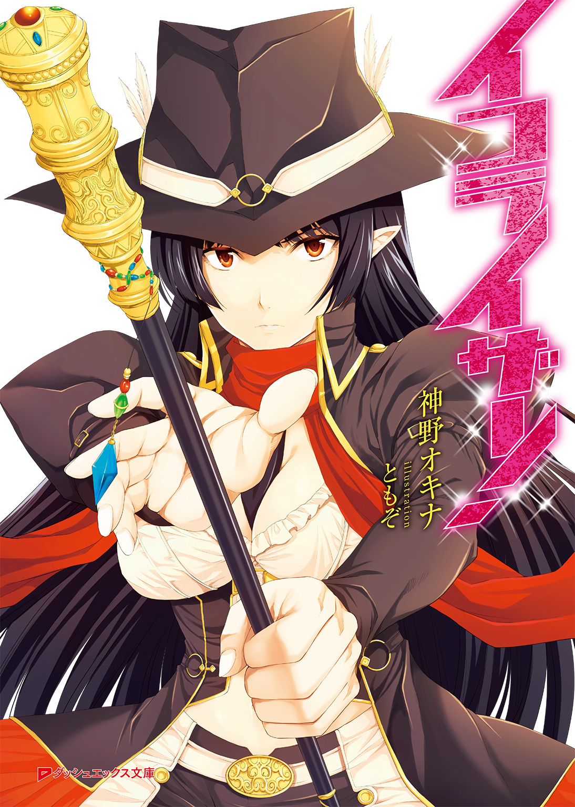
この本は縦書きでレイアウトされています。
また、ご覧になる機種により、表示の差が認められることがあります。
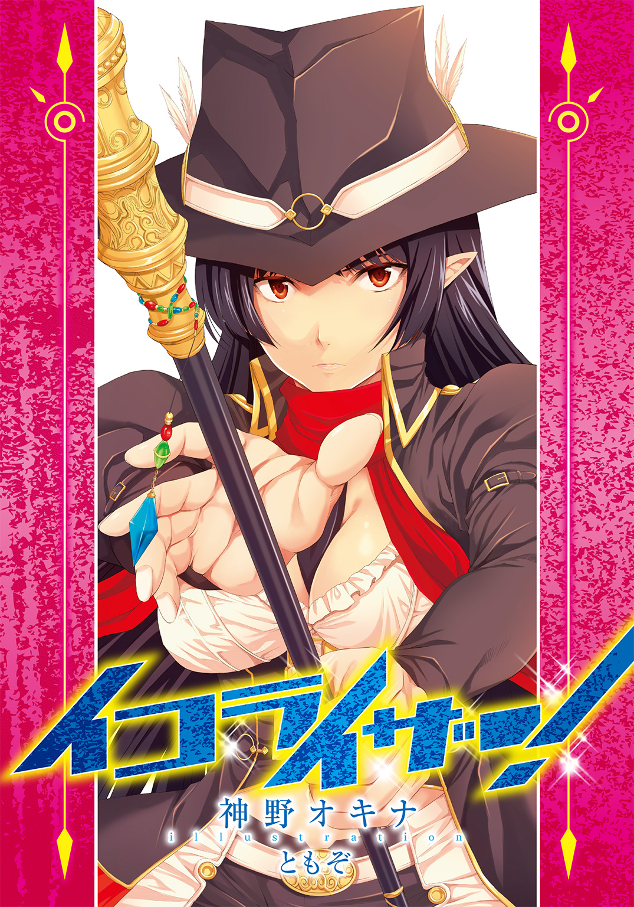
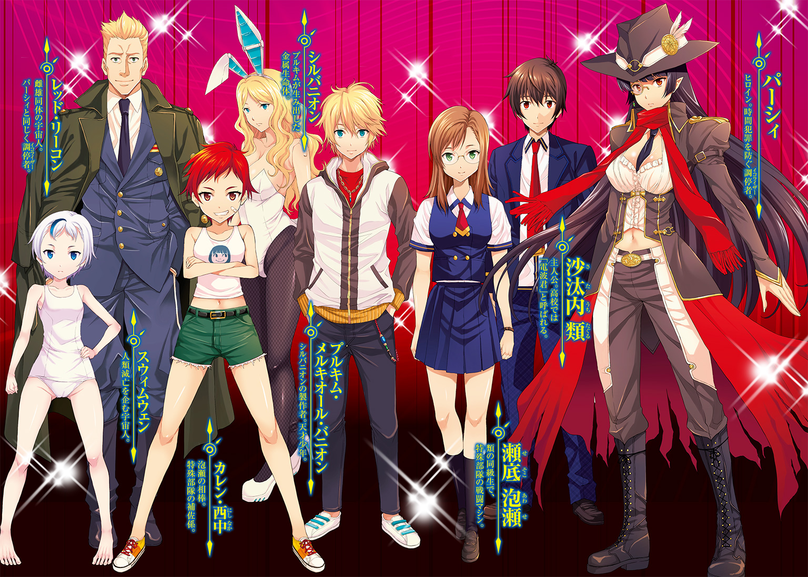
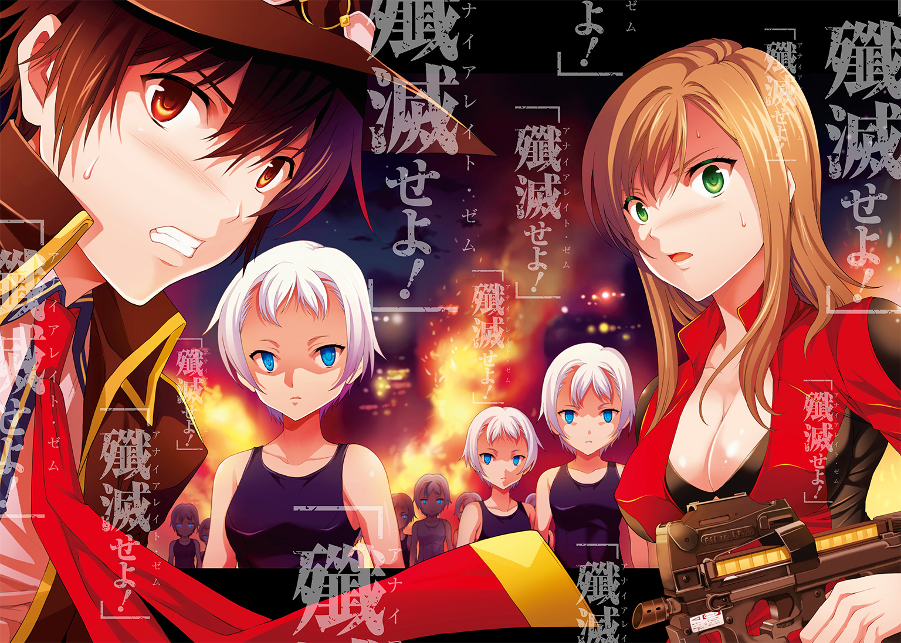
 ダッシュエックス文庫DIGITAL
ダッシュエックス文庫DIGITAL
イコライザー！
神野オキナ
○第一話：「They Call Me Trinity」（byフランコ・ミカリッツィ）
☆
「やぁ、タグル」
日の傾きかけた駅前のショッピングモールの入り口で沙汰内類は呼び止められた。
埼玉県の新興都市、朝ヶ市のメインストリートだというのに不思議に人通りのない日で、週末手前の金曜日、間もなく日も暮れるというのに、通りには車の行き来すらなかった。
振り向くと、少女が立っていた。
自分より三つは年下......十二、三歳ぐらいだろうか。
日に焼けた肌に、白人の血が入っているらしい彫りの深い顔立ちは整っていて、理知的な顔にノーズブリッジの単眼鏡が似合っていた。
背はタグルの胸あたりぐらいで、頭にはつば部分がテンガロンハットのように広く、本体の左右に大きな金色のメダルの塡まった黒の中折れ帽。
金色で鋲やらモールやらがあちこちについた、革製らしいロングコートも黒で、白いブラウス、腰から胸元までは茶色い革のコルセットできゅっと絞り、足下はどこでサイズを見つけてきたのか、間違いなくパンクロッカーなバイト先の店長もご愛用な、ドクターマーチンのブーツ。
初夏の五月とは思えぬコスプレまがいの格好なのだが、それがちゃんと「普段着」に見えるのは、その着こなしと、すらりと長い手足のおかげだろうか。
だが、タグルが奇妙に感じたのは少女の目だ。
明らかに自分よりも年下のはずなのに、目だけが、年老いた老婆のような、時間の重みがもたらす慈愛に満ちている。
顔立ちそのものは理知的で、不敵な笑みが似合いそうな鋭さがあるだけに、それだけで表情が酷く優しく見え――――その目が微かに潤んだ。
嬉しそうな笑顔だ――――まるで一〇年来の旧友に出会ったかのように。
「ずいぶんと久しぶりだね」
「？」
「タグル、この言葉を聞いたことはあるか？ 『いかなる過去があり、いかなる未来が待ち受けようともそれは些細なことである。大事なことは自己のうちに何があるかのみだ』」
「なに、それ？」
ちょっとひるむ。このところタグルはよく「ゲームの標的」にされることが多いからだ。いくらなんでも年下の少女にまでそういう対象にされているとは思いたくなかったが、今は警戒心の方が先に出る。
「ああ、やっぱりここで正しかったのか！」
そう言うと少女はタグルの首に抱きついた。
甘い、チョコレートに似た匂いと温かくてしなやかな身体の質量に思わずタグルは棒立ちになったままそれを受け止める。
「え？ え？ え？」
戸惑うタグルの身体を抱きしめ、子猫のように少女は頰をすり寄せた。
「ああ、タグルだ、私のタグル――――」
嬉しそうにきゃっきゃっと声まで上げた。
「え？ いやあの」
何とか少女を引きはがそうとするタグルに、少女は素早く囁いた。
「人違いなんかしてない。君はサタウチ・タグルだろう？」
ひょいと少女はタグルの首を解放し、道路に降り立ち、彼を見上げた。
「あ、い、いや確かにそうだけど......君は？」
「君の......そう、生涯の友人だ。まだ出会ってないが」
まるで自分のほうが十も二十も年上であるかのように少女は穏やかに微笑む。
「は？」
「あまり時間がないし、過度な情報は世界をゆがめるから手短に言う。タグル、君は今日、学校に忘れ物をしている」
「え？」
三秒間考え、タグルはバイトを終えて着替え直した学校の制服のポケットに触れた。
制服の内ポケットになく、他のポケットを探ってみたが出てきたのは財布と生徒手帳以外は、小銭と糸くずだけ。
「......ホントだ」
「忘れ物はバイト先にはない。学校に忘れてる......一度懐に入れようとして、腕時計を見たらバイトの時間が近かったんで慌てて飛び出し、内ポケットに入れたままだと思い込んでいたんだ。だからバイト先に行っても無駄だ」
「......君、見てたの？」
「いや、君から聞いた」
「？」
「取りに戻るかどうかは君の判断に任せる――――あと」
そう言って少女は「チョイチョイ」と外国人がよくやるように、人差し指を曲げてタグルを少しかがませた。
「おまじないだ」
そう言うと、少女の唇がタグルのそれに重なる。
「！」
真っ赤になって離れようとする少年を、少女は再び首っ玉にかじりつくようにして逃さず、たっぷり十秒は唇を重ね、それからロデオマシーンから飛び降りるようにして地面に降り立った。
「本当は色々説明したいが、あまり時間がない」
少女は酷く寂しげな笑みを浮かべた。
「もしも取りに戻るなら、私と、アワセにもよろしく......あと、ドーナッツを忘れるな。私はプレーンが好みだ」
少女の頰を光るものが流れる。
「君がこれから会う、あのころ、いや現在の私は傍若無人、ひどく無礼で、我が儘で、能天気でウンチクたれで、自分では宇宙一賢くて万能と思っているが、実際には無能で、人として様々なものが欠落しまくった愚かな女だ――――だから、よろしく頼む、私の愛しいタグル」
明らかに先ほど言ったようなただの「友人」相手には使わない言葉を少女は口にした。
「じゃあ、そろそろ行かねば――――愛しているよ」
その声はとても切なく聞こえた。
混乱しているタグルが思わず動きを止めてしまうほど。
「いつでも、どこにいても、君のことを想ってる。君もまた私に対してそうなってほしい―――そして、また私と一緒に私たちの王国を探そう！」
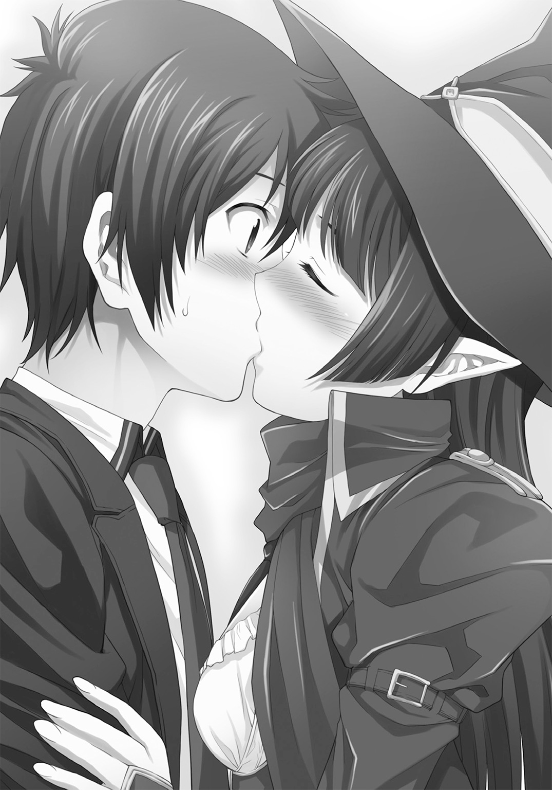
呆然とする少年に手を振ると、少女はコートの裾を翻して走りだす。
「あ、待て！」
突然現れておかしなことを言ったかと思えば、いきなりファーストキスを奪われて、タグルは少女を追いかけたが、キスの衝撃で妙に足がもつれ、さらにまるで子犬のようなダッシュ力で少女はみるみる彼を引き離した。
チャリチャリン、チャリンと何か小さな金属が弾み、擦れる音が少女のコートのポケットからして、やがてこぼれ落ちた。
「あ！」
追っているのに思わずその真鍮色したものを拾い上げてからまた後を追う。
それがいけなかった。
コンビニの角を曲がると、もうどこにもいない。
駐車している車の中、あるいはその下、がらんとしたコンビニの中にも、ビルとビルの間まで探したが、少女はいなかった。
「なんなんだ............あの子？」
ひょっとしたら何かの「ゲーム」かもしれない。
何しろタグルは入学して以来の「有名人」だ。中学生や小学生にまで「例の話」が知られていてもおかしくはなかった。
ぼんやりしていたタグルの視界の片隅を、銀色の毛並みを輝かせたウサギがよぎる。
「え？」
そちらへ振り向くが、がらんとした通りにはウサギどころか通る車もない。
「......くそ」
浮かんできた嫌な妄想を追い払うように呟くと、途端に世界が騒がしくなった。
何かが起こったのではない。
タグルの周囲に不意に群衆が現れ、道路には車が流れ始めていた。
そういえば、さっき少女を探しに入ったコンビニは、と見てみると、仕事帰りのサラリーマンやＯＬ、自分のような学生たちでごった返している。
「？」
数カ月前に「見た」状態がもっと悪化しているのか、と思った。
ちなみにあれから後、医者のすすめで脳のＣＴスキャンも取ったが、異状はなかった。
だとしたら医者の診断同様、何らかのストレスが原因で再び幻を見たということか。
「まあ、確かに今の学校生活はストレスだらけだけどさ......」
が、あの時のような不快さは皆無で、むしろどこか懐かしい気分が自分の胸の中にあることに気づく。
数カ月前に「見た」ものとは違う、もっと......優しい感じ。
「なんだったんだろう、あれ」
物の怪に化かされた、というのはこういうことなのだろうかと思いながら懐を探ると、やはり入れたはずのものは「忘れ物」のままだった。
「仕方ない、学校に戻ろう」
駅前の駐輪場に自転車を取りに戻りながら、タグルは呟いた。
三駅隣はちときついが、この時間、電車に乗るよりも、先週みつけた美味しいドーナツ屋で二つほどドーナツを買って道すがら食べる楽しみもある、と思い直していた。
手の中に握りしめた真鍮色の金属の小さな塊......潰れたライフルの弾だとは、今のタグルに知るよしもないものを、無意識のうちにコンビニ前の不燃ゴミのボックスに棄てたが、タグルの脳はそれを記憶しなかった。
☆
同時刻。
裏門から入ったらしい生徒のインターフォンを鳴らす音に、警備員は夜食を中断させられて、うめき声を上げることで罵り言葉に代えた。
「はい、こちら警備室」
インターフォンを押すと、奇妙な人物が見えた。
確かにもう夏も近く、プール開きも先週行われたと聞いていたが、それにしても水着姿の少女というのはどういうことか。
髪が脱色されているのは今のご時世、むしろ大人しいファッションだが、その少女はカメラを瞬きもせずのぞき込んで言った。
『忘れ物をしました、忘れ物をしました』
可愛らしい、しかし微妙に感情のない声。
「あなた、何年何組の、どなた？」
『二年Ｄ組のタナカハナコです。開けてください。中に入れてください』
パソコンにその名前とクラス名を入れて検索すると、一瞬画像が乱れたが、それは気のせいだったのか、すぐに今カメラに映っているのと同じ少女が、制服姿で正面を向いている写真と簡単な履歴が表示される。
「なんでそんな格好してるの？」
『いじめられたんです、いじめられたんです』
「いじめ？」
この前、法律が変わり、たとえ警備員でも学校に関係している者は「いじめ」と聞けば事情を聞き、報告する義務がある。
「ちょっと待ちなさい」
そう言って、彼は警備室の受付窓を開いて顔を出した。
「君、今......」
少女は先ほどまでとは打って変わった冷たく低い声で言った。
「先ほどの言動を否定する。今のは虚偽の情報である。そしてお前の業務は終了である。殲滅せよ」
「君、何を......」
少女の目をのぞき込んだ警備員の身体が、そのまま固まった。
☆
一時間後。途中でドーナツショップに寄って帰り道用の栄養を確保したタグルは、学校近くの坂を、自転車を漕いで登り切った所に奇妙な物を見つけて、首をひねった。
「棺桶......？」
西洋風で、六角形を引き延ばした形の、素材は不明ながら風景が映りこむほどつややかに光る黒地に金の金具が装着された棺桶。
それが、街灯に照らされて直立している。
「――――？」
さきほどの少女の件といい、何とも奇妙な風景に思わず自転車を停めて、棺桶の取っ手を握り、引っ張ってみようとして、やめた。
タグルは自転車を再び漕いで学校に辿り着く。
まだ開いている裏門脇に自転車を停め、中に入って校舎玄関脇に四畳半分だけ突き出て設けられた、警備室のインターフォンを押す。
「すみません、二年Ｄ組の沙汰内類と言います。教室に忘れ物を取りに来たんですが、開けてもらえますか？」
どたばたと音がして、受付の小さなカーテンが引かれ、人影が現れた。
「？」
「どなたかな？」
警備室からひょいと顔を出したのは、メダルの塡まった、テンガロンハットのようにつばの広い中折れ帽に赤いマフラー、ロングコートに黒髪、鼻掛けの単眼鏡......つまり、先ほど街中でタグルにいきなりキスしてきた少女そっくりな格好と顔立ちで、なおかつ、数歳成長させたような外見を持つ少女だった。
「わっ！」
（............どう見てもさっき、キスをした少女と同じ顔だよね？ いや、でもあっちはどう見ても小学生か中学生で、こっちは僕と同い年か二、三歳上だし......）
「き、君は......さっきの子のお姉さんか何か？」
少女は健康的に日焼けした顔に「不可解」と書いてあるような表情を浮かべた。
「君とは初対面のはずだが？」
同時にタグルは気づく。
この少女の目はある意味年相応で、あの少女のような見かけに不釣り合いな年輪を感じさせるようなところはなかった。
「あ、いや、そのさっき街中であなたによく似た子供を見かけたものだから......」
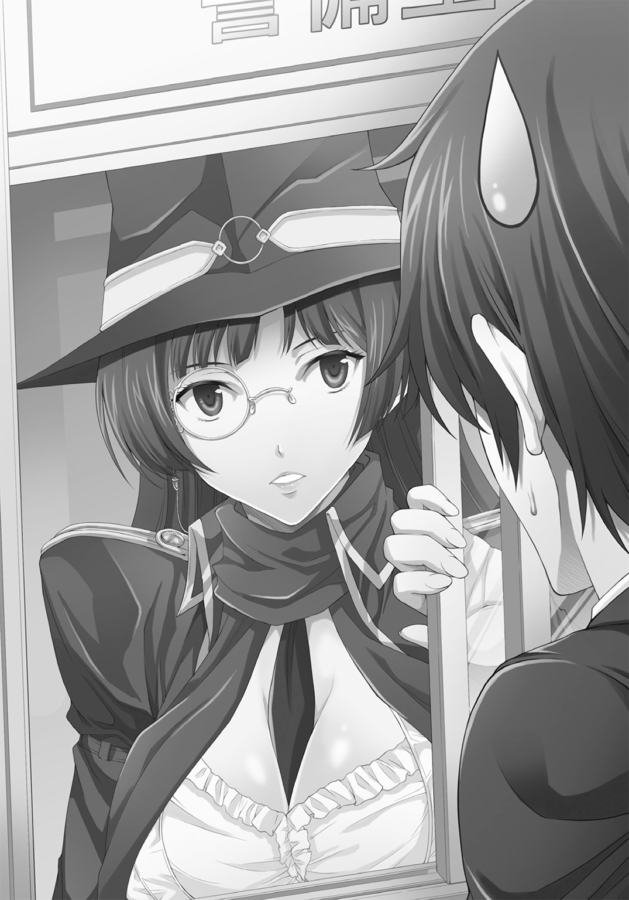
言い訳をする
「すまないが、学校はもう封鎖だ、鍵もかけた、宿直の先生もいない、帰ってくれ」
「あなた誰ですか？」
「警備員だよ」
「制服も制帽もないのに？」
学校荒らしというやつだろうか？
だが、犯罪者にしては堂々としすぎていた。
「あ、制帽はあるぞ、うん」
少女はソフト帽を外し、壁に掛かった制帽を勢いよく被るが、どう見てもサイズがあっておらず、ブカブカで目元まで隠れてしまう。
「あ、くそ臭い臭い臭い臭い！ どうしてこういう制帽の類は、いつまでも汗臭くなる構造のまんまなんだ！」
わたわたと帽子を脱ごうとする少女の背後に、ちらりと何か見えた。
「え？」
二足の靴。踵を下、爪先を上にしている。
靴の上には足首があって、さらに見慣れた警備員の制服の色をしたスラックスを穿いた足も見えた。
ぴくりとも動かない。
タグルの脳裏に、小学一年の頃、道ばたで倒れているお年寄りのために叫んで以来の言葉が明滅した。
おまわりさん、事件です。
くるりと踵を返し、しっかりドーナツ屋の袋を持ったまま走り出す。
確か坂を下りたところに交番があって、定時巡回もしていたはずだという情報を頭の中から引き出しつつ、自転車に鍵をかけなかった自分の判断に感謝する。
「し、失礼しましたーっ！」
「しまった、気づかれた！」
警備室のドアが開いて長身の少女が跳び出してきた。
スマートフォンを取り出そうとするタグルを見て、
「わ、ばか！ 殺したりしないって、あと通報なんかやめろ、私が来たときにはもう死んでたんだ、残念ながら手遅れだ。私がやったんじゃない！」
少女はそう怒鳴りながら後ろから羽交い締めにしてきた。
頭一つ高いらしく、タグルの後頭部から左右の頰にかけてを、ブラウスに包まれた豊満な胸の柔らかい塊が包み込むが、その感触を楽しむ余裕はない。
「お、おまわりさーん！ 殺されるぅう！」
ジタバタあがくが、少女は何かの体術を会得しているらしく、暴れるタグルの身体を巧妙に押さえ込み続けた。
「いいか、君に言い聞かせることがある。ひとつ、私は人殺しじゃない、ふたつ、警察の手に負えない事件が進行中で、人死にが増えるだけだから決着のつく一時間後まで警察に通報はするな、ここは危険だ、三つ、それが守れるなら、解放するからとにかく立ち去れ、以上だ！」
それだけ言うと少女は手を離した。
爪先が軽く浮く形で拘束されていたタグルはそのまま地面につんのめって倒れ、慌てて起き上がった。
「どういうこと？」
自分が思いっきりジタバタあがいてもかなわないこの少女が、もし警備員を殺すような人間ならとっくに殺されている、つまり彼女の言うことは本当ではないか、という判断は出来た。
「第一、君は一体誰なんだ？」
「ああ、そういえば自己紹介もしてなかったな。私は説得者というものだ、サタウチ・タグルくん」
「どうして僕の名を？」
「他にも色々知ってる。君が入学して三日目に、学校が爆破されて炎に包まれる夢を授業中に目を開けたまま見て以来『電波君』と呼ばれてることも」
「！」
一瞬、タグルの顔が羞恥で真っ赤になった。
出来れば思い出したくないことを、なぜ初対面の少女が知っているのか。
「あれは正夢......というより、今日から三日後、君が殺される瞬間に叫んだ精神のこだまが過去の君の脳で再生されただけだ。この町には時間の特異点が出来てるからね」
「どういうこと？」
ただの妄想や精神の錯乱ではない、と言われてタグルは驚いたが、その説明もまた意味不明だった。
「だが、私が来たから大丈夫、君は死なない。判ったら何を忘れたかは知らんがさっさと走って、十分以内に学校から三〇〇メートル以上は離れろ。出来れば一キロ以上」
「何いきなり妙なことばっかり言ってるんだよ、ちゃんと説明して！」
「この世で大事なのは納得のいく説明じゃなくて命だ、ではさらば！」
そう言うと、少女は警備室の中に戻る。
開けようとするタグルだが、素早く鍵をかけられた。
「なら！」
と受付の腰窓へ回り込むと、そこもパスウィダーを名乗った少女の、白い絹の手袋につつまれた指先が施錠するところだった。
どんどんと拳で叩くが、頑丈そのもののサッシには無駄な行為だ。
（だからって見過ごしておけるか！ 殺人だぞ？）
妙にムキになったタグルは素早く周囲を見回した。
この前壊れた花壇を補修するために積んである煉瓦が目に入った。
「じゃあこうだ！」
その一個を摑んで窓ガラスに叩きつけようとするよりも早く、中折れ帽に眼鏡の少女は、どこからともなく杖型の機械を取り出し、窓へと十二面体の宝石が埋め込まれた握り部分を突き出した。
握り拳ほどの宝石の真ん中部分がカチリと左右に開き、電極のようなものが突き出すと蒼く輝き、叩きつけた煉瓦は窓ガラスに跳ね返された。
ぶつけ方が悪かったのかともう一度叩きつけるが、手前で巨大で頑丈な風船を殴りつけたかのように、握りしめた煉瓦の塊は跳ね返された。
「？」
首を傾げるタグルに、少女は杖状の機械でぽんぽんと肩を叩きつつ、自慢げに微笑みながら壁のインターフォンのスイッチを入れた。
『この扉はもちろん、校舎全ての表面にある空気を高圧縮して強化した。これでトラックが突っ込んできても壊れない。窓ガラスを壊して中に侵入することは不可能になった、わはは、凄いだろう』
言いながら、少女はいつの間にか手にしたタグルの買ったドーナツの袋の中から、プレーンドーナツを一つ取り出してかじった。
『うん、美味い！ ちょうどドーナッツを切らしていたところだ、感謝する』
まるで子供のように顔をほころばせると、外見よりも幼い印象になる。
「学校爆破するんだろう、君も死ぬぞ！ 開けろってば！ あとドーナツ返せ！」
『私が爆破するわけじゃない、爆破する奴を爆破するんだ。それとドーナッツぐらいいいだろう？』
むっとした顔でパスウィダー。どうやら意外と子供っぽい。
「同じだし、ドーナツも良くない！」
『全然違う、私が爆破するのはこの学校だけ、奴らはこの学校が手始めだ、これは大きい。何よりも君の願いも叶う。あとドーナッツ、だ。ドーナツというのは正しくない。この素晴らしい食べ物に対する敬意が足りないと怒られるぞ』
「学校が爆破されろなんて願ってないってば！ だからドーナツ返して！」
『ん？ そうだっけか？ まあいい』
パスウィダーはコートの中からお茶のペットボトルを取り出してひと口飲んだ。
「だから良くないって！ あとお茶飲む前にここを開けて！ 説明してよ！」
『とにかく、今学校の中で進行していることは、君が関わってはいけないことだ、あとこれは最後の晩餐にとって不足ないので貰っていく――――生きて帰れたら、この分はカリフォルニアのランディ・ドーナッツを買ってきて埋め合わせをするから。
とにかく早く帰れ、三日後に死ぬ運命を回避できるんだ、今更繰り上げたりするな、じゃあな！』
そう言いながら最後のドーナツを口にくわえ、杖状の機械を小脇に抱えてパスウィダーと名乗った少女は身を翻し、校舎に通じるドアの向こう側に消えた。
「待てってば！」
取り残されたタグルはどうしようかと考える。
もともと「忘れ物」は大したものではないし中身も見ていない。
「電波君」扱いされるようになってから、学校生活に期待するのはやめているので、碌なものではないとは思う............が、万に一つ、いいことであったら嬉しい、という程度だ。
いわば、僅かな夢にすがっている。封筒の中のシュレディンガーの猫。
これ以上揉める必要もない。
あの少女は訳が分からない存在だが、どうもこの場を立ち去れば、自分の一生には恐らく二度と関わり合いはないだろう。
世の中の厄介ごとに自分から関わっても褒められることはない。
帰ろう。
なんか偉そうで傍若無人で、他人のドーナツを勝手に奪って喰ってしまうような少女だ。
〈あのころ、いや現在の私は〉
自転車に戻ろうとしたタグルの頭の中に、妙に鮮明に幻の少女の言葉が蘇った。
〈傍若無人、ひどく無礼で、我が儘で、能天気でウンチクたれで、自分では宇宙一賢くて万能と思っているが、実際には無能で、人として様々なものが欠落しまくった愚かな女だ――――だから、よろしく頼む、私の愛しいタグル〉
先ほどの酷く寂しげで、切ない声が頭の中で再生される。
同時に抱きついてきた少女の体温と甘い香り、唇の感触も。
「！」
思わずタグルは口元を押さえた。
あれは幻なんかじゃないのではないか、という確信に近い思い。
それと同時に何かが、自分の中で引っかかっているのを、タグルは感じた。
このまま何が起こるか知らずに帰っていいのか？ という好奇心のささやき。
そして蘇る。
数カ月前、入学したてのある日、授業中に自分の頭の中を襲った悪夢。
学校が燃えていた。
生徒も教師も、炎の中で小柄な影に追われ、銃声がする校庭で、廊下で、教室で、まだその頃は夏前で再開されていない水をたたえたプールの側で、体育館で、校門で、屋上で、死体となって動かなくなっていた。
「逃げろ！ 逃げるんだ、今すぐ、ここじゃない、ここは！」
叫んで走り回り、教師に羽交い締めにされるまでタグルは暴れたという。
当人にその辺の記憶はない。
いきなり学校が燃えて、気がついたら病院にいて、学校が燃えていないと看護師から聞かされた時、安堵で涙を流したことは覚えている。
薬物使用を最初に疑われ、様々な検査がタグルに施された。
受験ノイローゼだろう、と二週間後に医者は結論した。
タグルも、そう思うしかなかった。
母親は父親の転勤に付き合って家族が移動し続けたことが原因だと自分自身と父を責め、慌ててタグルは二人の間に割って入ったが、今も両親の仲はぎくしゃくしている。
そして、学校では「電波君」「イタコ君」などの陰口が囁かれ、タグル自身も学校の中では浮いているし、時折からかいの対象にもなっている。
すべて、あの幻のせいだ。
それをあの少女は「未来の自分から発せられたものだ」と言う。
本当なのか？
だとしたら、あの少女は何者なのか。何が起ころうとしているのか。
「............」
好奇心と理性と直感がない交ぜになって十秒ほど考え、タグルは妥協案をひねり出した。
「もしも、あそこから中に入れなかったら、帰ろう」
呟いて、タグルは、上から見るとＨ型の校舎の、東の片隅にあるサッカー部の部室の窓に回った。
外に置いてある壊れかけのボール入れを踏み台にして、高窓にゆっくりと手をかける。
普通にサッシの枠に手が触れ、横にずらすと、高窓はあっさり開いた。
「......やっぱり」
パスウィダーと名乗った少女は「校舎全体を普通の方法では破壊出来ないように強化した」と言っていた。
だから「窓ガラスを壊して中には入れない」と。
見方を変えれば「窓ガラスを壊そうとしなければ中に入れる」ことになる。
この高窓は、サッカー部にいる連中が、練習後部室への忘れ物を取りにいったり、授業をサボりたい時に使うのを、教室で小耳に挟んで知っていた。
何気なく聞いていたことだが、まさか役に立とうとは思わなかった。
（............決めたことだもんな）
ここが開かないのなら大人しく帰るつもりだったが、開いてしまった以上は、中で何が起こっているのかを確かめなければならない。
タグルは高窓に身体を滑り込ませ、汗臭い部室の中に潜り込んだ。
「......っぷ」
どうしてこう、体育会系の男子部室は汗臭くて汚いのだろう（もっとも、女子の部室に入ったことがないが）、と思いつつ、タグルは息を詰めるようにして部室の中を小走りに駆け抜け、ドアから校舎内に出る。
そのまま廊下を抜け、二階に一度あがって、欧米風にロッカーの並ぶ大廊下にある自分のロッカーから「忘れ物」を取る。
「............」
パスウィダーを含めた人の気配はない。
ばたん、という扉が開閉されるときの大きな音が、一階から響いてきた。
引き返す。
それから西校舎との境目にある東階段まで来たあたりで、西校舎の奥......体育館のあたりからパスウィダーの凜とした声が聞こえてきた。
「私の名はパスウィダー！ 時の流れの調停者として命じる、スウィムウェン。第六八〇五号銀河系の住人たちよ、この惑星もこの時代も君たちのものではない！ この建物内に張り巡らせた全ての装置を回収し、立ち去れ！」
答えはなく、次の瞬間には何かが爆発するような音が校舎に轟いた。
「！」
空っぽの校舎に響く大音響に思わず耳を塞ぎ、身をかがめる。
爆発音は今度はぐっと小さくなって何度も繰り返され、タグルは背筋がぞくぞくするのを感じた。
廊下の体育館側が明るく輝いている――――炎が燃えているのだ。
怖い。
とっさに携帯を見たが、驚いたことに圏外になっていた。これも少女のせいだろうか。
ともかく、今は大人にすがれる状況ではなくなっていた。
だがそれ以上にパスウィダーが心配だった。
奇妙な話だが、殺人犯かもしれない少女なのに、今やタグルはどこか「違う」という確信も同時に抱いていた。
どっちにせよ、タグルの父が常に言うように「死んでいい命などない」のは間違いない。
こっそりと、足音を立てないように身をかがめながらタグルは小走りに体育館へ向かう。
廊下はどんどん明るくなっていき、炎の熱と木材の燃える音で満たされ、さらに火災報知器の鳴る音が響き始める。
構わずタグルは走った。
体育館に通じる両開きの扉は、へし折れて廊下に転がっている。
ついでに、見覚えのある物体も転がっていた。
パスウィダーの持っていた「杖」だ。
思わず拾い上げると、黒い金属で出来ている「杖」は外見以上に機械的なディテールが多く、重いのに気づく。
さらに小さな爆発音がいくつも響く。
タグルは慌てて「杖」を手に燃えさかる体育館内に飛び込んだ。
奇妙なものが炎の彼方に見えた。
白いニーハイソックスを着用した、スクール水着（濃紺）の少女。
ひとりではない、体育館の真ん中に五〇人ほどいた。
みな、真っ白な肌で、銀色の髪をし、整った美しい顔をしていた。
唯一ないのは個性で、どの顔も同じで、身長も同じくらいだった。
表情まで「無表情」で統一されていた。
「？」
思わず足を止めたタグルを、周囲を睥睨していた一人が見つける。
「他に侵入者、パスウィダーの装備所持を確認」
十二、三歳の北欧系美少女の顔立ちなのに、漏れてくる声は、野太い中年男性のそれだ。
「関係者と思われる、装備破壊、殲滅せよ！」
言いながら、彼女はそれまで床に引きずっていたものを一斉に構え直した。
ＡＫ74アサルトライフル。自衛官の父の書斎にあった雑誌で、何度となく見ている。
タグルはすぐ側の入り口に飛び込み、銃弾が炸裂するのを背中に感じつつ、バスケットコート四枚を見ろせる観客席に駆け上った。
「報告、侵入者を再発見」
「肯定する。パスウィダーの『杖』を確認、相棒であると認識」
「否定する。一時判断保留、資料に載っている人物とは身長と体重、および性別が違う」
全員の目の中に、燃えさかる炎とは違う光が明滅し、回転するのをタグルは見た。
人工物、という言葉が脳裏をよぎる。
少女たちは単なるそっくりさんがあつまったのではなく、同じ鋳型から抜かれた「商品」のようにそっくりで、それと同時に顔も身体も完全に左右相称を保っていた。
美しいだけにその微妙な差のなさが際立って見える。
彼女たちは人間じゃない。
タグルは直感したが、動こうにもこの不気味な相手はどこへ逃げても追いかけて来るであろうという、不気味な冷静さと能力を感じさせた。
下手に動けば即死する。
頭の片隅で、警備員の死体（見えたのは足だけだが）が明滅する。
「否定する。推論、イコライザーのワークメイトはしばしば変更される、主な要因は性格の不一致、人生設計による職業としてのワークメイトの見切り」
濃紺のスクール水着は凹凸のほぼない身体を包み込み、少女たちは不気味に会話を続ける。それは大勢で行う独り言のようだ。
「肯定する、問題ない、殲滅せよ」
「肯定する、結論：殲滅せよ」
少女たちは互いを見ようともせず、口々にそう言ってタグルの抹殺を決定すると、手に持っていた武器を次々と構えた。
映画や漫画でおなじみのダネルＭＧＬリボルバー式グレネードランチャー、機関部そのものを肩に担いで発砲するバレットライフルの発展型、Ｍ82Ａ２対物狙撃銃。
ベルト弾倉の装着されたミニミ分隊支援機関銃に至っては少女数名が両手に一丁ずつ構えた............全ての銃口はタグルを狙っている。
「い！」
五〇以上の銃口に狙われて、思わず固まりそうになるタグルだが、本能が肉体を動かして真横に走る。銃の場合、自分にとって左側、相手にとっては右に移動する物は狙いにくい、という話をどこかで聞いたと脳の奥が叫んでいた。
「肯定する、攻撃開始」
「殲滅せよ！」「殲滅せよ！」「殲滅せよ！」「殲滅せよ！」「殲滅せよ！」「殲滅せよ！」「殲滅せよ！」「殲滅せよ！」「殲滅せよ！」
銃弾と砲弾がどかどかと観客席に当たって爆発と粉砕を繰り返しながらタグルを追う。
映画やテレビと違い、背後で発生する銃弾の撃ち込まれる衝撃波や音の響き、身体のあちこちに当たる破片、そして実際に自分が生活してる光景が破壊されていくのは、恐ろしいほどの「リアル」だった。
殺される。
それだけで座り込んで失禁したくなるが、それ以上に生存本能がタグルを動かす。
悲鳴が口から出てきそうになるが、出たらおしまいだという自覚があった。
少年は悲鳴を押し殺しながらすり鉢状の客席を上下ジグザグに移動していく。
もう少し冷静なら、銃撃がわざと彼を外しているのだと気づいたかもしれない。
「報告、移動速度による照準データ収集完了。殲滅せよ」
「肯定する、殲滅せよ」
「殲滅せよ」「殲滅せよ」「殲滅せよ」
というスク水少女たちの野太い最終宣告の声に被さって、
「あと二メートル走って横に飛べ！」
という低く押し殺したパスウィダーの声が響いた。
「どどどどっち？」
「左！」
言われるままに地面を蹴るのと、スク水少女の群れが引き金を引くのはほぼ同時だった。
ただし、僅かにタグルの動きのほうが速い。
一歩目。
銃弾が右のふくらはぎをかすめて衝撃波が衣類の生地をはたいた。
二歩目。
背中と胸を弾丸が横切る衝撃波。
これまでと違い、恐ろしく近くて、服の繊維がちぎれ飛ぶ。
三歩目。
グレネードランチャーの発射音が連続し、そして、左に......観客用の、もう一つの出入り口に向けて飛ぶ。
銃弾の炸裂する音と爆発音が一気に壁の向こうの音声に変わり、同時に、チョコレートのような甘い香りと共に柔らかくて温かいものが視界を塞いだ。
「大丈夫か、サタウチ・タグルくん？」
顔の真正面に、鼻掛け眼鏡をかけた少女の顔があった。
一瞬、心臓が跳ね上がる。
どうやら自分は彼女に抱き留められ、そのままくるりと背中を向けた彼女の陰になっているらしい。
「私の蒸気精霊杖をありがとう。何とか相手の最初の一撃を避けたのは良かったんだが、取り落としてしまってね」
そう言って手袋をはめた手が杖を受け取る。
「だが、一体どうやってここに入った？」
「部室の窓で鍵が開けっ放しになってるところがあるから、そこから」
「――――なるほど、亡くなった警備員はそれを見逃していたのか。全ての鍵がかかっているものだと思ってたんだが」
爆発や銃弾の炸裂する音はまだ連続している。
「移動しよう、私の周囲ならしばらく安全だが、力場発生装置はあと一分しか持たない」
そう言ってパスウィダーは頭上を仰ぐ。
見ると、小さな石鹼ほどの大きさの黒い物体がぷかぷか浮いていて、銃弾が撃ち込まれたり爆発が起こる度、それを中心にうっすらと黄色い光がドーム状に二人を包んでいるのが判る。
「あれ......」
「あらゆる物理、光学攻撃を防ぐので便利だが、五分間しか使えないのが難点でな」
そう言いながらタグルを立たせ、階段を降りていく。
「生命反応が消えた」
「肯定する。着弾による音波変化を確認。肉体的破損は観測されていない」
「肯定する、パスウィダーによる保護が行われたと確認される」
「結論、集中放火せよ。そして殲滅せよ」
「殲滅せよ！」「殲滅せよ！」「殲滅せよ！」「殲滅せよ！」「殲滅せよ！」
「殲滅せよ！」「殲滅せよ！」「殲滅せよ！」「殲滅せよ！」「殲滅せよ！」
そんな声が聞こえてきて、足並みをそろえた足音が響き始める。
「逃げたほうがいいと思うけど？」
観客用の階段を降りると踊り場、そこから右に降りれば外、左に行けば体育館に戻る。
「出来ればそうしたいが今は駄目だ」
「なんで？」
「奴ら、この学校全体の電気配線を利用して建物そのものを奴らの母船を呼ぶための誘導波の増幅装置にしている。このままじゃ一八〇〇万の増援部隊がやってくる」
「あれの？」
「そうだ――――出来れば、説得して返したかったんだが、スウィムウェンは交渉という概念が未発達でな。彼女たちをなんとかしないと、この時代で地球の人類は滅んでしまう」
話が壮大すぎる上に浮き世離れしすぎて、タグルはどう反応していいのか判らなかった。
体育館側の入り口に武装した人影が上履きの足音も高く、規則正しく近づいてくるのが見える。
「じゃ、どうするの？」
「こうするんだ」
パスウィダーはウィンクして、タグルから受け取った「杖」を頭上にかざした。
再び宝石の中から金属の端子が現れ、青い輝きが周囲を染める中、激しいスパークと金属同士が擦れて起こる悲鳴のような音が響いたかと思うと、体育館入り口付近からこっちの足が二ミリは宙に浮きそうな「どすん」という音とともに大量の埃が吹き込んでくる。
「なに？」
「とあるものを固定するネジの摩擦係数をゼロにしたんだ............上に戻ろう。ちとえぐいが奴らの本質が見られるぞ」
事情が分からぬタグルの手を引っ張って、パスウィダーは階段を再び上る。
「足下に気をつけたまえ、こういうとき、慎重さを欠いて階段で滑って転んで頭を打って死ぬ確率が二五〇〇分の一はある」
「え？ あ、う、うん」
観客席に出て、下を見ると、天井にいくつも取り付けられているサーチライト型の照明が二つ、スク水少女たちの上に落下し、無残に潰された少女たちの手足が、機材と砕けた床材の間に見える。
一瞬、警備室の足が脳裏に浮かび、思わずタグルはパスウィダーを見たが、少女は平然としている。
「大丈夫だ、すぐ起き上がってくる」
「そんな馬鹿な！」
「相手の姿に誤魔化されるな。あれは宇宙人だ」
「............」
判ったような、分からないような理屈だが、今現在はパスウィダーよりもスク水少女たちのほうに不気味さを感じるのは確かだ。
がぎがぎという木材と金属の擦れる音、さらに金属同士がひしゃげ、曲がる音。
「報告、再生完了、復旧する」
その声に振り向くと、異様な光景があった。
体育館の床で、照明の下敷きになっていたはずのスク水少女たちが、次々とそこから照明を持ち上げ、立ち上がってくる。
どう見ても照明は金属の塊で、重さは一トンは下らない。
それを、まるで紙で出来たニセモノのように持ち上げ、少女たちは立ち上がった。
手に手にひしゃげた武器を構えていたが、
「報告、武器破損箇所の再生を開始する」
とそのうちの一人が言うと、全員の腕の一部が細長くスライドして、そこから無数の光ケーブルのようなものが伸びてきて、生き物のように銃器類を覆っていく。
「！」
「判っただろう、あれは人間じゃない」
驚愕に固まったタグルの腕をパスウィダーが戻ってきて引っ張り、ふたりは再び走り出した。
「よーく判った！」
走りながら二人は校舎に飛び込むと角を曲がり、さらに二階、三階、四階へと駆け上る。
「上に行ったら追い詰められるよ！」
「奴らをこの校舎に引き込むのが狙いなんだ！ それに誘導信号の増幅装置の中心はこの校舎全体だからね！」
「報告、武器修復完了、追撃を開始する」
「殲滅せよ」「殲滅せよ」「殲滅せよ」
階段の下から男のものにしか思えない声が聞こえてくる。
「隠れよう」
そう言ってパスウィダーはタグルの手首を握って手近な教室の入り口に杖を向けた。
杖が光ると同時にカチリという音がしてドアが閉まる。
「窓際に」
慌てて、窓から差し込む月の明かりだけを頼りに、机にぶつからないように注意しながら言われたとおりにする。
「どうするの？」
「しばらく隠れる。奴らの音声と、光学センサーはそんなに精度が良くない。まして、ここは彼女たちの母船をこの時代に呼び込むための増幅装置だから余計な多次元スキャニングとかをしてしまうと、せっかく増幅した誘導信号が乱れる」
そう言って床に腰を下ろした。
タグルもその隣に座り込む。
「ところで君は馬鹿か？ それとも理解力に問題があるのか？ なんで逃げなかった？」
「あんな風に言われて素直に帰れるもんか！ ......まあいいや、アレは何？ ロボット？」
ようやくタグルは相手の正体を自分がまるっきり知らないことに気がついて尋ねた。
「スウィムウェン。一五八〇世紀に人類が接触するはずの『機会』生命体の一種だ」
一五八〇世紀、という単語は恐らく西暦一五八〇年か、一五八年後の言い間違いか、こちらの聞き間違いだろうと何となくタグルは理解し、むしろその次の言葉に反応した。
「機械には見えないけど？」
「機械じゃなくて機会生命体だ。自己進化自己増殖のための最適化手段を常に模索して宇宙をさまよいあらゆる生命体、知性体を侵食、同化していく、本来は金属生命体だが、確かにもうほとんど機械みたいなもんだし、当人たちはそう名乗ってる」
パスウィダーの解説は、一時間前なら「馬鹿」のひと言で片付けられるような話だったが、今現在は「事実」としてすんなりタグルの中に受け容れられた。
「つまりあれって自己改良するアンドロイドみたいなものってこと？」
「その通り、彼らが求めるものは至高の存在で、あの姿は今のところの地球という最大の的に同化した最終段階だ」
「......その結果があのスク水姿？ 確かにどうかしてる」
「ジョークは下手だな、君」
パスウィダーは苦笑を浮かべる。
「そんなつもりで言ったんじゃないよ」
「......まあいい。その時点での未来では人類は遺伝子絶滅兵器で滅びかけ、蜘蛛とハチに遺伝子融合することで闘争本能を強化して生き延びた。スウィムウェンはその最初の不幸きわまりない接触相手だ......地球外生命体なんかと融合すれば碌なことにはならないが、知らなかったんだから仕方ないし、戦争を仕掛けてきたのはスウィムウェンのほうだから、どっちもどっちだが」
「まって、蜘蛛とハチって地球の生き物じゃなかった？」
「そうか、この時代の人間も知らないんだな、蜘蛛と海豚とハチとカラスと雀、あと昆虫の七割は地球外生命体だぞ」
「は？」
「知らないことは幸せだろう？」
にやっとパスウィダーは笑った。
「もっとも、人類はその後融合を解いて穏やかさを取り戻し、僅かに生き残った彼ら......外見的に言えば彼女らだが......を保護し、千年の「存在固定」をかけて放り出した」
「エクソシストロック？」
「エクシテンス・ロックだ、時代から追放し、運命を固定化した。戦争に勝った前後千年、スウィムウェンが二度と現れないようにした」
「そんなこと出来るの？」
「『ドクター・フー』でいうところのタイムロックみたいなもんだ――――で、負けたスウィムウェンは至高の存在になるために『勝つまで負けるな』という厄介なものが本能レベルでの種族命令として存在している。
だから未来で自分たちを打ち倒す人類を、千年以上の過去に遡ってなんとか根絶しようと考えているわけだ......基本、先ほど見せた異様な腕力と現地調達の武器を使うことしか知らない脳タリンだが、逆に諦めるということを知らない。時間の流れに飛び込んで、まだ人類が遺伝子融合する前の地球世界を侵略して、未来の宿敵を抹殺しようという程度の知能と技術もある」
「つまりこれ、遠い未来のリベンジマッチってこと？」
「そういうことだ............理不尽だが、このままだと、我々は見つかって殺され、学校の封印が破られて、数千億体のやつらがやってきて、地球が滅ぶ」
「しれっと言わないでよ！」
「仕方がない、事実はシンプルに告げないとな。だいたい逃げろと言ったのに戻ってくるからだ......知らぬが仏という言葉がこの国にはあるだろうに」
「そんなルー語は知らないよ..................でも、タイムパラドクスが起こるから奴らの侵略って結局ないことになるんじゃ......いや、それ以前にひとつ訊いていい？」
「なんだね、少年」
「なんでそんな未来のこと知ってるの？」
「ああ、簡単な話だ。私は時間旅行者だからね」
「え？」
さらりとまた、正気を疑うようなことを、帽子を取って汗ばんだ前髪を直しながらパスウィダーは口にした。
髪の毛を指先でかき上げるとき、先端が尖りすぎている耳が見える。
（え、エルフ？）
今更ながらにタグルは驚く。
そんな少年の反応に気づかないまま、パスウィダーは答えた。
「と言ってもタイムパトロールではない。私は『調停者』だ」
「どう違うの？」
「まずその１。タイムパトロールはタイムパラドクスが『ある』ことを前提にして行動するという架空の組織だが、我々は組織じゃない、趣味人の集団だ」
「？」
「その２。あと五年するとデンマークのコペンハーゲンと、ノルウェーのオスロでそれを証明する数式の組み立てが始まるが、実は今君たちが考えているようなタイムパラドクスは発生しない」
「は？」
「過去に遡って歴史を大きく変えた場合、絶対時間計で計測される『未決定時間』内に修正しなければ、世界線が分岐してパラレルワールドが発生する。
それが無限に繰り返されていくだけだ......ということが判って以来、過去や未来、時には宇宙から、超技術を持った連中が、自分たちより劣った科学や文明を保有する時代の惑星で悪さをしかけることになった。
何しろ自分の親を殺しても自分は消えない――――ましてそれが赤の他人なら、どんなことでも良心は痛まない、というわけだ。
わかるだろう？
兵器の実験、欲求不満の憂さ晴らし、独裁制で千年続く王国が本当に出来るかどうかという社会実験............動機は様々だが、パラドクスが起こらないから裁きもない」
一気に説明するとパスウィダーは中折れ帽を被り直した。
「つまり、時間犯罪はある一定条件を満たせばやりたい放題、ということ？」
「そういうことになる」
口頭による要約問題を見事にクリアした生徒に向ける教師の笑顔をパスウィダーはタグルに向けた。
「............じゃあ、なんでこんなことを？」
タイムパラドクスが起こらないなら、放置するという手もあるはずだ。
が、パスウィダーは苦笑に近い笑顔を浮かべて頭を振った。
「それでも殺人は殺人だし、犯罪は犯罪だ。良心がある限り見過ごしてはおけないし、私はその行為を知り、阻止できる手段がある。やらない理由はない............タイムマシンが使えるからといって神のように振る舞っていいわけはない............まあ、ギリシア神話の神とかはクソ野郎ばっかりだが。それを観客のように傍観する、というのは心が腐る。心が腐れば死人と同じだ。私は時間旅行を楽しみたい、目的もあるのでね」
だから、自分のためにやっているのだ、とパスウィダーは言った。
その瞬間だけ、彼女の顔に羞恥の表情が浮かび、消えたのを、タグルは見た。
「............なるほど」
細かい事情はわからないが、どうやら彼女は正しいことをしているらしい、とタグルは納得した。
今の自分が信用し、運命を託していい人物だと改めて確信する。
少なくともいきなり機関銃やグレネードランチャーをこちらに向けて撃ってくるスク水少女軍団よりはマシだろう。
「で、どうするの？ 何か予備の武器とかある？ ここまで来たんだ、手伝うよ」
「武器はあんまり持たない主義なんだ。第一、君がここに引き返してくること自体、想定外もいいところだし」
「その杖の魔法でやっつけられないの？」
「いや、これは魔法じゃなくて、思考入力型の素粒子の簡易コントローラーというか......護身用なんだ。杖にもなるし便利だから持ってる」
「じゃ、何か他に武器は？」
「基本、この杖と弁舌だけで何とかするのが通常なんだが――――いや、キミが本当に訊きたいのはそういう意味じゃなくて、予備の武器だよな、うん」
パスウィダーは困ったような顔になったが、
「あ、そうだこれがあったか」
そう言って、コートの内に手を突っ込みしばらくごそごそとやったあと、一丁の銃を取り出した。
マシンガンでもなければ自動拳銃でもなかった。
タグルが見ても、明らかに古いデザインで、彫刻があちこち施された大型リボルバー。
「なにこれ？」
「つい最近まで私と一緒に働いてくれていた相棒の持っていたものだ。万が一の時に使え、あと私に向けるな」
「............」
受け取ってみる。
グリップの下端は鳥のくちばしのように丸められていて、なめらかな表面は機械による研磨ではなく、人の手......職人による丁寧な仕上げで、黒く、青く輝く表面がタグルの顔を映す。
「Webly&Scott MK1 Custum BLUE ALL AMO USE」と太くて短めの銃身に打刻されているが、微妙にそのうちの何文字かが上下にずれているのもその古さを示していた。
右手で握って親指があたる所にあるレバーを前に押すと、フレームのロックが外れ、「へ」の字に折れ曲がる。
六連発の弾倉には様々な直径の金色の薬莢が尻を見せていた。
打刻されている文字は44マグナム、38スペシャル、22ＬＲがそれぞれ二発ずつ。
銃に詳しくないタグルは、それがどんな異常なことか、理解していない。
「............」
この平和な日本で武器を持つというのは実感がわかないが、とりあえずタグルは無意識のうちに掌でくるりと弾倉を回転させると、それを元の形に戻し、アクション映画で見たように制服のベルト、腰の後ろに差し込んだ。
「で、これからどうするの？」
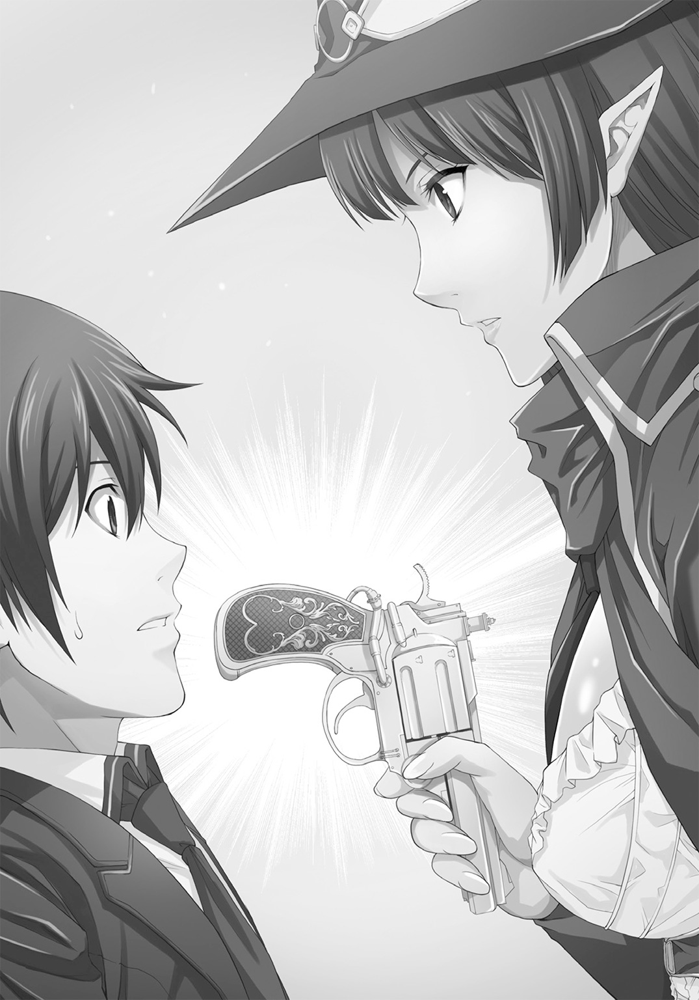
「とりあえず、奴らは私を殺してこの『蒸気精霊杖』、略称『ギズモ』を破壊しない限り、母船をこの時代に呼び込めない」
「でも僕たちの武器はこの銃と君の......」
「杖があるだけだが、大部分の機能を校舎を封印するのに使っているから、調べものや鍵をかけることには使えても、攻撃とかには使えない。その機能もないが」
「警察を呼ぶとか？」
「いや、奴らにとって今の時代の地球の警察や軍隊は気にかけるべき存在じゃないだろうし、彼らも中に入ってこれないから無駄だ......ああ、君が入ってきたような窓にも鍵をかけないとな」
そう呟くと、パスウィダーは杖の下にあるリング状のダイヤルをくるくると回し、杖を輝かせた。
「よし、これでもう完全封印だ。どこかの窓の鍵が開いていても外には出られない」
「でも、どうするの？」
「まあ見ていたまえ......私の記憶では......」
そう言って、パスウィダーは杖を光らせながら教室の床に向けた。
自分を中心に半円を描くようにすると、教室の片隅がぼうっと光った。
「よし、あった」
そう言うと彼女は足音を忍ばせ、光っている担任教師用の机の横にある床に杖で触れた。
フローリングの床が一メートル四方で区切られ、少し落ち込むと、横にスライドする。
そこに現れたのは鉄の梯子と、かなり大きな通路だ。
通っている学校の校舎のことだからよく分かるが、こんな巨大な通路が入るほど、校舎の床も天井も分厚くはない。
が、機関銃やロケットランチャーを撃ちまくるスクール水着少女の集団や、光る杖で学校を丸ごと封印する少女を目の当たりにすれば、何でもありだろうと思う。
「なんでこんな所にこんな通路が？」
「この学校が狙われるのは初めてじゃない」
にやりと笑ってパスウィダーが答えた。
「今から十五年前、この校舎を建てたのはブルドゥ寄生体に操られた連中でね、集まった生徒に仲間を寄生させて、脳内麻薬の精製工場を作ろうとしてた。寄生された生徒たちを時計塔に集めるための次元通路が、まだ残っていると思ってたんだが、ビンゴだな」
「何それ、知らない」
もうここまでくると彼女が口から出任せを喋っているのか、それとも知られざる真実を語っているのかが判らなくなってくる。
「当然だ。私とその銃の持ち主である相棒が阻止した。最後は自家用セスナの墜落事故に偽装したが」
「あ、時計塔が焼け落ちたっていう事件？ それは知ってる」
焼け残った時計の文字盤が、体育館の片隅にある記念碑の基礎に埋め込まれているから、タグルは覚えていた。
「行方不明が三人出た、って書かれてたけど......」
「ふたりは私と相棒、最後の一人は寄生体の作り上げたアンドロイドで教師になりすましてた............この国の特殊機関の連中と力を合わせて何とか倒したよ」
あっさりとパスウィダーは答える。
「そういうわけで今回は出遅れてしまったから、犠牲者がひとり出たが......君をふたり目にする気はない、来たまえ。この通路を通る限りは封印を解除しなくていい。安全なところまで来たら、彼らに最後の選択を与える......通信装置はあちらに残してきたからね」
そう言ってパスウィダーは帽子を押さえながらその中へ飛び込んだ。
真似をする気はなかったので、タグルは慎重に梯子を使う。
「最後の選択？」
中はずいぶん広いが、明かりは当然ない。
「ああ、ここごと吹き飛ぶか、それとも去るか」
「去るとはどうしても思えないけど？」
「やるだけはやってみる。最後まで交渉する......『ドクター・フー』のドクターと同じだ」
「さっきも言ってたよね、なにそれ？」
杖の先端を光らせて前を進むパスウィダーの足が止まった。
もの凄く信じられないものを見たような、怪訝そうな顔で振り返る。
「君、知らないのか？ 『ドクター・フー』だぞ？ イギリスで制作され世界各国で放送中の、半世紀以上続いたテレビシリーズだぞ？」
「......うん」
「信じられない......日本でも二〇〇五年に某公共放送局で新シリーズの第二シーズンまで放送したのに！ 確か数年前にＤＶＤのレンタルで第五シーズンからも......」
「驚くのはそこなの？」
「............いや、いい。そういえばこの時代、日本で人気なのはまだまだアメリカのテレビドラマだったことを忘れてた」
何となく肩を落として、パスウィダーは再び歩き始める。
（......わかんない子だなあ）
タグルも後に続いた。
どう見ても自分と同年齢か年上のはずのパスウィダーを、まるで年下のように考えている不思議さに、まだ少年は気づいていない。
数分ほど歩いて、扉が見えてきた。
「ここを開けると時計塔の記念碑の真裏だ」
そう言ってパスウィダーが取っ手を握り、開けると、炎と熱と光が周囲を取り囲んだ。
見覚えのある光景が、角度を変えて広がっているのが、その肩越しに見えた。
体育館だ。
「？」
首をひねった瞬間、タグルは身体全体を見えない力で前に押された。
「え？」
「しまった、罠だ！ 空間を歪めて出口を変えたな！」
引き返そうとしたパスウィダーの胸に、どすんと真っ向からタグルはぶつかる。
「わ！」
視界いっぱいにコルセットから絞り出されたような、柔らかい、大きな物体が広がり、次の瞬間、ロングコートの少女に抱きつく格好でタグルは体育館の中へと押し出された。
通路はパスウィダーの思惑とは異なり、体育館の壁に通じていたらしい。
その通路も内側から、コンクリートの壁がせり出してきて塞ぐ。
「ととととっと！」
辛うじてパスウィダーは後ろ向きに倒れるのを踏みとどまり、タグルを抱き寄せながら身を反転させ、熱気が吹きつけてきたが、杖が光るとそれも途絶えた。
「熱は遮断した、だが体育館はあと十分持たない、隙が出来たら私に構わず脱出しろ」
小声でパスウィダーが囁く。
「そんな......」
タグルの抗議を無視して、
「完全にお前たちの掌の上で踊らされたか」
タグルを抱きしめたまま、ロングコートの少女は自分たちの周りを囲む、フル武装したスクール水着少女たちを睨んだ。
「肯定する、パスウィダー」
燃える炎を背に、無言で立ち尽くすスウィムウェンたちの中から、金属音を思わせる少女の声が響いた。
スウィムウェンたちが左右に分かれる。
「存在確認・名を失ったロスティニアの女王、アークエルフの女。鋼鉄種族バオクーと銀種族ガルオフを滅ぼした怒れる騎士にして、炎の魔女」
ひとりだけ前髪に深紅のメッシュの入ったスウィムウェンが無表情に告げる。
「宣告する。我らの計画を邪魔する存在。最優先殲滅対象者。お前の戦いの旅はここで終わりだ」
恐らくリーダーらしいそのスウィムウェンが告げる。
「勧告する。降伏すれば、苦痛なくその肉体を滅ぼし、貴様の脳内データを偉大なる我らの共同体情報網に移植する。降伏せねば、神経細胞全てに数百時間の苦痛を与え、精神構造を余すところなく破壊するのだ......その場合、対象者は彼である」
とスウィムウェンのリーダーはタグルを指さした。
「え？」
思わず自分自身を指さすタグルに、ゆっくりとスウィムウェンは頷いた。
「勧告する、パスウィダー、貴様は自分の苦痛よりも他人の苦痛にダメージを受ける性質を持っている。故に、貴様は最後に殲滅する――――選択せよ」
「死 or Die なんて、そんな無茶な話があるか！」
勝手に「拷問して殺す」と指さされたタグルが思わず大声を上げる。
「否定する。パスウィダーに話をしている、現地人、お前にではない」
スウィムウェンのリーダーはにべもない。
話し合いも通じず、逃げることもかなわない相手。
「敵」としか言えない相手。
タグルは黙って腰の後ろに手を回して銃を握りしめた。
パスウィダーは杖を手に腕組みしつつ、スウィムウェンのリーダーを睨み付けていたが、
「私の答えは知っているだろう？」
と低い声で答えた。
大きく両手を広げ、杖を掲げてパスウィダーは続ける。
「警告する、今すぐこの時代を立ち去れ。過去は君たちのものじゃない。君らは一五八〇世紀で地球人類に敗北したんだ、受け入れろ」
「否定する。この時代であれば未来の書き換えは可能だ」
「生み出されるのはパラレルの未来だ、君らの敗北は決定している............どうしても聞き入れなければ、君たちごとこの校舎を爆破する」
「肯定する。問題ない。お前が昨日、この学校に仕掛けた磁力爆弾なら全て取り外した」
その言葉を証明するように、スウィムウェンの一列が割れ、そこに数十個の、分厚い円盤状の金属が山と積まれているのが見えた。
おそらくそれがパスウィダーが仕掛けた「磁力爆弾」なのだろう。
「我々も学習する。貴様のやり口はお見通しだ」
無表情のはずのスウィムウェンリーダーの顔に、燃えさかる炎の揺らぎが笑っているような陰影を付けたのは、タグルの気のせいだっただろうか。
「宣告する、あと十五分で母船が、我々を誘導装置としてこの時代にやってくる。そして我らを滅ぼした地球のあの男たちと、あの女たちの先祖を殲滅するのだ！」
スウィムウェンリーダーは右手を高々と掲げた。
「殲滅せよ！」
リーダーの声に、野太い他のスウィムウェンの声が唱和する。
「殲滅せよ！」「殲滅せよ！」「殲滅せよ！」
声は燃え落ちそうになっている体育館に響く。
タグルは銃のグリップをますます強く握った。
恐らく、このままだと死ぬ、という理解が頭の中にある。
成り行きで命を落とすことになるとは思わなかったが、今となっては仕方がない、と考えている。
パスウィダーは杖を両手で床に突き、やや顎を引いて、微動だにせず立っている。
タグルの側からはその背中と、床に落ちる影しか見えない。
それが数十秒続き、やっとパスウィダーは顔をあげた。
「判ってる。二四時間前に私が仕掛けたものは、だろう？」
後ろ姿しか見えないタグルにも、パスウィダーが不敵な笑みを浮かべているのが判る声で、彼女は続けた。
「半年前に仕掛けた爆弾は、今も君たちの足下にある......多分」
「多分？」
思わずタグルが聞き返すが、それはスウィムウェンリーダーも同じだったらしい。
「否定する。爆弾はおろか、時限装置や遠隔起動装置などの痕跡はない」
パスウィダーはゆっくりと後ろに下がり、タグルの横に立った。
やはり少女の顔には不敵な笑みが浮かんでいる。
「当たり前だ、こういう状況になった君たちに簡単に探知されるようなものを仕掛けておくものか」
そう言って炎の中、ロングコートの少女は高々と「杖」を掲げた。
「『この状況から脱出した未来の私』が仕掛けるのだ、見つからないように巧妙に仕掛けたに決まっているだろう！ 君たちがこの時代にやってきたという痕跡そのものを時間の流れから消し去るように、『アトスの炎』を！」
「まって、それじゃあ僕らも......」
タグルの腕に、パスウィダーは自分のそれを絡めて抱き寄せた。
チョコのような甘く柔らかい髪の匂いと体温に一瞬、少年が息を吞むのに合わせ、
「さらばだスウィムウェン！」
「杖」の先端が、今度は金色に輝いた。
タグルは目の前の体育館全ての床が地面の下から押されたように膨れあがり、無数に走った亀裂から赤い閃光と高熱が溢れる予感を靴底と頰に感じる。
視界の隅を、見覚えのある形だが、大きさはその五倍ほどもある機械が飛びあがった。
爆発の轟音も高熱も、衝撃波もその瞬間からすべてカットされ、パスウィダーとタグルは空中で固定されていた。
紅蓮の炎は体育館の屋根を突き破り壁を突き崩し、やがて青白い稲妻を伴ったものに変化する。
スウィムウェンたちの姿はすでに炎の中に見えない。
「さすが『ここから脱出した未来の私』、ちゃんと『アトスの炎』と待避用の大型エネルギーフィールド発生装置を設置していたか。それもこの前買ったばかりの新品だ♪」
ふふん♪ と鼻歌を歌うような笑いを浮かべてパスウィダー。
「なんだよ、そのご都合主義！」
タグルは思わず突っ込んだが、
「タイムパラドクスは起こらないからいいんだ」
とロングコートの少女は鼻掛け眼鏡の位置を指先で少し直すと、
「――――さ、急ごう。炎はちゃんと校舎も焼き払ってる。封印を解除して、一刻も早く半年前に戻って爆薬と待避用エネルギーフィールドを仕掛けにいかないと」
そう言って「杖」を振った。
ふたりを保護したまま、フィールド発生装置はゆっくりと崩壊する体育館を抜け、さらに炎が伸びて炎上する校舎を睥睨するようにしながら校庭に降りた。
思わずタグルは背後を振り返って、炎に包まれた校舎と体育館を眺めた。
あんまりいい思い出のない学校ではあるが、燃えさかる姿には何とも言えない哀しみがあった。
これからあの学校であるはずだった日々も、あった日々も全てあの紅蓮の炎のなかに消えていく。
「警備室以外は、これで全部燃える......校舎に隠れているスウィムウェンも、一掃だ」
パスウィダーが同じ光景を眺めながら言った。
「なんで警備室以外？」
「この炎は特別だ。有機物無機物問わず、全て焼き尽くす。時間の流れの中でここにスウィムウェンが来た、という痕跡自体を消し去るんだ......でも、警備員の遺体が見つからないと、家族の人は悲しむだろう？」
パスウィダーの横顔に、やるせない悲しみとも疲れともとれる表情が浮かぶのを、タグルは不思議な気分で眺めた。
「もう少し、早く来ればよかったが......」
「あの、タイムマシンがあるんだから、もう一度、今度は二時間早くついておけば......」
「それは無理だ。一つの事件の修正は一回だけ。何度も繰り返しては出来ない」
パスウィダーは溜息をついた。
タグルがＳＦドラマを知らないと言って嘆いたり、学校そのものを吹き飛ばしてもけろりとしているかと思えば、見ず知らずの他人の遺体を、遺族に届けるようにする心もある。
そして、彼女にそっくりな、妹のような別の少女。
色々なことが頭にわっと戻ってきて、どうやってパスウィダーに問いただし、あるいは話しかけるべきなのかを躊躇しているうちに、
「さて、『乗りかかった軍艦』という言葉もある、すまないがタグル、私を手伝ってもらうぞ」
燃えさかる校舎を背に、パスウィダーは歩き始めた。
「あ、う、うん」
そうだ、まだ事件は終わっていない。
「ひと息つく間もなしに仕掛けの準備か......っていうか、待ってよ？ これで僕も学校爆破犯？」
「安心したまえ、私がこの学校に来る前から半径五キロ圏内の監視カメラやシステムは一切停止している」
やがて、夜闇の彼方にヘリコプターの音やサイレン音が聞こえ始めた。
「でももう消防車とか来るよ！」
「大丈夫、私の船の『入り口』をこっちに引き寄せる」
パスウィダーは「杖」を翳した。
杖の輝きと共に、ふたりの目の前にふたつの光のリングが現れた。
それは互いにすれ違いながら上下に繰り返し移動をはじめ、低いうなり声のような音と共にうっすらと「入り口」が現れた。
「あ......」
思わずタグルはそれを指さした。
「あれ、学校の側の街灯の下にあったよね？」
それは、街灯の下に直立していた謎の西洋風棺桶だった。
「独創的だろう？」
にっこりとパスウィダーは微笑んだ。
「社会で唯一、中身が空でもドアを開けたがる人間がいない物......本当は昔のイギリスにあった青いポリスボックスにしたかったが、そんなことをしたらＢＢＣが怒鳴り込んできそうでな」
「交番のこと？」
「いや、交番制度は日本特有のものだ。一九六〇年代まで、イギリスには犯罪を通報するための専用の電話ボックスがあってな。場合によっては捕まえた犯罪者をその中に閉じ込めて......いや、そんなことはどうでもいい。それに棺桶は私の背負ったものには相応しい、それだけのことだ」
そう言いながらパスウィダーは棺桶の取っ手を摑んで引っ張った。
「来たまえ」
「いや、狭そうだし......」
「『入り口』だと言っただろう？」
そう言ってパスウィダーはタグルの手を取って棺桶の中に入った。
棺桶の中に入ると、中は広大な空間だった。
全体のイメージは純白。
広々としたドーム状の内側を巨大な樹木とも、金属の構造材とも見える質感のものが網の目状に覆い、さらにあちこちに人工の明かりがある。
足下は平らな鋼板のような床で、まっすぐ奥へ続いていて、全体の大きさがさっぱり判らなかった。
「これは......」
ぽかんとタグルが周囲を見渡しながら言うと、
「だから『入り口』だと言っただろう？ 早く来たまえ」
足を止めて振り向き、パスウィダーは笑う。
「......これがタイムマシン？」
慌ててパスウィダーに追いつき、歩きながら尋ねる。
「万能の船だ。宇宙にも行けるし次元跳躍も出来る」
「名前は？」
「『ロスティニア』......だ」
螺旋階段を上り、シートベルトのある、いかにもな座席と彫刻が施された、古めかしい針を使ったメーターなどの計器類が同じ向きに並ぶ、操縦席らしい場所にたどり着くと、パスウィダーは呟くように言った。
〈名を失ったロスティニアの女王、アークエルフの女。鋼鉄種族バオクーと銀種族ガルオフを滅ぼした怒れる騎士にして、炎の魔女〉
スウィムウェンのリーダーの言葉が脳裏に蘇る。
「あのさ、パスウィダー。僕の聞き間違いでなければ、その名前、さっきあのスウィムウェンとかいう連中が言ってた......」
「昔の話だ、さっさと行くぞ......時間も足りないし、人手不足なのでな！」
パスウィダーはそれ以上のタグルの言葉をはねつけるように鋭い声で言い、広い操縦席の中、スイッチを入れ、レバーを引き、ボタンを叩いて回る。
「......それと、私のことはパーシィでいい。親しいものは皆そう呼ぶ」
付け加えた時にちら、とタグルを見た時の目は先ほどの吐き捨てるような言葉を恥じているように見えた。
「あ、う、うん......でも時間は十分にあるんじゃ？」
「床を見ろ」
言われると、白い大理石で出来たように見えるそこには、大きなアナログ時計が映し出されている。
時計の示す時間は十一時十五分。
十二時の文字まで、長針から青い光が伸びている。
「それが絶対時間計だ」
なおも歩き回りながら計器類をチェックし、つまみを回しながらパーシィが説明する。
「十二時がリミット。変更した歴史が固定化されるまでの残り時間を示している――――今は十二時までの範囲が青だから正味四十五分以下ということだな」
パーシイが一番前にある席の肘掛けにある赤いボタンを拳で叩くと腹の底に響く大きな震動と共に、操縦席の照明がいっそう明るくなった。
「今回はその時間内に過去に戻り、準備を終わらせなければ、さっき私たちが助かった過去の変更はなし」
「つまり？」
「私は杖を掲げたまま何も起こらず、ふたりとも生きたままスウィムウェンに撲殺、ないし両手両足を千切られて彼女たちと同化させられるということだ」
「いまこうしてる僕たちのことは？」
「我々の記憶からも消去され、なかったことになる。つじつまを合わせる時間の修正力というのはそういうものだ」
「............」
思わずタグルは黙り込んだ。
「さ、出発準備は出来た。適当な席に座りたまえ」
すまし顔でそう言い、パスウィダーは手袋を脱ぎ、一番前にある座席に腰を下ろすと、壁から突き出た複雑な彫刻の施されている「台」に支えられた大きな水晶玉に両手を重ねた。
「わかったよ、パーシィ」
そしてタグルは手近な席に座った。
「シートベルトは締めたな？ ............では出発だ！」
パーシィが水晶を前に押し込むと、大きく世界が上下左右に揺れた。
「わわ！」
シートベルトをしてなければ床に放り出されて転がるぐらいの激しい揺れに思わずタグルが声を上げる。
「大丈夫、いつものことだ！ じきに収まる！」
「ほ、本当？」
そんな会話をしているうちに、震動も揺れも収まった。
「で、目的の半年前に到着するのにどれくらいかかるの？」
「ほんの二、三分、ってところかな」
「タイムマシンに乗っていても時間は流れるんだね......変なの」
「時間と歴史は違うんだ。歴史は人の認識でいくらでも変わるし跳躍も起こる。でも時間は流れていく。誰にも止められないし、ゆがめることも出来ない......ただ、人の歴史という概念が時間を超越する時はある......数カ月前の君のように」
「......？」
「あの時君が見たのは『あり得る未来』の選択肢のひとつだ。あの学校で起きる事件は時間の特異点が起こす現象で、そこならば未来が過去に影響を及ぼすような逆転現象もありうるんだよ。ただとても強い、他人を思いやる心が必要だ......君は凄い。それだけでもヒーローだ。今回私がこの事件を察知できたのも君の『叫び』のおかげだからね。」
「でも、パーシィは歴史を守っているんでしょう？ そっちの方が凄いよ」
「私はその中を多少自由に歩き回れるだけの風来坊だ。それに、全てを守りきれるわけじゃない......そうありたいと願って行動しているつもりではいるけれどもね」
「どうしてこの船を手に入れたの？」
「私の船として最初から作られて、与えられた――――ずいぶん昔の話だよ、いや君からすれば未来になるのかな。時間旅行をしていると色々感覚が分からなくなる」
「考えてみれば、たった三分で半年さかのぼれる、ってのも凄い話だなあ」
「毎日だと当たり前になるがね......さあ、そろそろ到着だ。二〇一七年十二月二十五日、午後十一時三十分！」
そう言って、パーシィは左手のレバーを引いた。
出発の時よりもっと酷い震動がタグルをゆさぶった。
☆
西暦二〇一七年。埼玉県朝ヶ市。
「............」
奇妙な感慨を覚えながら、タグルは体育館に設置するための「待避用エネルギーフィールド発生装置」とそれをスウィムウェンから見つからないようにするための機械をデイパックに入れて背負い、校舎の上に降り立った。
「ロスティニア」の入り口である「棺桶」は今回、校舎の屋上に固定されている。
つい数分前、燃えさかるこの校舎の上を横切ったのだ。
それが今は、かつてと同じようにそびえ立っている。
体育館も燃えていない。
本当に半年前に来ているのだ。
何よりも寒い............そういえば去年の冬は記録的寒さだった。
「噓じゃなかったんだ......」
「まだ疑ってたのか？」
「聞いてはいたけど実感はしてなかったもの............」
と言い終わる前にくしゃみが出た。息が白い。
「そういえばここは冬か」
パーシィは元からロングコートなので準備は万端というところなのだろう。
タグルの肩に「杖」を翳して光らせると、それだけで首から下は大分暖かくなった。
「なにしたの？」
「君の首から下の空気をちょっと圧縮した。これなら体温が逃げずにとどまるからな......で、首から上はこれを」
そう言って、パーシィはタグルの首に、自分が巻いていたシルクの手触りのする赤いマフラーを巻いてくれた。
「ありがとう......それにしても学校の屋上に棺桶が立ってるって、シュールすぎる風景だね」
女の子に自分のマフラーを巻いてもらうという行為に少しどぎまぎしながらタグルが言うと、
「本来は屋上の一部に偽装させるところだが、変形には手間が掛かる。設置作業自体には一時間もかからないだろうから、このままでいいだろう。さ、中に入ろう」
「警備員の人はどうするの？」
「まあ、これで姿を消してやり過ごすか、『見えない何かが作業してるという軽い恐怖体験』を後で語ってもらうことにしてもらうさ」
そう言ってパーシィは「杖」を光らせた。
「なるほど............ねえ、それ魔法なの？ それとも超科学？」
「この『蒸気精霊杖』に関して言えばいいとこ取りかな。『魔法』と呼ばれる行為を数学的に再現して、妖精蒸気を媒体として私の意志とリンクさせてコントロールしてる」
そう言って、パーシィは「杖」をドアに近づけた。杖が光ると同時に、がちゃりと鍵が開く音がする。
「まあ、とりあえずは便利だ。大抵のことには使えるしね。こんな感じで」
パーシィがノブに手をかけ、開こうとする。
タグルの脳裏に何かが明滅した。
中に入ろうとしたパーシィの背中から、何かが勢いよく吹き出す。
それは飛び散った彼女の血肉。
ゆっくりと膝をつく彼女の後頭部から赤黒いものが貫くように飛び散る。
その向こうに見えるのは......。
「パーシィ！」
身体が動いた。
彼女を押しのけ、腰の後ろに差しっぱなしにしてあったリボルバーを引き抜く。
最初に手渡されたときとは違い、その瞬間、銃はまるでタグルの一部だった。
片手で数発の銃弾をドアの彼方、階段の下に向けて叩き込む。
銃火の中、頭を吹き飛ばされるスクール水着の姿が見えた。
血ではなく、電子装置の破片が散らばる中、タグルは自分でも信じられない素早さで後ろに下がってドアを閉め、背後のパーシィに声をあげる。
「スウィムウェンだ！」
「なに？」
「鍵しめて！」
「わ、判った！」
杖が光るのと、金属の扉に少女の拳が内側から打刻されたのはほぼ同時。
「これはまずい」
「どうする？」
「あと二〇分、船は動かせないし、冷却のためロックされているから中に逃げ込むわけにもいかない............でもなんで奴ら、こんな所にいるんだ？」
「とにかく、急がないと」
「タグル、こっちだ！」
そう言って、パーシィは屋上の周囲に巡らされた金網を乗り越えた。
「ど、どうするの？」
おっかなびっくり、なんとかタグルも同じようにする。
真夜中の屋上の縁には風が下から吹きつけてくる。
うっかり見るとそのまま足を滑らせて落っこちそうだ。
と、パーシィは「アレスの炎」の詰まった古めかしい革の袋を背負い直しながら、
「飛び降りよう。さっきの要領で着地直前に足下の空気を凝縮すれば文字通りのエアクッションになる」
「だ、大丈夫なの？」
「これまで一〇〇回やって八〇回は成功してる」
「あとの二〇回は？」
「人間、考えたら負けだ！」
タグルの問いかけにそれ以上答えず、その肩をしっかりと抱き寄せて飛び降りた。
「わー！」
思いっきり叫んだおかげか、失禁だけはしないですんだ。
落下の直前「杖」がひときわ強く輝き、ゴムまりの上に座ったような感触がして、タグルは地面すれすれから数メートルの高さまで跳ねた。
もう一回、今度はそれよりは小さく。そしてさらに一回。
足から着地できた。
「――――！」
へなへな、とタグルはその場に膝をついて座り込んだ。
「し......死ぬかと思った......」
「急げ、奴らは落下しても死なない」
非情にもパーシィはタグルの腕を摑んで、引きずるように体育館へ走りだす。
「？」
「つまり、我々の後を追って飛び降りてくる、ということだ！」
言った背後でどすん、という音がして、振り向くタグルの目に、次々と屋上から飛び降りてくるスウィムウェンたちの姿が映った。
「そうか、ロボットだもんなあ」
「機会生命体だ、いいから急げ！」
次々あがる土煙の中、タグルとパーシィは体育館に向けて走る。
校庭に続く体育館の入り口を「杖」で開き、タグルたちは中に飛び込む。
が、そこが最後のゴールだった。
体育館の中には二〇体ほどのスウィムウェンたちがいたのである。
「どういうことだ？」
「解答する、お前がやったのと同じことだ」
一体だけ前髪の赤い、スウィムウェンリーダーが告げた。
「ここは時間の特異点である。貴様たちに『アトスの炎』によって消される寸前のスウィムウェンリーダー・２１８６デルタ５万飛んで23の放った最後の非常通信が、近くの時空を移動中であった我々のもとに届いたのだ」
「......やれやれ、『アトスの炎』で燃えつきるまでの時間なんて、数万分の一秒もないから、他のスウィムウェンには傍受されないと思ってたんだが」
「......ああ」
未来が過去に影響を与える。
時間軸が変更される前のタグルが、以前（？）やったのと同じことが起こったのだ。
「否定する、すぐに信号は消失したが、我々は次元時空の狭間にいたので時間の長い短いは影響なかった。故にここでお前たちを妨害し、未来を変更する」
全員が手に手に持った未来風のライフルを構えた......どれも銃口の奥にほのかに内側から輝くレンズが見える。
「パーシィ、あれってひょっとして......」
「どうやら、レーザーガンの類だ......こいつらは未来で武器を調達したらしい」
「肯定する。二名とも殲滅する......我々の未来のために！ 殲滅せよ！」
「殲滅せよ！」「殲滅せよ！」「殲滅せよ！」
銃を構えたままスウィムウェンたちは叫ぶ。
やがて、校舎から飛び降りてきたスウィムウェンたちもまた、タグルたちの背後で同じ武器を構えて唱和する。
「ひょっとして、この人たち、一斉に何か言わないと行動できない、とか？」
「......よく気づいた。あの唱和はただのかけ声じゃない、ドップラーレーダーだ。音波を放つことで周囲の状況をさらに細かく把握し、完全に我々を『殲滅』するための不確定要素がないことを確認しているんだよ。あと対象の恐怖心を煽るという効果もある」
「............最後に知る豆知識がこれかぁ」
手にしたリボルバーにはあと弾丸が三発あるが、さて、これでどうやって逆転するかと問われると「無理」以外の単語が思いつかない。
「――――いや、まだ大丈夫かな」
「？」
怪訝そうにこちらを見るパーシィに、
「パーシィ、『エアバッグ』を下じゃなく横にして、それから盾にしたら？」
とタグルは言った。
「――――なるほど」
「殲滅せよ！」
先ほどの校舎からの着地と同様に、タグルたち周辺の空気が圧縮され、風が吹く。
「宣告する、パスウィダー、汝の行為は無駄である。我々の武器は高出力光学兵器であり、その『杖』の出力程度では、空気レンズは作れず、密度を上げても光は直進する。空中への飛翔はさらに時間を必要とし、空中に移動しても我々の照準を安易とするだけ。殲滅は不可避である」
「でもないさ......飛びたいわけでも、レーザーの光を曲げたいわけでもない」
パーシィは小さく笑いながら言った。
「君らが嫌いなだけだ」
パーシィの杖の輝きが消えた。
周囲で圧縮された空気が一気に解放される。
タグルたちを空に飛ばすためではなく、スウィムウェンたちの身体を吹き飛ばすために。
「今だ、走れ！」
そう言ってパーシィは正門に向けて走り始めた。
タグルも大急ぎで後を追う。
走りながら、パーシィは杖をマイクのように口元にあてた。
「『ロスティニア』、次元砲起動！ 自動照準。体育館付近の時空粒子保持者に照準。彼らを別の次元に吹き飛ばせ！」
「なんだよそれ！」
「私の船が持っている数少ない武装のひとつで特定の相手だけを次元の彼方に放逐できる。ただし、条件が大雑把にしか設定できない上に、今回は警備員を巻き込まないように私たちも条件に含まれる！ だから急げ！」
「！」
訳が分からないが、とにかく急いだ方がいいのは間違いない。
なおも走るタグルの頭上から重々しい巨大な装置が動くような音が響いた。
校舎の屋上あたり............思わず振り向く。
真冬の夜の校舎の上に、初めてタグルは「ロスティニア」の外観を一部だけ見た。
そのパーツは高さ数十メートルにもなる、巨大な人の姿をしていた。
甲冑に覆われた、優雅な女騎士の姿をしている。
銀でメッキしたような輝きで、顔は兜の面頰を跳ね上げているので、誰かに似た、端整な顔立ちが見て取れた。
それは昔の船の先端にあった船首像らしく、そこから遙か後方まで巨大な船体がうっすらと見えたが、それ以上は夜の闇で判らない。
豊かな胸の前で交差していた腕がゆっくりと伸びる。
その目が輝き、サーチライトのように体育館を照らし、こちらを追いかけようとするスウィムウェンたちを包み込む。
「な......」
「いい船だろう？ だが見とれてないで急げ！ 中心はやつらだが、効果範囲はかなり広い、私も君も時間を旅してきているから、このままだと一緒くたにされて因果地平の彼方へ飛ばされるぞ！」
言われるままに走るタグル。
「どれくらい走ればいい？」
「あの校門を越えるぐらいまでだ！ あと三〇秒もない、急げ！......のわっ！」
言った途端、パーシィが転んだ。
そのまま前に転がり、立ち上がろうとして顔をしかめる............足首を押さえていた。
「くそ、こんな時に！ いけ、タグル、私は何とかなる！」
「うるさい！」
叫んでタグルは引き返し、かがんでパーシィの身体を背負った。
アドレナリンが出っぱなしになっているせいか、意外と軽いのがありがたい。
このままでは危険だとかなんだとかという恐怖心も理性も、先ほどの校舎からの飛び降りで麻痺している......そう自分に言い聞かせた。
「火事場の馬鹿力、なめるなああああ！」
叫んで走り出す。
「ばか、止めろ、君も......」
「うるさい、馬鹿！」
会話をするのももどかしかった。
あと一〇秒、校門まで七〇メートル、肩には自分より頭一つ高い少女。
それでもタグルは走る。
走って、走って、走って、走った。
「このおおおおおお！」
最後の一歩を思いっきり地面を蹴って飛ぶ。
校門を過ぎてアスファルトの地面に転がった。
転がりながら反射的にパーシィの頭を抱きかかえ、保護する。
やがて、眩い輝きが体育館を覆い、そして、消えた。
☆
「......起きたまえ、タグル」
優しい声で言われ、タグルは目を醒ました。
「すまないが、私の頭を解放してくれ」
「え......？」
気がつくと、タグルはパーシィの頭を抱きかかえて仰向けに倒れていた。
彼女の顔を解放すると、パーシィは落ちた単眼鏡をかけなおし、立ち上がる。
「どうやらお互い、因果地平の彼方へは行かずにすんだようだ」
「......どうなったの？」
後ろを振り返るが、体育館も校舎もしんとした冬の空気の中、たたずんでいる。
「奴らは消えたよ」
ぽつりとパーシィは言った。
「あんまりいい方法じゃないが、それ以外、選択肢はなかった......飛ばされた連中はどこかで生きているだろう」
「稼働中、の間違いじゃないの？」
「銀河知的生命体ガイド第四万三千五版に則ると、彼らは立派に生命体の概念に入るからね......さあ、急ごう。とりあえずまだ私たちの作業は終わってない」
「――――そうだね」
立ち上がったタグルはそういえば、と気がついて、
「警備員の人は？」
「無事だ、どうやら仮眠中らしい」
「............良かった」
歩き出そうとして、自分の靴がないことに気づく。
「あれ？」
「最後に校門から飛び出すとき、靴だけが効果範囲の中に残ったんだ。だから......すまない、あとで弁償する」
「わかったよ」
溜息をついた途端、アドレナリンの効果が切れたらしく、身体がどっと重くなってきたが、疲れを癒やしているヒマはなかった。
「とりあえず、設置作業を始めようか」
ぽんと肩に手を置くパスウィダーの声は優しかった。
☆
警備室の壁にタグルはメモをピンで留めた。
「２０１６年６月○日、必ず７時から８時15分まで校舎を巡回警備してください、あなたの命に関わります」と走り書きしたものだ。
さらにパーシィは例の「杖」を警備室のパソコンにかざして光らせた。
半年後の当日三時間前、同じメッセージが画面に表示されるはずだ。
「しかし、これで彼が助かるとは限らないぞ」
「わかってるけど、やれるだけのことは、やっておきたいんだよ.........ごめん」
「いいさ。可能性に賭けるのは嫌いじゃないし。それにスウィムウェンは阿呆だから。人がいなければそのまま強行突破するだろうからな」
「ありがとう」
「だが、上手くいくとは限らない............それだけは覚悟しておけ」
パーシィが溜息混じりに釘を刺した。
「判ってる............じゃ、未来の僕たちのために頑張ろっか」
そう言って何とかタグルは笑うことが出来た。
☆
西暦二〇一八年五月某日。埼玉県朝ヶ市。
「ロスティニア」の入り口である棺桶が現れたのは、タグルのマンションのすぐそばにある路地の奥だった。
外に出ると、初夏の暑さがアスファルトからむっと立ち上る。
つい数分前まで、あと一時間で雪が降る、という場所にいたのだというのが信じられない。
パーシィはタグルのアリバイのために、事件の起こる十分前に時間を合わせてくれた。
「......さて、ちょうど絶対時間計も......五、四、三、二、一......確定」
手首に巻いた時計を見ながら、パーシィが微笑んだ。
「おめでとう、とりあえず我々は生き延びた」
「良かったよ、本当」
そう言ってタグルも笑った。
「ところで、君は何を学校に忘れてたんだ」
「......ああ」
言って、タグルは制服のポケットから、これまでの大騒ぎの割には皺のない封筒を取り出した。
「手紙？」
事務用封筒ではなく、表面には「沙汰内君へ」と書かれ裏にシールで封がされている。
体裁だけは、どう見てもラブレターだ。
「うん......ま、中身は罰ゲームかもしれないけど」
苦笑とも、嬉しさとも、どちらとも取れる複雑な笑みをタグルは浮かべていた。
「罰ゲーム？」
パーシィが首を傾げるので説明する。
「これまでも、何度かあったんだよ。立場の弱い女生徒に、僕みたいな電波君に告白することが何かの罰ゲーム、ってやつ。ウチの学校の女子ってそういう奇妙な階級構造になってるみたいで」
「......ずいぶん陰険なことを考えつくもんだな」
「しょうがないさ」
「封、切らないのか？」
「切らない限りは失望もしなくて済む」
「中に幸運が入ってる可能性だってあるぞ？」
「『シュレディンガーの猫』は箱を開けない限り死なないよ」
「開けない限り、それ以上生きられもしないぞ？ ......というか、何故わざわざ持って帰ろうとした？」
「だって翌朝、誰かにロッカーの中に手紙が残ってたのを知られたら、出した人が困るかもしれないじゃないか............本当にラブレターなら酷くからかわれるだろうし、罰ゲームなら、しくじったかと責められる」
しばらく、パーシィは無表情に少年の顔を見つめた。
「............君はやはり、その手紙を開けるべきだ。中に何が詰まっていようとも」
「でもさ」
「君はいい奴だ。だから、きっと......その......イイコトがある、と思うんだ、私は」
「............」
しばらく考え、封を切るタグル。中の手紙を広げ、苦笑する。
中はひと言「なに期待してんの、ばーか！」と書かれていた。
罰ゲームを通り越して、単なるいじめだったらしい。
胸が痛んだが、不思議にそれはこれまでと違って軽いものだった――――自分の見た「幻」の正体を知ったからか、それともまだ、アドレナリンの効果が残っているからなのかは判らない。
学校が燃えてしまったからかもしれないが。
「やっぱ............ダメだった」
手紙を丸めて、タグルは肩をすくめた。
「そうか......すまない」
辛そうに眉をしかめ、パーシィは横を向いた。
「すまない......その、私はどうしても楽天主義で、いい人間にはいいことが必ずある、と信じてしまうんだ。君は......いい奴だし......その......」
「すまなくはないよ。君のおかげで単に僕の頭がおかしくなったんじゃなくて、ちゃんと意味があってあの幻を見た、ってのが判ったし。君のことを手伝えたし......あ、そうだ、これ、返すね」
ようやく思い出して、タグルはベルトに差していたリボルバーをパーシィに手渡した。
「持っていてもいいんだぞ？」
「冗談言わないでよ。日本は民間人が拳銃持ってちゃいけないんだ。それにうち、父さんが自衛官だから、そういうことを見逃してもくれないし」
「そうか......でも、その、本当に、すまない」
「いいんだ。一生分の運を使い果たす勢いの大冒険だったけど、終わってしまえば楽しかったし」
「いや、とはいえ......その、君の命を危険にさらしたり、私の命を救ってもらったりもしたし......なにか、お礼がしたいんだが」
「じゃあ、いつか、また会いに来てよ」
「それは......確約出来ない。私は旅人だし、『イコライザー』としての役割はいつ暇になるかも判らないんだ」
「じゃあ、僕のことを思い出したら、でいいよ。何十年先になっても、僕は覚えてるから......そうだ、船の中で写メ撮っていい？」
「あ......うん」
ふたりは一度「ロスティニア」の中に戻ると、タグルは入り口の取っ手部分に器用にタイマーセットしたスマートフォンを置いた。
そして、ふたりは並んで自画撮りモードの枠の中に入る。
「じゃ、あと十秒......九、八......」
シャッターが切られて、写真が残る。
「これでいいよ」
ピンぼけしてないことを確認して、タグルは満足した。
少なくともこの写真があれば、今夜のことが夢や幻だったと疑わないですむ。
「......やっぱり、私の気がすまない」
パーシィの呟きに「いいから、気にしないでよ」と言いながら振り返る。
その唇を、パーシィは少し身をかがめて奪った。
唇が合わさっていたのが、どれくらいの時間なのか、タグルには判らない。
もの凄く長かったような気もするし、僅かな一瞬だった気もする。
とにかく、パーシィと自分がキスをしたのは間違いなかった。
「な............」
「私にも開けろと言った責任がある......それに、今夜は助けてもらった。最後は特にな。その礼だ。ありがとう」
「いや......あの」
「私は、君が幻を見て叫んだ理由を知ってる。君がどれだけ凄いことをしたかも知ってる。明日もこの町の人たちが生きているのは君のおかげだ。誰にも言えないが、それが事実だ」
「ありがとう、パーシィ」
「それでは、これで私は去る――――また、会うときもあるだろう、そのときはまた手伝ってくれ」
「うん......判った」
「では、さらばだ！」
パーシィは片手をあげた。
タグルも手をあげ、軽く振って船から降りようとする。
が、
『何ご冗談を仰っているんですか、姫』
上から落ち着いた女性の声が降ってきた。
『この時代までスウィムウェンを追うためにほぼ連続の時間転移と次元転移を三〇回も冷却なしで繰り返し、次元砲を出力を絞った緊急可動させて、さらにまた時間転移、しかも微妙に時間をずらしてやらかしたんです、エネルギーがすっからかんな上に、メインエンジンが焼け付きました。当面動けやしません』
「な、なんだと？」
キスをした余韻で顔を赤らめたまま、パスウィダーが思わず天を仰いで叫んだ。
『申し訳ございませんが、現地時間で向こう二カ月以上は、ここにいて、エンジンの冷却と各部の損傷チェック、および私の療養が必要です』
「『ロスティニア』！ 君は私の船だろう、主の都合に合わせろ！」
パーシィは拳を握りしめてぶんぶん振りながら天井に向けて怒鳴る。
「私がせっかく爽やかかつスマートに去ろうとしたんだぞ、せめてこの町を出るぐらいのところまでは演出するべきだろうが！」
『無理です、姫様。もう私はこの位置から動けません』
その言葉が正しいと証明するように、船内の明かりが一気に暗くなった。
「パ、パーシィ、この声、何？」
「この船の人工知能だ、普段は黙っているがトラブルが発生すると出てくる......おい、お前、もう少し考えて......」
だが「ロスティニア」の人工知能は非情にも、主の言葉を無視した。
『これより自己診断モードに入ります、最低限姫様が生活するだけのシステムは機能しますので、骨休めをどうぞ』
「あ、こら、勝手に進めるなー！」
慌てるパーシィをよそに、船は沈黙してしまう。
「............」
薄闇の中、パーシィとタグルは顔を見合わせた。
「............あー、パーシィ、とりあえず今のお別れまでの流れはナシってことで、いいよ？」
「何故そこで私を哀れむような目かつ半疑問系なんだ！」
「まあ、ほら、人生思うように行かない、ってのは手紙の中身を見て実感したし」
タグルは口先だけではなく、実体験からそう言った。
「............なんということだ、人生は喜劇過ぎる」
しみじみと長身のエルフの少女は溜息をついた。
「とりあえず、ウチに来ない？ 母さん、このところシチューに塡まってて、いつも余るんだ。紹介するよ」
「いや、そんな......」
と言った途端にパーシィの引き締まった腹部から「ぐう」という音が鳴った。
「！」
真っ赤になって腹部を押さえる背の高いエルフの少女に、タグルは微笑む。
「ね？ 一緒に行こうよ」
あわせたように爆発音が扉の向こうから響いた。
「あー、今からあっちの僕たちは大騒ぎだね」
「ああ、そうだな」
パーシィの顔が感慨深げになる。
「行こう、パーシィ」
不思議な気分で少年は外へ......自分の時間へ通じる扉を開けた。
○第二話：「恋のショック」（byシルヴィ・バルタン）
☆
西暦二〇一八年・五月某日。アメリカ合衆国・コロラド州コロラドスプリングス近郊。
シャイアンマウンテンと呼ばれ、軍事的に有名な北米航空宇宙防衛司令部（NORAD）の最終防衛基地が存在する岩山の地下一〇〇メートル。
斜めになった手術台の上、少年は仰向けに横たわっていた。
美しい、中性的な美貌なのに、男が強く逞しいことを至上とするアメリカ人にしては珍しく、おどおどしたところがない。
目にも表情にも自信が溢れている。
髪の毛は剃り上げられ、サインペンでいくつかの線が描かれていた。
最も長いものはこめかみのあたりでぐるりと一周し、短いものはその線から頭頂に向けて走る四つの線。
脳外科手術のさいに記されるものでは、決してない。
手術台は複雑なシステムと直結していた。
ひと言で表せば「自動手術装置」というべきか。
彼の隣にはもうひとつ手術台があり、そこには男性向け週刊誌のモデルたちでさえもうらやむであろう完璧な肉体があったが、まだ十四、五歳の少年はそちらを一切見ようとはせず、その肉体の主も彼のほうを見ようともせず、微動だにしない。
少年の手の中に、盤面に跳ねる銀色のウサギが描かれたストップウォッチがある。
「あと二二分」
少年が呟いた。
「あと二二分で、僕への『神』の介入が止まる............あとはこの装置が、二分三五秒以内に手術を終えればいい」
だがその言葉には機械の作動不良を案じるようなところは欠片もなく、ただ、不敵な響きのみがあった。
「見ていたまえ、僕の『神』............天才を、この僕、プルキム・メルキオール・バニオンとアメリカ合衆国を甘く見たことを、後悔させてやる」
装置のある部屋に通じる唯一のドアが開き、そこから奇妙な物を納めたガラスのシリンダーを押して、手術着の女性たちが入ってきた。
「よし、シリンダーをＡ１にセットしたら、君たちは退出したまえ」
横柄な口調で命令する少年に女性たちは静かに頷き、王子に傅く家臣たちのように恭しい態度で言われたとおりに装置にそのシリンダーを設置した。
ガラスのシリンダーの中は透明な溶液で満たされ、その中を、細い神経が球根の根のように生えた、ピンク色の脳が浮いている。
彼の細胞を変化させて作りだしたものであった。
☆
西暦二〇一八年・五月某日。埼玉県朝ヶ市。
タグルの学校が爆発する当日、その二二分前。
「彼女」は、とある建築現場の中で同級生の千々裏成江と対峙していた。
そして今、投げ出された相手が戸惑いと恐怖の中、立ち上がる前に、「彼女」は通学鞄の隠しポケットから銃を抜いた。
チアッパ社製ライノ３５７マグナムリボルバーの３インチ銃身モデル。銃身とエジェクター・ロッドを収めるラグが通常の銃とは上下逆に付いているという変わった銃だ。
銃口から特徴的な六角形の回転弾倉までを覆う消音用のカバーをネジ止めしてある――――これならリボルバーでもかなり発射音を抑えられる。
本来なら「彼女」には必要ないが、素人にも判りやすいように銃口近くに装着した、レーザーサイトのスイッチを入れた。
成江の胸元に、光点が灯る。
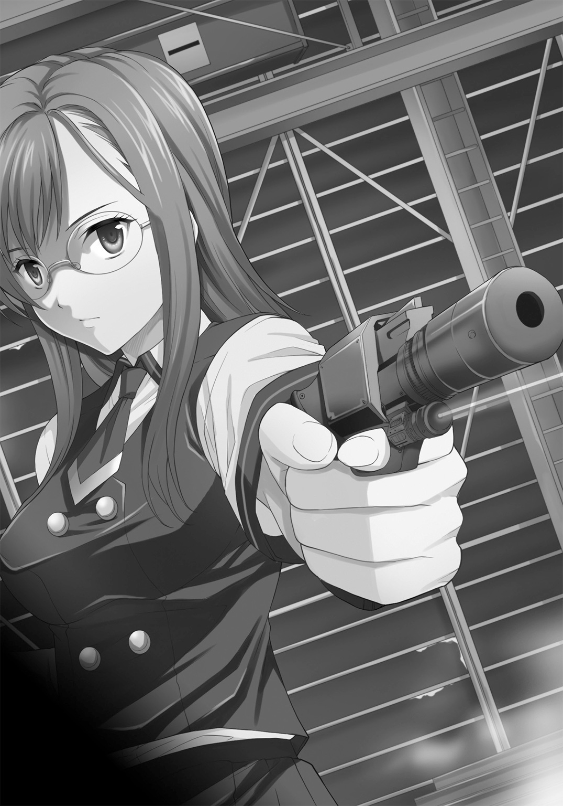
ひきつった笑みが、成江の顔に浮かんだ。
「な、ナンのつもり？ それ、オモチャの銃でしょ、せ、瀬底さん、あんたやっぱりオタクだったの？ い、いやねぇ。そんなもので脅して、なんの......」
すべてを言い終える前に、彼女は光点を移動させ、銃の引き金を絞った。
乾いた音を立て、少女の髪の毛がひと房散る。
引きつった笑いが凍り付く。
「くだらないお喋りはお断り」
「彼女」............瀬底泡瀬は教室での温厚そのものの穏やかさをかなぐり捨てて、肉食獣の冷徹さと、凶暴さをたたえた目で言った。
「内藤さんと綾川さんを登校拒否にさせて、水原さんを自殺未遂に追い込んで、沙汰内くんに、あんなひどいニセモノのラブレターを次々に送らせて笑いものにしてたのはあなた？」
「そ、それのナニが悪いのよ！ ゴスロリ勘違いちゃんに、オタ女に『電波君』でしょ？」
「彼女」の学年の「女王」であった少女は叫ぶ。
「それに、そいつらに何かしたのは私じゃない！ 私は言葉を口にしただけで、命令だってしてないわ！ 『そうなったら面白いわね』って言っただけで！」
「そうね、日本の法律にも、世界の法律にも違反してない」
さらにひと房、少女の髪の毛が散った。
亜音速に火薬を減らした銃弾はその背後に積まれたセメント袋に当たって煙をあげる。
「でも、私の法律には違反してるの......さ、バランスが取れたでしょう？」
泡瀬は冷たい笑みを浮かべる。
「あなたの、国会議員のお父様を後ろ盾にした横暴はもう腹に据えかねたの、女同士でも反吐が出るぐらい、我慢の限界」
「そ、そうよ、お父様は国会議員なのよ、一度は大臣も務めた......」
「そうね......政界ではそれなりの顔かもしれないけど、人である限り一発の弾丸で死ぬわ。知ってる？ ケネディ大統領を殺したのは、私が手にしているこの銃の弾丸より、ちょっと重い程度の弾なのよ......そして、日本の場合、死体が出ない限り、行方不明者はさして騒がれないわ」
「お、お父様が......」
「大丈夫、死体を消すのは難しいけど、私、慣れてるから。苛性ソーダって知ってる？ それが三〇リットル、廃品のバスタブがひとつ、あとは百円ショップでハンマーと大きいビニール袋をいくつか買ってくれば、あなたなんか文字通り、一昼夜でこの世から消えるの。溶かした後のソーダは下水に、骨はコンビニのゴミ箱にでも棄てればおしまいだし」
「なにが望みなのよぉおお！」
泣き叫ぶ少女に、泡瀬は冷たく、淡々とした声で告げた。
「簡単なことよ。ひとつ、学校ではおとなしくする、ふたつ、私の正体を話さない」
涙でぐしゃぐしゃになった顔で、成江はぽかんと口をあけて彼女を見つめた。
「あと、他の人があなたの真似をしたりしたら、ひとり見つける度にあなたの右の膝の皿を撃つ。何度でも、この銃で」
ふるえあがって成江はガクガクとうなずく。
「あなたを殺さないのは趣味じゃないから。でも、私があなたになにをしたかを口にしたり、お父様に泣きついたら、あなたを殺す。私の主義だから――――どんな護衛も無駄なのは、今日のことでわかってるわよね？」
泡瀬は、学校からショッピングに向かった成江の五人の護衛を、ほんの数分で全員無力化して拉致していた。
「わ、わかりました、わかりましたぁ！」
跪いてガクガクと頷く成江の姿は、学校の「女王」としての高慢さも威厳もなにもない、ただの十六歳の少女だ。
「判ればいいわ」
そう言って泡瀬は鞄に銃を収めつつ、くるりと成江に背を向けて歩き出した。
「わ......わかったわ」
しゃくりあげながら、成江が最後に毒づいた。
「あんた、沙汰内類が好きなんでしょう！ 好きだからこんなことするんだ！ この......イカレ女！」
泡瀬は成江に振り向いた。
「ちょっと違うわね。女生徒三人は図書館の常連で顔見知りだったの。でも確かにあなたの言うとおり」
泡瀬は冷たい、口元だけの笑顔を作った。
「私はイカレ女で、彼が好き――――だから、あなたを殺したい、でも我慢してるの。沙汰内くんはそういうの、嫌いだと思うから。大丈夫だと判ったら、すぐ殺すわ」
満面に笑みを浮かべる泡瀬に、今度こそ成江は血の気の完全に失せた白い顔で、愕然と口を開けた。
恐怖そのものをのぞき込んだ顔――――これまで、本物の暴力や死を間近で見たことがないのだろうと泡瀬は思った。
泡瀬は足取り軽く建設現場を後にした。
現場を囲む金属塀の入り口から出ると、ベリーショートをツンツンに立てた髪型の少女が、タンクトップとホットパンツに身を包んで待っていた。
「よくここがわかったわね、やっぱり『予感』がした？」
先ほどまでの凶気の仮面を外したように、疲れ切った表情で泡瀬は片手を上げた。
「まあね、走っていたらピン、ときたのよ」
泡瀬よりは小柄な一六〇センチの身長で、プロポーションはまるで少年のように細く、凹凸がない。それがまたラフな格好に似合っていた。
「言ってくれればアタシがやったのに。泡瀬がやることないよ、この程度のこと」
日に焼けた顔で、まるでガキ大将のようににかっと笑う少女の名は、カレン・西中。泡瀬と同じ「素性」の持ち主。
これでも泡瀬より二歳上だ。
彼女は車から飛行機までの操縦技術と装備の整備で泡瀬をサポートしてくれている。
訓練時代から妙に馬が合う親友といって差し支えない相手だ。
「言ってくれれば、あんな金持ちの小娘を脅すぐらい、アタシがやるのに」
「これは私の個人の問題で『暁』とは無関係だもの」
泡瀬は首を横に振った。
「プライベートに相棒を巻き込めないわ」
「えー？ 一度ああいう悪役みたいな脅迫、やってみたかったのになあ」
言いながら少女は停車していた真っ赤なＲＶ車の運転席に乗り込む。
泡瀬は助手席へ。
「............正直、脅迫行為は初めてだけど、なんかシンドイ。やっぱりテロリストって精神おかしいよね」
戦いは嫌いではない。
ややこしい権力だの国家の面子だののために働く彼女にとって、勝ち負けだけがある世界での戦いなら。
己のうちに存在する「ケダモノ」が解放されるぐらい激しい戦いであれば。
だが、陰惨ないじめの首謀者で人の屑とはいえ、千々裏成江は彼女に匹敵する戦闘力どころか、そもそも金と親の威光以外の武器は何も持たない弱者だ。
だから、「非常事態」故の行動とはいえ、気が重い。
鼻を鳴らしながら少女は制服の胸ポケットに収めていた眼鏡をかける。
度なしだが、彼女用に下半分だけ遠視用の読書眼鏡になっている代物だ。
「............でも、彼に関する限り、それもやむなしでしょ？ 愛よねえ」
笑いながらカレンはニッサン・エクストレイルのエンジンをかけた。
「............それは、否定しない」
赤くなりながら泡瀬は横を向いた。
彼女たちにとって一般人も含め、「恋愛」そのものが御法度だ。
「でもどうする？ ああいうタイプは折れてくれればいいけど、下手をすると前以上の凶暴さで襲いかかってくるわよ？」
「その時は戦って、またへし折ってやるわ。何度でもね」
「恋する乙女の心も、宗教と社会正義を求める心も突き詰めれば同じ純粋さなのよねえ......」
「............あなたって大人ね」
「二年ほどだけどね。年の功ってやつ？ でもまあ、良かったわ。今日は妙な胸騒ぎがするから、あんたが心配だったんだけど......」
笑い合う二人の少女の顔を、真っ赤な光が照らした。
「え？」
その方角を向いて位置を特定するころ、爆発音が轟いた。
「なにあれ？ 爆発？ 火事？」
「うちの学校の方角だわ！」
泡瀬もカレンも表情がこわばる中、それぞれの携帯と、車載無線にサイレン音のような非常コール音が響いた。
『「暁」各員に告げる、暁各員に告げる、本日二〇時三五分、時空震動感知、龍壱号案件発生、龍壱号案件発生。これは演習ではない、繰り返す、これは演習ではない』
「龍壱号案件？」
ふたりは同じ単語を同時に発して顔を見合わせた。
「まさか......そんな、対象は同じ場所に一〇年来なければ二度と現れないんじゃなかったの？」
「とにかく、急行しなくちゃ！」
カレンが思いっきりステアリングを切った。
タイヤに悲鳴を上げさせながら、エクストレイルは急カーブを曲がる。
☆
「えぐっ、えぐっ......」
千々裏成江はボロボロと泣いていた。
しゃがみ込んだ膝の周辺に黒い染みが広がっている。
最後の最後、思わず口を滑らせて、殺されると思ったとたん、失禁していた。
これまで、何不自由なく、美貌と財産に恵まれて生きてきた自分が、それら全てが何ひとつ役に立たない相手に、完膚無きまでにたたきのめされ、殺されると、無様に怯え泣きわめいた。
何よりも耐えがたいのは、最後の最後にこざかしい当てこすりを止められなかったということだ。
当てこすりは敗者が勝者にすることだ。
完全に、成江は泡瀬に負けていた。
あの時瀬底泡瀬の癇に障っていたら、今頃自分の身体は冷たくここに横たわっていた。
「殺してやる」
成江は呟いていた。
「殺してやるわよ、瀬底泡瀬」
ギリギリと奥歯が鳴る。
「お父様に叱られても構わない、あなたを殺してやる。女として生まれたことを最大限後悔させてから、殺してやるわ――――私を、一般人の分際で踏みにじってこんな屈辱を与えたんだもの、与えたんだもの、あなたには、死をもって償ってもらうわ......絶対、絶対に」
腹の底から溶岩をはき出すような声で、成江は己自身とこの空間に呪詛を刻む。
彼女は一切の反省をしていなかった。
「教えてあげるわ、世の中には人を踏みにじる権利がある人間がいるってことを。そんな人間を怒らせたらどうなるかってことを！」
そして、爆発音が響いた。
「............」
数千万分の一の偶然か、それとも必然か。
天空の彼方から、彼女の前に何かが降ってきた。
それはビルの屋上の作業場の床板をぶち抜き、派手な音を立てながら複雑に渡された鉄骨の間を綺麗に通り抜けて、一番下に積まれたセメント袋の山に直撃した。
「............？」
成江は、ふらふらと立ち上がり、その「落下物」に近づく。
初夏の夜風がコンクリの煙をゆっくりと吹き流し、それは崩れ、粉砕されたセメント袋の山の中に鎮座していた。
煙が完全に晴れた夜の建築現場で、成江は「落下物」と目があった。
☆
ほぼ同時刻、シャイアンマウンテン地下で少年は歓喜の声を上げた。
「全て完璧だ！ 完璧に終わった！ 二分ジャストだ！」
だが、手術台の上、少年の隣に横たわる女性はピクリともしない。
部屋の壁にも装置にも血が飛び散り、切断のさいに出たピンク色や象牙色の屑があちこちに付着している。
頭の縫合跡も生々しい少年は、そのままひょいと手術台から飛び降りた。
数十秒前に終わった手術の内容からすれば信じられない行為だが、少年の頭蓋骨はズレもしなければ、少年が白目を剝いて倒れることもなかった。
自分の手首を軽く握り、一分間脈拍を測る。
「脈拍は安定、心臓は動いている。僕の身体も、脳も安定状態だ！ これでいい、これで！ これで『神』に戦いが挑める！ 我らがアメリカ合衆国に栄光あれ！」
少年の声はうわずっていた。
「さぁ、これで計画を本格的に進められる！ 我らが『シルバニオン』よ！」
豊満な胸を揺らしながら、少年の隣の手術台から、絶世の美女はゆっくりと降り立った。
くびれた腰と、絞り出される乳房を強調するデザインのボディスーツとハイヒールが、血に汚れた床の上で、信じられぬほどメタリックな輝きを見せる。
「我ら『神』を殺し、宇宙の頂点に君臨せん！」
そう言って、少年は天井にあるテレビカメラに頷いた。
ドアが開き、今度は勲章の略章を山ほど付けた軍服姿の男女が入ってきた。
だれも部屋の状態に動じることはない。
彼ら、彼女らの全てが一度ならずこれ以上の陰惨な場所に足を踏み入れたことがある証拠であった。
「プルキム君」
中でも一番背丈が高く、威厳に満ちた軍服の老人が敬礼しながら尋ねた。
「君のプロジェクトはスタートしたかね」
「はい、将軍閣下、皆さん。プルキム・メルキオール・バニオン、本日ただいま、無事、『シルバニオン』計画を開始いたしました！」
少年と美女は、何百回も練習したかのように、同じタイミングでぴしっと陸軍式の敬礼を行い、軍人たちは笑いもせず、怒りもせず、大まじめな表情のまま、敬礼でこれを迎えた。
「人類を脅かす異星人をこれで殲滅出来ます！ お任せください！」
装置のガラスのシリンダーの中に浮いていた脳は、消えていた。
☆
西暦二〇一八年・六月半ば・埼玉県朝ヶ市。
「............さすがにあれから三日目ともなると、ヘリも減ってきたなあ」
そんなことを言いながら、沙汰内類は五月の空を見上げた。
各新聞社のヘリは減ったが、まだテレビ関係のヘリはあちこちに飛んでいる。
どうやら学校の爆発は建築時のガス管の配置ミスが引き起こしたもの、とされていた。
時の流れの調停者「イコライザー」であるパスウィダー――――パーシィの言うとおり、あの事件の一〇分前から学校が燃え上がったあたりまでの、全ての監視カメラ映像、音声、携帯画像にタグルたちの姿は映っていなかった。
とはいえ、学校が一つ、消防車が駆けつけてくるまでの僅か数分間で鉄骨すら溶け落ちる高温火災に見舞われたという事実は、やはりマスコミにとって「画」になる不可思議な事件として扱われている。
当然ながら学校は休校。生徒たちは一週間の自宅待機だ。
これからどうなるかは不明だが、恐らく事故調査もあって年内の学校再開はなく、生徒たちはそれぞれ、近い公立高校に分散されるという話がもうマスコミから流れていた。
「転校はしたくないなぁ」
ぽけっとそんなことを呟いていると、タグルは目的地に着いていた。
タグルの住むマンションの近くにある路地。
そこに昨日、いきなり出現した小さな店である。
幅二メートル弱の路地ギリギリに建っている店は西洋棺桶の蓋のような六角形のドアがついていて、上の金属プレートには柔らかい字体で「ろすてぃに屋」と彫られている。
率直に言って、パーシィにネーミングセンスはあまりないらしい。
「パーシィ、コーヒーとドーナツ持ってきたよー」
「あ、大分店内は出来上がってるんだね」
あっさりドアを開けて中に入るとタグルは周囲を見回した。
構造自体は路地にあわせて細長い、いわゆる「ウナギの寝床」的な形になっているが、よく観察すると店の幅は路地よりも左右に一メートルほど広い。
そこに腰までの高さでショーケースが並び、裏側で忙しくコートと帽子を脱いだパーシィが腕まくりして商品を並べていた。
どれも奇妙なデザインのアクセサリーや小物ばかりである。
「ああ、タグルか、ちょうどドーナッツに飢えていたころだ......感謝する。この礼は必ず」
「じゃあ、宇宙か、それとも過去の世界に連れていってよ」
「......そんなのでいいのか？」
「お金で返されても仕方ないしね」
ショーケースの上に、ドーナツとコーヒーの入った紙袋を置いて、タグルが言うと、
「修理に時間が掛かるからすぐの時間旅行は難しいが、近いうちに並行世界ならいけるようになる」
「並行世界？」
「まあ、何と言うか、鏡に映った、この世界とは少しズレた世界さ。こことはよく似てるけれど、違う。たとえば、君が女の子だったりするんだ」
「パーシィも別の姿でいたりするの？」
「いや......私はどういうわけか並行世界の自分を見たことがない」
何故かパーシィは視線をそらした。
「ふぅん......でも、うん、そういうのでもいいや」
「あんなにおっかない目にあったのに、どうして私にここまで親切にしてくれる？」
「まあ、その......」
と応えようとして少年はパーシィに出会う前に、夕暮れの街に現れた少女のことを訊いてみようと思った。
「あのさ......」
頭の中であの時の風景が浮かぶ。
赤い夕日、人気のない街角、懐かしそうな少女の目。
〈......の、......しいタグル〉
あれはなんと言ったのか。
（えーともの凄く大事なことを......）
と意識のピンセットを記憶の中に下ろそうとして、タグルは我に返った。
（あれ？ 何のことを訊こうとしてたんだっけ？）
気がつくと、さっきまで何かを訊こうと思っていた、という事実以外のことがすっかりタグルの脳裏から抜け落ちていた。
「あ......えーと、その......」
何かを言いかけたまま、少年はしどろもどろになって、話題を変えることにした。
「しかし、は、話は変わるけど、よくこんなに商品があるねえ」
「まあ、あちこちの時代や星を旅していると、気がつけば溜まっているもんでな」
とパーシィは追及はせず、あっさりと言いながらいそいそとドーナツの詰まった紙袋を開けた。
「でも、こんな安値でいいの？ このアクセサリーとか本当は一〇倍ぐらいしそうだけど」
水晶で出来た鎖に、よく見ると中でゆっくりと赤い渦が回転している宝石がいくつも繫がれたものに「一五〇〇円」の値札がついているのを見て、タグル。
「ああ、それはアンリキシャの交易商人から情報の見返りに買わされたものだ。本物なら君の言うさらに千倍はするが、全部盗難対策用のダミー、ニセモノだからそれでいい......第一、あと五〇〇個ぐらい奥にある。六角形の赤いダンボール箱は全部それだ」
タグルの示す商品にちらりと目をやった後、パーシィは紙袋の中からひとつひとつドーナツを取り出し、宝石を鑑定するように矯めつ眇めつしては、また一個一個丁寧に袋の中に戻す。
彼女にとって、アクセサリーよりもドーナツのほうが遙かに価値があるのは明白だった。
「へえ............」
タグルはあまりアクセサリーなどに興味はないが、それでもアルバイト先の店長がこの手のものが好きでよく見せびらかすから、それなりにいいものと悪いものの区別はつく。
そういう意味でパーシィの「商品」はかなりの「掘り出し物」ばかりであった。
「これは？ 何かの置物？」
タグルはふと、ショーケースの上に置かれた物に興味を惹かれた。
浮き彫りで唐草模様のようなものとどこかの言語らしいものがびっしりと刻まれた、分厚い三角形の金属の中央に、丸いレンズのような物が塡まってゆっくりと光ったり消えたりを繰り返している。
「いや、それは片付けるものだ。ゴルラム４の娯楽遊具で、床に置いて、このレンズを押してから上に乗っかると............」
ふわり、とパーシィの身体が浮いた。
「元々は宇宙船が隕石にぶつかったりするのを防ぐための慣性消去型停止装置や反発重力装置の技術応用だな。こういうハンモックというか、揺り椅子の代わりにもなる」
そのまま一メートルほど浮かび上がり、パーシィが身体を丸めると、なるほど見えないハンモックに揺られたようになる。
「うわ......」
「素敵な遊具で、子供を遊ばせるには最適だが、オーバーテクノロジーだからな。あと操作を間違えると大人数名を天井に張り付けてびくともさせないような反重力を発生させて危険だ。まだ技術が完全に枯れた物になる直前の商品だから、故障を起こすと、乗っている船が亜空間ジャンプのさい、絶対停止の方向に誤作動する」
「絶対停止？」
「正確には慣性の瞬間消去と絶対固定だ。移動していく物体の中にいようが上にいようが、その瞬間からの地点から動かなくなる............つまり宇宙船から、誤作動した場所に取り残されてしまうんだ」
「なるほど。そりゃこの辺じゃ売れないね」
「絶対停止の状態を長時間維持できれば宇宙で動かない目印になって便利だぞ。実際宇宙灯台はそうして作られてるし――――まあ当時は面白いからいくつか買って、寝返りを打ちながら空中を移動する睡眠を体験して大変楽しかったんだが、一度その故障のせいで『ロスティニア』に置いていかれそうになったんで使うのを止めて、壊れたやつは棄てた......これは別の機会に売ることにするよ」
パーシィが光の範囲から手を下に伸ばし、機械の側面に触れると光は消えた。
「でも意外だよ。てっきり何もしないでのんびり過ごすもんだと思ってた......ひょっとして、お金ないの？」
「硬貨や紙幣はないが金ならあるぞ」
そう言ってパーシィは壁に掛けていたコートの内ポケットから無造作に大きな麻袋を取り出し、中身をショーケースの上にあけた。
「これ......金貨？」
「ああ。この星のものではないが、二四金というやつだ。よその惑星ではともかく、地球ではどの時代に行っても通用するから一応持ってる。もっと小さいただの塊のやつや、日本の小判形のも含めると常に五トンくらいはあるかな。修理にも使うからロスティニアで合成も出来る」
「じゃあ、お店なんかやらなくても......」
「王侯貴族のように贅沢がしたいわけじゃない。人間は働いて休むものだ。休み続けるだけの日々は色々おかしくなる」
「なるほど――――そういえばお祖母ちゃんもそんなこと言ってたなあ」
タグルの目が懐かしそうに細められる。
「ほう、君の祖母も店舗を経営してるのか」
「うん。千葉で模型屋さんをずーっとやってる。『人間、身体が動ける間は動かないと腐る』ってよく言ってるよ」
「なるほど君のお祖母様は哲学者だな......うん、やっぱりここのドーナッツは美味しい！」
タグルの祖母の言葉に共感したのか、それともほおばったドーナツの美味さからなのか、パーシィは子供のような笑顔を浮かべた。
「本当にドーナツ好きだねえ」
「ああ、ドーナッツと『ドクター・フー』は地球の生み出した最良のもののツートップだ！ まったくアメリカという国は、法律で規制しないと食べ物にすぐペンキを入れたり薬品を入れて水増ししたりするようなことを平然とやるが、ドーナッツに穴を開けたことと、アイスクリーム製造装置を作ったことだけは評価に値するよ！」
「............本当に好きなんだねえ」
「ああ。どちらも心が折れそうなときには支えてくれるし、新しいものは常に良いという点でも共通だな......いや、『ドクター・フー』はもっとすばらしいぞ。歴史の勉強のとっかかりにもなるし、イギリス人の抑えたユーモアの良質な部分が凝縮されていてだな......」
それから長々と話し始めるパーシィの唇に、何となくタグルは目の焦点を合わせた。
健康的なピンク色の唇。
つい三日前、あれが自分のものと重なったのだ。
あれは外国人にはありがちな「励ましのキス」で好意以上のものはないと判っていても、やっぱりドキドキしてしまう。
「どうした？ タグル？」
キョトンとパーシイが尋ねる。
「あ、いや、何でもない」
にやっとパーシィが意地悪な笑みを浮かべた。
「ドーナッツのお礼にもう一度、キス、してみるかね？」
唇が妖しく、つややかに輝いて見えた。
「あ、いやあのそのいやいやあえあの、えーと、そ、そういうのじゃない！ そういうのじゃないから！」
慌てて手を振り、タグルは思いっきり否定する。
「と、といりあえあり、じゃなかった、とりあえず、何手伝えばいいの？」
「ああ、そうだな......奥の方に積んである木箱を店まで運んでくれ。そんなに重くないが、腰は用心するようにな」
「わ、判った！」
大慌てで奥のドアの向こうへ駆けていく少年の姿を、パーシィは余裕の笑みで見送った。
「......全く、タグルは可愛いなあ」
クスクスと笑う。
『何で年上の女性が少年を見守る時のような余裕の笑みをかましてやがるんですか、姫様』
と「ロスティニア」の人工知能が冷たい声でツッコミを入れてきた。
「なんだ、修理が終わったのか？」
『いえ、大まかな修理スケジュール予想が成立しました。幸い〈をやかた〉のおかげで大分短縮できそうですが、それでも通常移動と次元移動には二週間、時間移動まで含めるとさらに二、三週間かかります』
「一カ月か......」
パーシィは複雑な表情になった。三カ月と当初言われていたのでこの店を作ったが、どうやら無駄になりそうだという理由もある。
『なにぶん、冷却システムも損傷しているのが大きいのです、次元砲なんか使うから』
「五月蠅い」
口をへの字に曲げてパーシィは腕組みをした。
『細かいご報告は〈をやかた〉からお聞きください』
パーシィの足下の床が四〇センチ四方でぱかりと開き、中から貫頭衣のフードを目深に被った、身長四、五〇センチほどの二頭身の人物がひょこりと顔を出した。
「おお、〈をやかた〉。久しいなあ」
にっこり笑うパーシィに、貫頭衣の人物............〈をやかた〉は丁寧に頭を下げた。
頭を上げたフードの奥に、大福のようなのてっとした、口のない下ぶくれな顔と、大きな丸い目がふたつ、そしてあるのかないのか判らない首もとに小さな鈴が光って見えた。
額には消えかけたマジックの文字で「６」と記されているらしいのが判る。
「技術的な問題などで、私が手伝うところはあるか？」
〈をやかた〉は貫頭衣の袖から、ミトンを塡めたような手を振ると、どこからともなくプラカードを取り出した。
プラカードには子供が書いたような文字で「ではてみじかに」と記されている。
☆
タグルが木箱を運び始めた頃、二キロほど北にある小さなマンションの一室。
泡瀬とカレンは三日間、何もつかめないままに、気の重い報告を電話で済ませた。
「龍壱号案件」の対象がこの街にいるかもしれない以上、東京の本部に出頭することはできないからだ。
とはいえ、情報と呼べるものはほとんどない。
せいぜい、半年前と事件当日、奇妙なメッセージをメモとパソコン画面で受け取って、気味が悪くなって言われるまま巡回に出ていたことから間一髪、惨事に巻き込まれなかった、学校の警備員の、
「少女のような集団が殺し合いをしていたように見えた」
というあやふやな証言があるだけである。
てっきり叱責を覚悟していたが、彼女たちの上司は「まあ、仕方ないことだ」と諦めの溜息をついた。
「？」
『対象は滅多に証拠を残さない。それこそ隠しようのない大災害の最中現れた場合を除いて、対象は意図した相手と同じ写真に写ったり、映像に収まることはあっても、第三者記録を残すことは滅多にない』
秘匿回線で、スピーカー通話なので、ふたりともそろって上司の言葉を聞いていたから、泡瀬とカレンは顔を見合わせた。
『私も若い頃に二度、対象の事件に遭遇したが、対象の足跡ひとつ見つけられなかった............だからといって深追いすると、行方不明になる場合が多い。君たちも、くれぐれも対象とは距離を置いて慎重に対応するように「暁」の人員に余裕はないからな』
「あ、はい！」
ふたりはそろって答え、その後二、三の事務的通達があったあと、通話は終了した。
「なんか、閑職に飛ばされたと思ってたら、えらい最前線に来ちゃった感じね」
泡瀬は溜息をついた。
「まったくねー。よもや龍壱号案件なんて、あたしたちの世代で現れるなんて思わなかったわよ、ホント」
ところで、泡瀬サン、とカレンはニヤニヤ笑いながら泡瀬の肩に手を置いた。
「何よ？」
「えーと、これから過酷な戦場に赴くかもしれんわけですがー、どーよ、彼への告白は？」
「ど、どうしてそういう話になるの！」
顔を真っ赤に染めながら泡瀬。
「ほら、未練が残ると判断力が鈍って、却って死にやすくなるじゃなぁい？」
幼稚園児が大人をからかうように、カレンは後ろ手で身体をくねくねさせながら下から泡瀬の顔をのぞき込む。
「告白、してきたら？」
「お、おお、大きなおさわよ！」
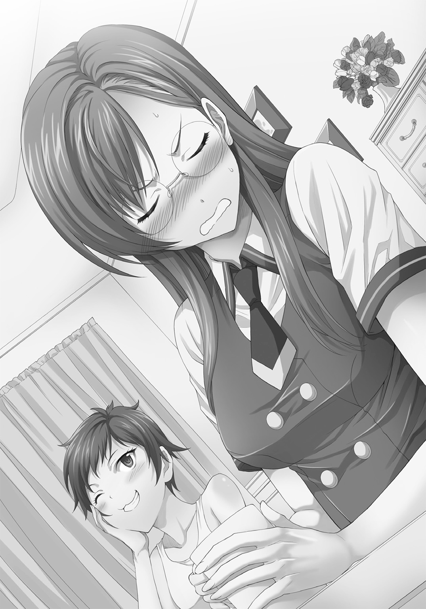
「おさわ？」
「お世話よ！ 舌がもつれたの！」
「あのさー、命短し恋せよ乙女、っていうでしょ？ さっさとタグルくんに告白して、自分の気持ちにケリつけてきたら？ 場合によってはアタシたち、また部署異動するかもしれないわけだし」
そう言われて、泡瀬ははっとした表情になる。
「そ、そうね......そういえば、龍壱号案件の対象は、二度出たら三度は出ない、っていわれてるんだっけ」
「この朝ヶ市は一度出たからアタシたちが監視者として送り込まれたけど、二度目が起こった以上、もう上はここにアタシたちを置いておく理由はないわけだし」
「............」
「まあ、ささっと告白して、ささっと付き合って、ささっと涙の別れをしたらいいのよ。どうせ後腐れがないってことになれば、本部だってお目こぼししてくれるわ、きっと」
「最初から悲恋前提で言わないで！」
「仕方ないじゃない。アタシたち『暁』の人間なんだから」
「............」
思わず泡瀬はうつむいた。
「............わかった、やってみる」
「それがいいよ、うん」
腰に手をあてて、カレンはにっかり笑う。
「それがいいよ、ホント」
☆
千々裏成江はその日のうちに「落下物」を自分の部屋に持ち込むと、翌日には電話による発注と即日配達でパソコンやモニタ、複数台の高級３Ｄプリンタなど大量の電子機器や電化製品を注文し、届いた荷物を「落下物」の周辺に積み上げた。
彼女の護衛たちは成江に「何があったかは極秘に」ということで自分たちが瀬底泡瀬に手もなく気絶させられたことに口をつぐみ、彼女の指図のままに行動した。
そして三日目の朝、「落下物」は彼女の部屋一杯に広がっていた。
四〇畳ほどもある絨毯の床にも、高い天井にもケーブルと金属フレームが広がり、シャンデリアの電源を取り込み、変形したプラスティックが木の根のようにのたうつ。
それを成江はうっとりと眺めていた。
「素敵。もうこんなに再生したのね」
「チヂウラ・ナリエに感謝すル」
ところどころおかしなイントネーションで「落下物」は答えた。
「こ、テイする。我々の、サイ、セイ能力は今現在フル稼働である。あと十二時、間あれば、戦、闘、可、能とな、る」
「あなたの望みは叶えてあげる。もっと機材を持ってきてあげるわ。その代わり昨日言った通り、私の望みを叶えて」
「リョウ・カいスル」
野太い男の声と少女の声が混じる中「落下物」の顔に掛かる焼け焦げた銀の髪が再生されて伸びつつ、その中のひと房が赤く染まっていった。
☆
瀬底泡瀬は、沙汰内類の住所を、二カ月ほど前から知っている。
実を言えば、例の「電波君」騒動を見たとき、泡瀬にはそれが何を意味するのか理解出来た。
彼女の家系には同じ現象を体験した者が多い。
ある日、目を開けたまま、「未来」を見るどころかその中にいるように感じて大騒ぎになるのだ。
有名な陰陽師、安倍晴明の家系に連なる一族は、泡瀬も含めて特殊な能力を持つのが当然で、中でも「予見」はかなりの数に及ぶ。
だから、タグルの身に起こったことが「予見」の一種だと判った............が、それを口にするわけにはいかない。
高校とはいえ、彼女の通う学校の雰囲気は、上流階級の中でも素行が悪く、東京の学校には通わせられない生徒が多いのと、少子化によって一度は廃校になったものが、人口の流動による再開校を行ったため、上級生がいないということもあってか、荒んだ中学の雰囲気を引きずっていて、タグルのことは瞬く間に陰湿なからかいの対象になった。
が、タグルはそれに「耐えて」いるのではなく「受け流して」いるように見えた。
泡瀬にはそこが不思議でならなかった。
過去を調べてみると、自衛官である父の都合で、何度も転校を繰り返しているとわかり、理解した。
この少年は人のつながりが、極論すれば一時的なものでしかなく、あっさり消えたりするのだと知っている。
そして、それを惜しむ心があるのだと。
彼女自身もこれまでの経験で親子の縁や情愛からは遠くなってしまった。
何しろ宮内省陰陽課傘下となれば、オカルトがらみの事件に子供の頃から足を突っ込む羽目になる。
特に「力」を欲する者が傾倒するオカルティックな道具や儀式に絡む事件ともなれば、優しさだの思いやりだのは容易く人の心から剝がれ落ち、ザラザラの欲望や利己心がむき出しになるのがこの関係の事件にはつきものの風景でもあった。
泡瀬自身も、修行や訓練で、自分の中にある柔らかいものが削り取られて、無機質な戦闘兵器になっていくのを感じることが多々あった。
誰もがそういうものなのだろう、と思う。戦闘で己のも含めた血にまみれて体験する泡瀬のような少女もいれば、沙汰内タグルのように学校内の人間関係で体験する者もいる、という程度で。
だから、この学校の中で、自分とタグルは同じものを見ている数少ない仲間だ。
学校や社会、常識や良識というもので作られた絶対的に見える世界が、実は薄紙一枚の書き割りだという真実を。
事実を彼に告げたら、少しは痛みは楽になるだろうか、とあり得ないことを考えるようになったのはそのころからだ。
やがて三駅ほど離れた街へアルバイトに通っているとか、例の騒動のおかげで、父母の仲がぎくしゃくしているという事実も。
ある日、彼女はタグルと図書館でばったり会った。
泡瀬自身、実際に本は好きだった。本は手軽だし電源も要らない。
情報収集の手段として、どこへ持っていくにせよ、目くじらを立てられる心配もない。
なによりも、それ以上に戦闘を重ねるごとに身の内にある「ケダモノ」の割合が大きくなる自分の、人間らしさの維持として必要だった。
だから図書委員になり、それなりに真面目にこなしている。
そこに、ふらりとタグルが入ってきた。
適当に小説を数冊見繕って泡瀬のいる貸し出しカウンターにやってきた。
少々動揺したが、努めて表情を出さないように、てきぱきと作業を終え、本を手渡した。
「ありがとう」
にっこりとタグルが笑った。
笑顔には媚びたところも、ひねたところもない。
学校での経験はこの少年の心の根を歪めていなかった。
見かけよりも、強い心なのだ、と、泡瀬は理解した。
その瞬間、泡瀬は自分が恋に落ちていることに気がついたのだ。
――――そして、現在。
泡瀬は、タグルの住むマンションの玄関先に並ぶ郵便箱の前に立っていた。
私服で来ようかと思ったが、何故か気がつくと制服に着替えていた――――やはりクラスメイトの瀬底泡瀬として彼と付き合いたいという願望が彼女にその選択をさせていた。
彼の部屋番号もとっくに判っている。
我ながら彼に手紙で告白するというのは馬鹿だと思った。
最大の問題は、これまでタグルにはこの手の悪戯や嫌がらせが山のようにあった、ということで。
だから文面は色々考えたあげく、何十枚もの便箋を無駄にして何とか書き上げた。
（――――どうか、誤解されませんように）
祈りながら、泡瀬はその手紙を投函すると、風のように走り去った。
☆
パーシィは、この前の事件のあった夜、タグルの家でシチューをごちそうになった。
その際、妙にタグルの母親に気に入られ（タグル曰く『母さんは宝塚マニアだから、パーシィみたいなタイプは好みなんだと思う』）、連日夕食を厄介になっている。
旅人に、余計な遠慮はないものだ。受けた恩はちゃんとあとで返せばいい、と思っているからパーシィとしては後ろめたさもない。
タグルを先に帰した後、身なりを整え、「ロスティニア」の倉庫から引っ張り出した、パリトシリン星系産のワインを土産にマンションにやってくると、郵便ボックスの前から走り去る眼鏡の少女を見かけた。
「タグルの学校の制服か......？」
三日も前に休校になった学校の制服を何故女生徒が着用してタグルの家のも入っている郵便箱の列の前にいたのか。
何となく引っかかって、パーシィは「蒸気精霊杖」を取り出し、光らせた。
「杖」を持ち、片眼鏡型のディスプレイでなければ読み取れない微かな彼女の生体反応の移動痕跡を追うと、タグルの家の番号が付いたボックスに手を入れた形跡がある。
「............」
さらに杖を光らせ、ダイヤル式の鍵が独りでに回転し、解錠の音。
パーシィは迷わず郵便箱の蓋を開けた。
郵便物はひとつ。
ふたたび迷わず、「蒸気精霊杖」の力で封筒の糊を一時的に無効にして封を開ける。
中には丁寧に折りたたまれた二枚の便箋、一枚は儀礼に則ってちゃんと白紙だった。
そこには「好きです、本当です。お話がしたいです。朝ヶ公園まで来てください。私は七時から待っています。瀬底泡瀬」とあり、裏返すと携帯電話の番号が記されている。
「......何という悪辣な」
パーシィは眉をつり上げた――――彼女の頭の中には三日前、寂しげな笑顔を浮かべて封筒をたたみ直した少年の横顔が浮かんでいる。
今回も「そういうこと」なのかもしれない。いや、わざわざ学校の制服を着用しているというのが怪しかった。
「ひとつ罠をしかけてがっかりさせ、さらにまた希望があるとロープを垂らして這い上がってきたところをぶん殴るということか、許せん！」
何故か頰が赤くなっているのに、当人は気づいていない。
そのまま丁寧に封を戻し、郵便箱の蓋を閉じて杖を光らせ、痕跡を消す。
コートの内ポケットから、「今日は遅れる、ワインはお母様に」と書いたメモとワインの瓶を入れた。
旅人として必要なもののひとつに、義俠心がある。
少なくともパーシィはそう考える。そうでなければイコライザーなど出来ない。
だからそのまま杖を持って、パーシィは郵便物を投げ込んだ少女を追跡すべく、靴音高く走り始めた――――ちなみに、七時まであと三〇分弱。
☆
約束の時間になってもパーシィが来ないのは珍しい。
といっても出会って三日も経過してないのだが。
とりあえずタグルは気になって下に降りた。何気なく、郵便ポストを見る。
「？」
ダイヤル式の鍵を開け、中にあったワインの瓶とメモ、そして封筒を引っ張り出した。
「......？」
パーシィのメモを見て首をひねり、封筒を開けて中を見る。
「............」
行くべきか行かざるべきか。
普通に考えれば閉校されてバラバラになるから、出した相手がタグルが来なかったことで責められるという事態は考えづらい。
ただ、今回の相手は瀬底泡瀬で、彼女のものらしい携帯電話の番号まであるのがこれまでと違っていた。
三〇秒ほど首をひねって、タグルはパーシィのメモと封筒をジーンズのポケットにしまい、スマートフォンを取り出した。
どうにも嫌な予感がしている。
「あー、お母さん？ パーシィちょっと遅れるって。郵便箱にワインの瓶入れとくから取りに来て、僕もちょっと出かける」
言って、一旦スマートフォンを耳から離し、時間を確認する。
「七時半には帰るよ、ごめんちょっと急ぐ......うん」
七時まであと二分。
☆
「チヂハラ・ナリエ」
のたうつような配線コードで埋め尽くされた自室で、うつぶせになって眠っていた成江は、「落下物」の声に起こされた。
「申告する・修復は不十分であるが、お前と我らの望みを同時に達せられる可能性が高まった」
「どういうこと？」
「説明する。我々の標的が一箇所に集まる。だが私の身体の再生はまだ不十分である。攻撃力も足りない。私を大型機械のある場所へ連れていけ」
「落下物」の声はいつの間にか金属音めいた響きのする少女のものに変わっていた。
「わかったわ」
満面の笑みで、成江は頷いた。
「さあ、私に抱きついて」
そう言って少女は両手を広げると「落下物」を愛しい妹のように抱きしめた。
ようやく上半身を再生し終えた「落下物」は姉にしがみつく妹のように抱きかかえられる。
成江の瞳孔は完全に開いており、その奥で、ナノマシンの放つ怪しい輝きが、「落下物」と同じ形、同じタイミングで瞬いているが、当人は知らない。
☆
投函して、そのまま普通に歩み去ろうと思っていたのに、気がついたら走り出し、走り出したら今度は身体が勝手に動いて、近くのビルの路地裏に置いてあるゴミ箱をジャンプ台代わりに、そしてエアコンの室外機をその次の足場代わりにし、さらに雨樋を僅かな間ロープ代わりにして、泡瀬はビルの屋上から屋上へと走っていた。
耳まで真っ赤になって、心臓が運動とは別の意味でドキドキしているのが判る。
そんな状態なので、彼女の警戒心は薄れていた。
泡瀬が追跡者に気づいたのはマンションの前を後にしてからしばらくしてのことだ。
ようやく冷静になってきて、投函した手紙の文面がまるでストーカーのようにも取れるものだと頭の中が後悔で一杯になって、それを頭を振って払いのけた途端に気づいた。
「？」
最初、タグルに見つかったのかと思ったが、彼女は走り出すと同時にパルクールの要領でビルの屋上を次々飛び越えている。
一般人のタグルが追いかけてこられるはずはない。
「誰？」
相手の気配はドンドン近づいてきて、直感が「危険だ」と囁いた。
直感に逆らうほど、彼女は愚かではない。だから速度を上げ、ビルから飛び降りた。
腕時計型のフックランチャーを使い、古いビルの看板の支え部分に竜頭部分を絡めて落下速度を落とすと同時に落ちる方向を真下に変えて、途中の階の窓の庇の上に着地する。
手首をひねると、同一方向の単結晶構造をもつ糸はあっさり切れ、予備の竜頭が時計内から押し出されて再装塡。
上を見ると、長身の影が、彼女と同じ庇の上に舞い降りるところだった。
「！」
黒革のロングコート、メダルの塡まった、テンガロンハットのようにつばの広い中折れ帽。
単眼鏡、アジア人にはほぼ皆無の、深い青が集まった長い黒髪。理知的な顔立ち。
全てに見覚えがあった――――ただし、紙資料で、だ。
（龍壱号案件！）
驚愕する頭の中とは別に、身体は危険回避を選択する。
☆
彼女の父の顔が利く建築機材レンタル会社の倉庫へ、成江は「落下物」を持っていった。
数十分で「落下物」は機能を再生する。
油圧ピストンとそれを動かす電動モーターの音、そして倉庫内を照らすサーチライトの輝きの彼方から、「落下物」は彼女に声をかけた。
「申告する。私は再生を完了した。これよりお前と私の共通の目的に対して行動を開始する」
「あなたのもう一つの目的はいいの？」
「肯定する。それは問題ない、すでに終了している」
「落下物」はそう答え、大きな瞳の中にリング状に周回する光を灯した。
「個体名チヂウラ・ナリエ、さあ、私の後ろに乗れ。お前には見届ける権利がある」
「ええ、喜んでおつきあいするわ」
口元に今までにない三日月のような笑みを浮かべて成江は頷いた。
☆
相手が僅かに曲げた足を伸ばすまでの間に、泡瀬はくるりと側転するように庇を乗り越え、さらに同じ要領で横に反転して足から二階下の庇の上に降り、そこから一気に飛び降り、向かいのビルの壁を蹴って落下速度を落として地面の上へ。
「なんで？」
着地したとき、ようやく肉体が反応して声が出た。
「どうして龍壱号がこんなところにいるのよ？」
同時に携帯が鳴り、泡瀬は耳に入れた Bluetooth カムを軽く人差し指で叩いて応答した。
『泡瀬、あんた、一体どうして龍壱号に追われてるのよ？』
街中の監視カメラに顔認識システムを連動させて市内を監視していたカレンの声は、うわずっていた。
「知らないわよ！ 私はあなたが言うから決意して、彼に告白するための手紙を出しに行って、気がついたら後ろにいたの！」
『えーと、彼女の顔を見てると、怒ってるみたい――――どうも厄介なことになっているような気配が濃厚なんだけど？』
「知らないわよ！」
カレンを怒鳴りつけ、今はそれどころではないと考えを改める。
「ああ、ごめんなさい。わからないけど............ど、どうしたらいいの？」
『道ばたで拾った宝くじで一等が当たった、っていうより、犬が歩いていたら棒に当たるどころかタンクローリーが突っ込んできたみたいな話で、アタシもわかんないわよ！』
「ほ、本部の対象発見時の指示って捕獲だっけ？ 観察？ 通報？」
駅前の帰宅ラッシュの人の群れの中を駆け抜けながら泡瀬が悲鳴に近い声をあげる。
『と、とりあえず本部に通報する、泡瀬、頑張って凌いで！』
「りょ、了解！」
気がつけば、自分がタグルと待ち合わせている公園に向かっているのに泡瀬は気づいた。
泡瀬が最後の角を曲がると、長身の影が改装工事が終わったばかりの公園の入り口の門の上、彼女を見下ろすように立っていた。
呆然としている泡瀬の前に、龍壱号案件、ことパーシィはひらりと舞い降りてきた。
「キミが、タグルのマンションに手紙を投函した人間だな？」
パーシィは腰に手を当て、ぐいっと少女の顔をのぞき込む。
「断っておく、タグルはいいやつだ。少なくとも私が知り合った最良の人間のひとりにめでたくランクインするぐらいにいいやつだ。キミはなぜ、そんな彼をおとしめる！」
パーシィは怒りがあちこちから吹き出すような声でさらに詰め寄った。
「彼は善人で、限りなく自分に対する災難に対して心が広い。怨嗟や憎悪という概念がないんじゃないかと思うぐらいだ。それを傷つけるのがそんなに楽しいのか？」
「いや、あの、その......」
「見ればキミはかなりの学識と常識を持ち、聡明そうに見える。ついでに言えばおとなしい文化系に見えて身体も鍛えているのがわかるが、それを表に出さないのは奥ゆかしい性格だからだろうと思う。ならばなぜ、タグルにこんなひどい仕打ちをするんだ！」
（え？ あの、この体術とか見て『身体も鍛えてる』程度のレベルなの、この人にとっては？ いや、でも、ついてくるどころか追い越せるんだから当然？）
と愕然としながらも、
「あ、いえ、その......」
いきなり自分の恋愛事情に、よもや仕事上の監視対象が乱入してくるとは思わず、戸惑う泡瀬に、気にすることなくパーシィはさらに詰め寄る。
「キミは恥を知らないのか？」
そもそも、どうして「暁」の監視対象でもある、特殊存在が一高校生が学校内でいじめられていることを知っていて、しかも自分の身内のように義憤に駆られているのか。
（まってよ、ということは沙汰内君が見た『予見』って......対象に深く関わることなの？）
タグルの件は本部に報告しているものの、まさか監視対象がここまで深く関わる案件だとは思ってもみなかった。
「いいか、私の名前はパスウィダー、色々あってタグルとは縁がある者だ、だから言わせてもらう、このような卑怯な真似はやめたまえ！」
その時、詰め寄られた泡瀬の視界の片隅に、タグルの姿が見えた。
こんな状況なのに、それだけで胸が弾んだ。
「待ってよ、パーシィ！」
タグルはふたりを見て状況を悟った。
「違うよ、彼女じゃない。僕をからかったりするのは別のグループの人たちだよ、きっと彼女は僕と同じで標的にされたの！」
「そうかもしれないが......」
「書かされたんだよ、きっと。瀬底さんはおとなしくって、どこのグループにも所属してないんだから！」
「............本当か？」
なおも訝しげにパーシィは泡瀬を見た。
「ち、違います！」
とにかく混乱しながらも泡瀬は否定した
「わ、私があの手紙を書きました。じ、自分の気持ちに素直に書いたんです、沙汰内くん、私、ほ、本当に......」
「いや、いいんだよ、大丈夫。うん」
タグルはうんうんとうなずきながら泡瀬を手で制した。
どうやら「そう言わないと成江たちからいじめられる」と認識しているらしい。
「ち、違うの！ そういうのじゃなくて！」
「わかってる、わかってるから......ありがとう、瀬底さん」
間違いなく、その「ありがとう」は「ごめんね」と同義語だった。
ちゃんと告白してフラれるならともかく、誤解の果てに告白とも認識されない、というのはたまったものではなかった。
「しかし、悪を見逃し、それに従うのは良くない！」
「そうだけど、今彼女を責めても事態は解決しないって」
「だから違うって言うのにー！」
半泣きで泡瀬は叫んだ。
☆
倉庫周辺の全ての建物のブレーカーが落ちていく中、「落下物」は凄まじい勢いで全ての電力を移動するためのエネルギーに変換していった。
倉庫の中は青白い輝きに満ち、それは「落下物」の足下に渦を巻く稲妻が放っていた。
中枢部に対して、あまりにも巨大な下半身を持つに至った「落下物」の上に乗って、成江は喜悦の表情を浮かべた。
自分が今、瀬底泡瀬以上の力を持っていると、確信できたからだ。
「では、これより出発する――――殲滅せよ！」
☆
「いや、だからどう違うんだ？ 君は圧力に屈してタグルにああいう手紙を書いてしまったんだろう？」
「違います、龍壱号！」
思わず、泡瀬は対象の暗号名を口走っていた。
「......なんで日本政府の使う私の呼び名を知っている？」
「あ、いやあの、そ、それは......」
その時、派手な雷鳴を轟かせながら、公園の真上に、直径二〇メートルはある巨大な稲妻の輪が現れた。
「！」
思わず見上げる泡瀬たちの前で、稲妻は青白い放電を繰り返しながら風を巻く。
顔を覆いながら、泡瀬は見た。
その中央に何もない「穴」としか呼べぬ空間を生み出し、そこから、ゆっくりと巨大な影が降りてくる。
「殲滅せよ！」
その声を聞いた途端、明らかにタグルが驚愕の表情を浮かべた。
「なんであれがこんな所に？」
「わからん！」
パーシィが応えながら、どこからともなく金属と宝石で出来た「杖」を取り出した。
それは、異様な姿をしていた。
下半身は、以前ニュースなどで見た、瓦礫の山や荒地作業に特化した多脚型作業車を数台組み合わせた八本脚。
両腕はビルの取り壊し等に使われる、三本爪で廃材などを握り砕くタイプのアーム。
さらにあちこちに、釘打ち機を改造したとおぼしい、釘を板状のクリップに山のように並べたものが繫がる機械が装着され、ヘッドライトの部品と、工事現場用のサーチライトまでごちゃごちゃとついている。これだけ見れば、寄せ集めの多脚作業重機。
だが、それらを繫ぐ胴体の部分、その中央に配置されているのは、どう見てもスクール水着を着用した銀髪の少女なのだ。
「なに......あれ？」
まだ、泡瀬は「スウィムウェン」という存在を知らない。
「殲滅せよ！ 殲滅せよ！ 殲滅せよ！」
前髪のひと房が赤く染められたそのスク水少女は金属をこすりあわせたような残響をひく少女の声で声を張り上げる。
「何故お前がここにいる、スウィムウェン！」
パーシィが叫んだ。
同時にスク水少女の中枢部分の陰から、泡瀬にとって見覚えのある少女が姿を現した。
「千々裏成江！」
泡瀬の声に、成江は口元に手を添えた優雅な仕草で高笑いを放った。
「三日ぶりね、瀬底さん、それと......言葉を交わすのはこれが最初で最後になるわね、沙汰内くん」
成江はぎらぎらと輝く目でふたりを見下ろしながらまた笑った。
「私たちは協力しあうことにしたの。彼女たちは修復と増殖、私は復讐」
「バカ！ そいつらは人類を絶滅させるのが目的だぞ！ どうせ介入時間は切れているから、失敗するがそれまでに何人の血が流されると思う？」
パーシィが叫ぶが、成江は「だから？」と逆に問い返した。
「私と、私が認めたお友達は彼女への協力の見返りに除外されるわ、いいこと？ 世の中は踏みつぶすことが許されるエリートと踏みつぶされることしかできない非エリートがいるのよっ！」
見開いた目の中、瞳孔が大きく開きっぱなしになった顔で、成江は笑みを浮かべた。
まるで、鮫が笑ったような、凶気に満ちた笑み。
「彼女、何かされてる？」
タグルがパーシィに訊いた。
「判らない、だがあの少女の様子からすると何らかの洗脳を受けてる可能性はある............くそ、あいつら妙な小技を覚え始めたな？」
「パスウィダー、沙汰内くん、あれは彼女の地金が出ただけです！」
そんなことを言っていると、稲妻の渦は消え、八本の金属の脚が公園の道路のアスファルトと、公園内の芝生を突き破る。
「最優先標的を設定、セソコ・アワセ、サタウチ・タグル、パスウィダー。殲滅せよ！。殲滅せよ！」
無表情に、スク水少女の姿をしたスウィムウェンリーダーが叫ぶ。
「ほう。私がこういう状況で標的の三番手になるのは珍しいな」
「感心してる場合？」
『何があったの、泡瀬？』
「私の頭がおかしくなってるんじゃなければ、スクール水着の中学生ぐらいの上半身に、重機改造の下半身を持ったロボットがこっちを殺そうとしてる」
『は？』
そんなそれぞれの状況をよそに、自らを地球の素材で再生したスウィムウェンリーダーはゆっくりと立ち上がる
「さあ、三人とも血祭りよ！」
成江は目を輝かせて、釘打ち機を改造したマシンガンのひとつを自分の前に固定し、即席の銃座にして狙いをつけた。
「どっちにせよ、スク水多脚重機に殺されるのはごめんだな」
「同感！ それに瀬底さんを巻き添えにはできないよ！」
「いやあの、わ、私は......」
わたわたしてると、成江が叫んだ。
「しんじゃええええええ！」
パーシィのかざした「杖」が輝いて、発射された数千本の釘が空中で制止する。
「弱ったことに彼女は本気か......『規定外に刃物』ではかなわん、ひとまず逃げよう！」
「同感、瀬底さん、いくよ！」
「え？」
タグルが自分の手を取っているという状況に、一瞬泡瀬の頭は真っ白になった。
そのまま三人は公園の中を駆け抜ける。
さほど広い公園ではないから、あっという間だ。
その間にスウィムウェンリーダーは釘打ち機のマシンガンを撃ちまくり、八本の脚で砂場と雲梯と滑り台を破壊し、タグルたちに撃ち込まれた数万本の釘は、パーシィの杖を中心とした半径五メートルの範囲内では空中に固定されたが、その他は流れ弾となって近くのビルの壁を崩壊させた。
公園の反対側の出口を抜ければ、すぐそこに解体作業途中のマンション、あとは住宅地。
「このまま街中には出せない！」
「パスウィダー、一時的にシールドを解除してください。二秒でいい！」
泡瀬は太股に装着したチアッパ・ライノを引き抜いて言った。
どうするつもりだ、とか、それで何が出来る、という言葉はなく、
「わかった！」
とその場でパーシィは立ち止まり、一瞬杖の輝きを消した。
空中で止められていた数万本の釘が一気にざらりとアスファルトの上に落ちる中、泡瀬はライノの引き金を絞る。
六発のマグナム弾がスウィムウェンの首の後ろにある太い電源ケーブルを切断した。
激しいスパークとともに、スウィムウェンの下半身である建機パーツから一気に力が抜け、前につんのめるようにして倒れ込み、地響きとともに公園の通路のアスファルトが粉砕され、土埃が舞い上がる。
「よし、でかしたアワセ！」
パーシィが杖を光らせると、切断されたケーブルの断面をさらに溶かした。
「これでもうこのケーブルの回路は使えない」
満足げなパーシィの言葉に抗議するように、スウィムウェンリーダーは頭を上げた。
「回路Ｂによる緊急起動開始」
再びモーター音が響き、サーチライトが灯り、建機部分の脚が力を取り戻す。
スウィムウェンの額に、弾を再装塡したライノを泡瀬は向けた。
六発の銃声がひとかたまりになり、銃弾もほぼ同一点に集中し......空中で止まった。
「しまった、もう力場を展開するようになってるのか！」
「しねええ！」
つんのめった拍子に額をうった成江が、そこから血を流しながら釘打ち機を構える。
パーシィが杖を再び光らせるまでのタイムラグ。
☆
一瞬よりさらに短い時間を刹那という。
だとすれば、それは成江が釘打ち機の改造品を構えて引き金を引く三刹那前。
沙汰内類には、その後の光景が見えた。
パーシィの杖が光るまでのタイムラグで、再展開されるフォースフィールドをすり抜ける釘打ち機の釘。
小さな血しぶき。
額と胸を撃ち抜かれ、仰向けに倒れはじめる泡瀬の姿。
今なら間に合う。
身体は動いた。
泡瀬の身体を抱きかかえつつ、反転しながら横へ。
額を撃ち抜くはずだった釘はこめかみをギリギリで通り過ぎたが、胸を撃ち抜くはずだった釘がタグルの肩に当たる。
骨はそれたが、痛みは少年の脳天を灼いた。
「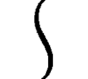！」
辛うじて悲鳴を抑えたが、涙が出そうになるのは仕方がない。
腕の中、呆然とこちらを見る、「生きた」瀬底泡瀬に、微笑みかけることが出来たから。
「大丈夫、瀬底さん？」
「あ、あの、沙汰内くん......」
たら、と汗のようなものがこめかみを流れる鉄錆の匂い。どうやら一発かすったらしい。
それを見て、泡瀬が真っ青になった。
「さ、沙汰内くん！」
「か、かすり傷だよ、うん」
そっと泡瀬を地面に下ろし、その瞬間腕の筋肉の動きでずきんと痛む傷口を、何とか奥歯を嚙みしめて我慢する。
その背後ではスウィムウェンリーダーの八本脚が、もの凄い音を立ててパーシィの張ったシールドを殴りつけ、シールドの効果範囲を示す円を描いて地面が割れた。
「タグル！ 大丈夫か！」
杖をかざしながら、パーシィが後ろを向いた。
「あ、くそ、なんてことだ！ 四発も当たってるぞ！」
「え？」
てっきり肩とこめかみだけだと思ったタグルが振り向いた。
「背中に三本、肩に一本。痛くないか？」
「今、もの凄く痛くなった」
正直に答えた。言われるまで気づかなかったが、確かに四箇所、冷や汗にしてはとろみのありすぎるものが背中と左腕を伝ってるのを自覚する。
「走れるか？」
「何とか」
「ドーム状でフィールドを張ってるが、このままだと中の酸素が持たない。一瞬移動用に変形させるために解除するから走れ。工事現場に入ったら何とかする。君とアワセ君はそのまま逃げろ」
「もう、今更無理だし、第一、あのスウィムウェンの攻撃目標は僕たち全員だよ？」
「そこは私が何とかする」
「何とか、ってどうするの？」
「安心したまえ。私は天才だ」
「こんな時に冗談言ってる場合？」
「冗談なんかじゃないぞ、天才は冗談と噓は言わないものだ」
「しょっちゅう言ってるじゃないか！」
「とにかく、あのマンションの工事現場まで走りましょう。沙汰内くん、今刺さってるのを抜くと出血がひどくなるから、このままで行くわよ！ パスウィダー、解除を！」
「了解だ！ 三、二、一！」
いつになく、力強い声で泡瀬が言い、タグルの、無事な方の手を引いて走り始めた。
思いがけず、力が強い。
「わわわ！」
タグルはそのまま引きずられるようにして走り始めた。
圧搾空気の弾ける音と作業用サーチライトが追いかけてくる中、三人は走る。
背後のスウィムウェンは相変わらず「殲滅せよ」と叫び、成江は凶気の笑い声をあげながら、釘打ち機を改造したマシンガンを撃ちまくり、路地や塀に次々着弾の穴が空き、八本の脚が地面をえぐる。
☆
タグルのこめかみから、血が流れているのを見た瞬間、泡瀬は覚悟を決めた。
たとえ正体がばれようが、「暁」の規定を違反して一般人にその活動が目撃されようが構わない。
タグルの手を引いて走りながら耳の中の Bluetooth のスイッチを入れる。
「カレン！」
叫ぶと最初のコールが始まった瞬間に相手が出た。
『アンタの位置ようやく特定したわ、応援、要る？』
「ええ。『特装五型』を特急で。目標は私の前二メートル」
『............本気？』
「本気！ カウントゼロでやっちゃって！」
『この若い身空で失業かぁ』
カレンの声は苦笑まじりだったが、拒絶はしなかった。電話の向こうでキーボードが叩かれ、マウスの滑る微かな音が聞こえる。
「ごめんね、カレン」
『あんたが教官を最初にぶん殴った日から覚悟してたわよ......それ、射出！』
道路を駆け抜け、マンションの解体現場を塞いでいるパンタグラフ型横開きシャッターの鍵をライノで撃って破壊し、飛び込む。
もとは八〇年代バブルのころに建てられた豪奢な高層マンションで、広いエントランスホールに彫刻や絵画を飾っているようなものだったが、クレーンを使って上から徐々に解体され、今は二階部分の天井まで壊されて、ぽっかりとした広い空間になっている。
気がつけば途中までアスファルトを掘り返す音と「殲滅せよ！」の叫びをあげて追ってきたはずのスウィムウェンの気配がない。
「追っ手は？」
尋ねる泡瀬に、パーシィは、
「飛んだ、多分、三秒後ぐらいに我々の目の前に来る！」
言われて前を見る。
奥に解体作業用の車両が何台か見えるが、スウィムウェンはその上に落下してきた。
トン換算の物体が落下した衝撃で周囲の壁に亀裂が走り、その一部が崩れ、下敷きになった際に横転した作業車両のパーツがさらに周辺を破壊。
さすがにこの移動に成江は付き合うわけにはいかなかったのか、彼女の姿はなかった。
（これなら......！）
同時に泡瀬はこのタイミングで別のものが落下して起きた震動を察知していた。
大質量の着地の結果、舞い上がった微細なコンクリートの粉塵が煙となって立ちこめる中、泡瀬は「到着」のブザーを Bluetooth のイヤフォンから聞いて、タグルの手をそっとほどいた――――「特装五型」の収まった金属カプセルが、右手奥の床に突き刺さっているのを確認。
砂礫と化しそうなほどに亀裂が入った大理石の床の上を走り、肌身離さず持っているキーホルダー型の作動スイッチを入れると、ダブルベッドほどもある大きさの「特装」の収まったケースが展開する。
内部に巧妙に折りたたまれた、西洋甲冑を一回りゴツくしたようなデザインの外装骨格式の装甲強化服が立ち上がり、着用しやすいように姿勢を変える。
泡瀬は駆け寄りながら素早く制服の上着とスカートを脱ぎ、靴を放り出して下着姿になると背中を開けてうつむくようにしている「特装」の中に同じポーズをして「入った」。
背中から後頭部にかけて開いていた装甲が閉じると真っ暗な中「特装稼働開始」の文字がヘッドアップディスプレイ表示される。
「血液駆動式特四動力起動」の文字が出ると同時に、泡瀬の頸動脈に金属リングが固定され、その内側から出た針が、彼女の動脈に刺さる。
そして首から下を装甲服の内側から染みだした耐衝撃、防火能力を備えたポリマーリンゲルがしっとりと包み込み、血液が吸い出される感覚。
この装甲服の要所要所には、木曽のとある山奥から産出され、特殊な製法で精錬された金属で出来た歯車が埋め込まれている。
この歯車は特定の家系の人間の血を与えられると回転をはじめ、同時に「超能力」と呼ぶよりほかない超常現象を意図的に引き起こすことが可能となる。
たとえば......。
泡瀬は立ち上がると、両の拳を打ち鳴らした。
「召還、雷神雷狐！」
蒼い稲妻が拳の間からほとばしり、むき出しになった鉄筋をつたって周囲の壁を這い回っていく。
その稲妻は空中で数匹の狐の輪郭を描いて、稲妻で出来上がった狐は、単なる輪郭から、稲妻の塊となって泡瀬の足下に降り立つ。
このような現象だ。
今から二千年ちかく昔に見つかったこの歯車を「清明歯車」と呼ぶ。
これを組み合わせ、現代のテクノロジーでさらに強化した血液駆動式特四動力体を両手両脚と胴体に組み込んだ装備が「特装五型」
特命機関「暁」の中でもこの装備を使いこなせる者は数少ない。
上官への不服従で本来ならクビにされるはずの泡瀬が、閑職扱いの場所への転任という形で残されたのは彼女の身体の中を流れる『血』で装備を使いこなすことができるためだ。
泡瀬は踵を返し、パーシィの張った力場障壁を殴り続ける敵めがけて駆ける。
稲妻で出来た狐もまた、空中を舞いながら彼女に従い、スウィムウェンへ体当たりした。
高圧電流の塊が一瞬で分解されることで、空気中も含め、各部の表面に残った僅かな水分が爆発的に蒸発、露出したあらゆる動力部分、電気系統が破壊され、スウィムウェンは横転した。
そこへ、泡瀬の装甲服が襲いかかる。
「豪腕招来！」
叫ぶと同時に今度は炎が泡瀬の装甲服の拳を覆い、灼熱した拳が八本の脚の付け根を溶かす。
潜在意識に「今が緊急事態である」と告げ、超常能力を一時的に引き出すためのキーワードは日常使う言葉でなければ、どんなものでもよく、「暁」の装甲服使いたちの中でも様々だ。
中には映画のセリフや、洋楽の歌詞を使う者もいる。
だが、何となく泡瀬はこの祝詞っぽいものを選んでいた。
「此神床に命座奉る掛巻も綾に畏き大神の大前に 恐み恐みも白さく」
泡瀬は半ばトランス状態、半ば正気を保つための言葉を口にした。
「日に異に蒙り奉る大神の大御恵を崇め奉り喜び・奉りてありせども、我大神の力もて、目の前の輩を討ち祓い、打ち清め、御身心にそいて御国が盾となり、剣となり、拳とならん！」
彼女が組み立てた祝詞の形式に則って作られた無意識下コントロール用キーワードを唱えつつ、次の攻撃に合わせて能力を発動させ、あるいは強化、補足する。
「轟蹴足招来！」
灼熱の爪先が蹴り上げる。
「剛力招来！」
鋼の腕が釘打ち機を改造した機関銃を引きちぎる。
突き飛ばすと、スウィムウェンのボディは、脚を全て破壊され、スク水少女の上半身と、解体作業用のアームが四本残るだけとなった。
「怨敵退散！」
拳に光――――最後に一発、スウィムウェン本体にくれてやれば全て終わる。
「解析完了」
だが、スウィムウェンがそう宣告した瞬間、泡瀬の拳ははじき飛ばされた。
「一種の意志エネルギーによる原始的な物理破壊の相乗効果数式を、無効に設定」
スウィムウェンリーダーの声と共に、これまでにない恐ろしいほどの速さで、二本の解体用アームが打ち下ろされる。
「上半身用アーム部分、速度対応および打撃力、最適化完了」
とっさに交差した両腕で受けるも、地面に足底がめり込み、さらに次の行動を泡瀬に取らせる隙を与えず横殴りの一撃が脇腹を襲う。
「剛体しょう......」
キーワードを唱え終えぬ間に、泡瀬の装甲強化服は数十トンの衝撃に殴り飛ばされた。
崩れかけた壁を突き破り、転がってさらに解体された瓦礫の山に突っ込み、ようやく泡瀬の強化装甲服は止まった。
スウィムウェンは、己の下半身であった建機の残骸を爆発ボルトを起爆して切り離した。
後ろにある二本のアームで彼女の本体を治めたコックピットから上を支え、立ち上がる。
「装備最適化完了」
スウィムウェンはアームを脚代わりにしてガシャガシャと、泡瀬の埋まった瓦礫の山へと近寄った。
「最優先標的、瀬底泡瀬を排除。バランス最適化完了。殲滅せよ」
そう言って、アームのうち一本を振りかざす。
「こっちも完了だ、スウィムウェン！」
パスウィダーの声に振り向いたスウィムウェンの目に、彼女めがけて飛んでくる、巨大な解体作業用の鉄球が映る。
☆
数トンの鉄球にはね飛ばされたスウィムウェンはもはや残骸以外の何物でもなかった。
「......まあ、あんまりいいこととは思えんが、機械と人間、どちらを優先すべきかと言えば、やっぱり人間だしな」
鉄球を受けて、厚みが一〇分の一以下になったスウィムウェンが完全に無力化したことを「杖」をかざして確認して、パーシィは肩をすくめた。
念のため、さらに杖を使って回路をショートさせ、熱で彼女の頭脳回路を溶解させることで「再利用」も出来ないようにしておく。
壊れてひしゃげた解体作業車両の中に、今となっては絶滅したと思われていた鉄球を使用するものがあるのを見て、パーシィは「杖」を使い、その一部を復旧させた。
さらに「杖」で空気を固めるエアクッションを鉄球の下で膨らませて、それをスウィムウェンの近くまで転がし、地面でバウンドさせたのだった。
「タグル、そっちはどうだ？」
「パーシィ、手を貸して！ このパワードスーツ、どこから外せば瀬底さんが出せるのか判らない！」
泡瀬が戦っている間に、パーシィの持っている応急キットで傷を処置したタグルが、瓦礫の山をひっくり返して泡瀬のパワードスーツを掘り当てたものの、どうすればいいのか判らず助けを求める。
「判った」
パーシィが「杖」をかざすと、パワードスーツの非常プロセスが発動し、装甲がばらばらと接続を外して、下着姿の瀬底泡瀬をはき出す。
「瀬底さん、瀬底さん！」
タグルが揺さぶると、首に採血用のリングを塡めたまま、泡瀬はうっすらと目を開けた。
「瀬底さん！ 良かったぁ......」
「沙汰内......くん......私......私......」
血の気の失せた顔で、泡瀬は必死にタグルに話しかけようとし、そのまま気を失った。
視界の片隅を一瞬、銀色のウサギが横切った気がした。
☆
目が覚めると、見たこともない、細長い天井が見えた。
「......？」
身体を起こすと、大きな革張りのソファの上に自分が寝かされていると気がついた。
場所はアクセサリーショップらしい。狭いがやけに奥行きのある店の、真ん中に置かれたソファの上で眠っていたのだ。
頭が微かにくらくらするのは、血を抜いて血液駆動式特四動力を使ったからだ。
だが、それ以外の外傷はない。
少なくとも最後、スウィムウェンの攻撃をうけた際に胸部打撲で肋が数本折れていたし、転がり、ぶつかった瞬間に左の臑と、右肩の骨が折れる音を聞いた。
だが、身体を動かしてみても痛みが走らない。
「？」
服は......着けている。
ジーンズは大きめ。Ｔシャツはきつめ。相棒の持ち物に違いない。
どちらもデザインに見覚えがあった。
「カレン？」
相棒の名前を呟いて周囲をさらに見回すと、店の奥から会話が聞こえてきた。
「そういうことだったのか......イギリスの『インテリジェンス９』やアメリカの『ブラッドソード』以外にも各国に私たちを追う組織があるとは聞いていたけど......」
「アタシたちふたりはその中でも落ちこぼれだけどね」
「だが、私をとらえるとかすれば、エリートになれるんだろう？ どうする？」
「............やめとくわ。本部はあくまでもあなたたちを『監視しろ』ってことだし。それにこれは政界のスキャンダルになりかねない話だもの」
「そうなのか？」
「元大臣経験者の娘が親のコネを使って人類存亡の危機を招きかねない化け物に協力した上、自分自身も怪物にされかけたんだから十分よ」
「なるほど」
会話している人物たちは店の奥につまれた、どう見ても人類の言語とは思えぬ文字が書かれた薄赤い、六角形のダンボール箱らしいものの陰にいるようだ。
近づいてみると、さらに奥には一人掛けのソファ三つと低めのテーブルが据えられている。テーブルはまるで古い砂糖菓子で出来ているような磨りガラスの天板で、その上にペットボトルのお茶が三本、置かれている。
「あ、泡瀬、もう起きたの？」
パスウィダーと語らいながら、カレンがこちらに気づいて手を振った。
「ええ......いったい、これは......」
「龍壱号案件対象者と今回の事件の後始末についての相談中」
「な、何和んでお茶してるの？」
「まあ、仕方ないわよ、相棒が監視対象と一緒になって戦って、色々派手に壊したりしたし」
「仕方がなかったのよ、あの場合」
「本部もそれは認めてくれるって。だから今回のコトはお構いなし、アタシたちはこのまま、朝ヶ市に残って監視任務続行、だってさ」
「沙汰内くんは？」
「タグルは今、肩の傷を治すために治療装置の中だ。どう見ても君の方が重傷だったからね......あと三〇分もしたら出てくると思う、ご両親には私の店の緊急入荷を手伝ってもらってることにしてるから、まあ出てきたらすぐ家に帰ればいい」
少しホッとする。
肩の方はともかく、背中にまで釘が撃ち込まれたのだから、少し心配だったのだ。
「............ところでアワセ、君ほどの者が彼女たちに脅されて彼に告白したのはなぜだ？」
呆れたことにパスウィダーはまだ泡瀬の行動を誤解しているらしい。
「き、決まってるじゃない......脅されてなんかいなかったのよ、パスウィダー」
泡瀬はあれだけ事情を説明したのに、と少々腹が立って、敬語を忘れた。
「つまり？」
「その......さ、沙汰内くんのことが、私、本当に......好きなの」
その瞬間の何とも言えない雰囲気を、どう表現すれば良いのか。
あっけにとられたようなパーシィと、苦笑いしているカレン、そして一世一代の告白内容をリピートせざるを得なくて真っ赤になる泡瀬と。
沈黙はたっぷり一〇秒はあったのではないか。
「そ、そうか............うん、タグルはいいやつだ、よろしく頼むぞ」
何故か顔を赤らめながら、こくこくとパーシィは頷き、テーブルの上のペットボトルのお茶のキャップを開けるとゴクゴクと飲み始めた。
「......あなたは、どうなの、パスウィダー」
「パーシィでいい」
お茶を飲むのを中断してパーシイが言い、次いで泡瀬の質問の意図に気づいて、固まる。
「彼があなたと付き合っているというのなら......」
彼女が自分を追いかけてきた時に言った台詞と、タグルとの呼吸のあった会話を聞いていれば、ふたりの出会いが今日初めてとは思えない。
ひょっとしたら、自分の見ていない間に、タグルとパーシィはそれなりに深い関係になっているかもしれなかった。
もしもそうだったとしたら、自分は潔く身を引こう、と思っている。
「ち、違う、私はその、違うぞ！ 確かにこの前ダマされたりひどい目にあったりしたタグルにその、ほんのちょっとした去り際のサプライズでキスはしたが」
「キス！」
愕然とする泡瀬。
「いやちがう、私は、その......違うんだ、その、えーと、つまりだな、吊り橋効果というモノがあって......」
しどろもどろで言い訳するパーシィと、目をつり上げた泡瀬を交互に見やり、カレンは素知らぬ顔でペットボトルのお茶のキャップをひねった。
「人生って、ままならないわよねえ」
☆
同じ夜、東京・新宿。
その部屋には、誰も残っていなかったし、何も残されていなかった。
人がいた痕跡は皆無。
壁に飛び散った血痕の他は何も、ない。
エアコンは快適な温度を保っている。
このマンションの他の住人たちが何のリアクションも起こさなかったぐらい、静かに。
「あ、あの......ど、どうでしょう？」
油に汚れた作業服の、頭がはげ上がった五〇代の男性が、おどおどしながらそう言うと、スーツこそイタリア製の高級品だが、首から上は皮膚の下に粗野を滲ませた男は鮫のような笑みを浮かべた。
「いやあ、社長さん、アンタんトコの装置は最高だぁねえ！」
ぽんぽん、と空手ダコが盛り上がった指がばんばんと作業服の男性の肩を叩く。
「あのクズ野郎どもが、今回もまた影も形もなくなった！ 綺麗さっぱりだ！ 血痕が残るのはまあ、どうにでもならぁな。業務用の漂白剤を山と使えばルミノール反応だってどうにかなる！」
快活に笑いながら、男は部屋の中を見回した。
新宿の片隅にあるマンションの一室............つい三時間前まで、ここは、このイタリア製スーツを纏った男の組織に反抗し続けている、チーマー上がりの愚連隊（と男は呼んでいた）が根城にしていた。
銃器の売買、売春、合法ドラッグと呼ばれる科学薬品の製造と販売、密輸までこなしていた。
昔はこういう連中は男が所属するような「暴力団」と呼ばれる組織に属していたが、今は暴対法もあって、「民間人」という顔で同じ商売を始める。
ふざけたことに五時まではサラリーマンや公務員をやって、終わればこういう仕事をして「副収入」にしている奴までいるのだが、警察の手前もあって暴力的な始末は出来ない。
周囲に示しがつかないがどうしよう、と考えあぐねていたところへ、男の組の傘下である違法金融業者から金を貸りて首が回らなくなった町工場の社長が妙な物を持ってきた。
人間を三〇人、跡形もなく一時間で片付けてしまうという触れ込みの「装置」だった。
当初、その形を見たとき、男は激怒した。
どう見ても金髪碧眼の少女の等身大フィギュアだったからだ。それもスクール水着姿の。
が、「装置」の外見はともかく、能力はこちらの想像を遙かに超えていた。
怒りにまかせて社長を銃で殴ろうとした途端、「装置」は社長を守るために一瞬で男から銃を奪い、あっという間にへし折った。
粗悪品のトカレフでもなければ樹脂パーツを多用するグロックでもない。バブル時代にチェコで購入した鋼鉄製のＣｚ75の初期型だ。
それからかれこれ一カ月、この「装置」は男の期待を一切裏切らない。
おかげで東京はおろか、関東全域の勢力図が塗り替わり始めている。
「いやあ、この姿なら逆に怪しまれんし、完璧よゥ！ いやあ、完璧、完璧！ ロシアの奴らからミサイルまで買い込んだと聞いた時は驚いたが、使う間もないたぁな！」
「装置」には新しい「装備」が追加されていた。
背中に装着したハーネスから伸びる金属アームで、戦艦と戦車を付き混ぜたようなデザインの三連装、四連装（！）の砲塔をいくつか支えている。
頭にはアンテナのようなパーツの付いたカチューシャ。
「えーとですね、速射型のレールガンと、小型ミサイルの一種を発射するんです。最近息子がハマってるゲームを見て思いつきまして......」
「いや、いいわい。社長。アンタの『商品』のことは信用しとるからな」
細かい説明は苦手らしく、男は手を振ってスペック説明を打ち切らせた。
「しかし、この装備はゴツいのぅ。まるで戦艦じゃぁ」
上機嫌で男はさらに社長の肩を叩いた。
「なあ、社長、在庫あるだけ買ってやるからこいつら全部持ってこいよ、な？」
「あ、はいあの......でも、その、在庫の組み立てというか、完成にはまだ金が足りませんで、今稼働しているこいつと、今弟分さんのところで動いてる十三台しか......」
「おうおう、金ならいくらでも出す、親分衆も、こういう『装置』にならいくらでも金、注ぎ込んでくださるわ......あとで舎弟に金届けさせるわ......いくら必要だ、社長？」
「と、とりあえずこれぐらい......」
社長は指を五本立てた。
「一千万の束で、か？ 億単位の束で、か？」
「えっと、箱で、です......」
「............」
沈黙。
男は無表情で社長を眺めていたが、やがてまた鮫の笑みを浮かべた。
「社長、ええ商売するのぅ......気に入ったわ！」
バンバン、と背中を叩く。
「あ。ありがとうございます......」
「じゃ、三箱でいいな？」
「いえ、それは困ります、五箱はないと......」
「............社長、ええ商売するのぅ」
いったん下から上へ、ねめ上げるような視線で男。
「あ、ありがとうございます」
その無言の圧力を感じているのかいないのか、社長はぺこぺこと頭を下げた。
しばらくの沈黙。
「............じゃ、三億五千じゃどうだ？」
「いえ、五箱はないともう、ギリギリでして......」
「......ええ商売するのぅ、社長」
そんな交渉とも、ブラックジョークとも取れる不思議な会話の最中、予定された行動を終了した「装置」は、じっと部屋の片隅で立ち尽くしている。
ここにいた数十人のセレブな愚連隊を一人残らず、跡形もなく消し去ったのに、返り血ひとつ、その細い身体には存在しなかった。
○第三話： 懐かしのラヴァー・ボーイ（byクィーン）
☆
夏の夜の雨の常で、最初は温かいのに、次第に冷たくなっていく。
ぼんやりと、タグルは目を半開きにして、顔の左半分だけでその雨を受けていた。
ビルの屋上で、倒れてる。
立ち上がれない。右の脇腹にいくつかと、左の太腿に空いた穴から流れる血のせいだ。
いや、撃たれたからだ。
ぼんやりした頭にはあまり複雑なことは浮かばない。
出血によって意味のない、五歳児レベルの思考にまで頭の中身が落ち込んでいた。
（えーと、うたれたんだよね、たしかに）
あらためて身体を動かそうとする。両腕ＯＫ、右足ＯＫ、左足......動かない。
脇腹からどくどくあふれ出すものは異様に温かかったのに、それもなんとなく判らなくなってきた。
（ひょっとして、血、止まってないかな？）
手を動かして傷口に当てようとするが、ぶるぶる震えるばかりで何も出来ない。
（ああ、コート、汚しちゃったな......パーシィに、怒られる......）
タグルはパーシィのコートと帽子を身に纏っていた。
精霊蒸気杖は、目の前に転がっている。
やがて帽子が外れて転がり、雨に打たれて、特徴的な本体につけられたメダル部分が濡れ光ってるのが目に映ったが、タグルにとってはどうでもいいことだった。
それでも、震える手を伸ばし、手に取って、頭に被る。杖は重くて持てなかった。
（ああ、このまま、雨の中で死んじゃうのか......）
夜空をちらりと見上げる。雨粒が目に入るが、特に何も感じなくなっていた。
（パーシィ、泡瀬さん、無事だといいけど......レッドさんも、大丈夫......だよね？）
タグルはそれ以上目を開けているのが辛くなってきて、目を閉じる。
☆
沙汰内類が屋上で倒れる半日前。
空には雲ひとつない、完璧な晴天であり、灼熱の太陽が照りつけていた。
高速道路のアスファルトは溶けそうになっている。
普段なら心地よい真紅のカワサキのNinja Ｈ２Ｒの９９８㏄直列４気筒エンジンが奏でる音が今は遠い。
その時、瀬底泡瀬は二カ月に一回義務づけられている「暁」本部への面談報告を済ませて「ろすてぃに屋」へ急いでいた。
パーシィこと「龍壱号案件」の監視のためなのはもちろんだが、沙汰内類がアルバイトの入っている週二日以外は、ほぼ毎日そこに入り浸り......というより、商売っ気のないパーシィの代わりに店員めいたことをしているからだ。
ようやく面談が終わり、大急ぎで彼女は朝ヶ市を目指している。
「まったく、第一監視対象の任務に戻るんだからヘリぐらい使わせてくれればいいのに！」
フルフェイスのヘルメットの中でぼやくが、元々予算も人員も限られた「暁」としては仕方がないことだというのも判っている。
本来なら前回のスウィムウェンとの戦いで大破した装甲強化服のことを詰問されているところだから文句も言えない。
さらに、龍壱号当人と接触したことで、別の「優秀な」メンバーと交代することもなく......つまり、当分はタグルと同じ学校に通うことができるのだ。
その嬉しさに比べれば、何ほどのこともなかった。
ただし、ツナギのポケットに入れたメモリスティックに入っている資料は............かなり気にかかる難物だ。
「............それにしても、暑いわね」
高速で飛ばしているのに、革ツナギの下が汗でぐっしょりになってきているのが判る。
今日の最高気温は関東全域で平均三九度。
走っているうちにタイヤが溶けてきそうな温度な上に晴天ときているから、アスファルトの輻射熱が酷い。
ようやく「朝ヶ市」の表示が過ぎた。
あと十分ほどでタグルに会える。
「あ............着替え、どうしよう？」
☆
西暦二〇一八年。埼玉県朝ヶ市。
六月に入ったばかりであっという間に梅雨が明けた。
となれば、もう初夏ではなく、夏の始まりである。
「暑いなぁ......」
タグルは汗をぬぐいながら、学校からの帰りがてら、パーシィの顔を見ようと「本日定休日」の札の下がった「ろすてぃに屋」のドアを開けた。
外以上にむっとする熱気が襲ってくる。
「わ......な、なに？」
てっきり昨日と同じくクーラーが効いているものだとばかり思っていたタグルはすっかり面食らってドアの前で立ち尽くす。
「パーシィ？ どうしたの？」
そういえば店内に明かりはない。
「？」
中に入る。ドアは万が一を考えて開けっ放しにすることにした。
「パーシィ？」
奥にいくと、昨日設置した応接セットの手前に置かれた三人掛けのソファで、青いブラジリアンビキニを着けた残念な生き物が溶けていた。
「ああ、たぐるかぁ......あちゅいなぁ」
紐と、掌の半分ほどの布で構成された、ほとんど局部を隠しているだけの過激なビキニ姿で、ダラダラに汗をかいたパーシィは、面倒くさそうにこちらを見上げた。
豊満な胸の谷間も、引き締まって軽く腹筋の浮いたお腹も、さらにその下、高い位置にある腰とそこから伸びる長い足も汗に光っていて、その体温と、甘いパーシィの体臭とが、妙に生々しくタグルの五感に訴えてくる。
これで彼女の頭の中がもう少し普通、もしくは大人の女性であれば、たまらずタグルは硬直して動けなくなるか、逃げ出したかもしれないが、残念なことにこのロングヘアのエルフ美女は、実生活においてはちょっと頭のいい子供同然の中身である。
「なんて格好してるんだよ！ パーシィ！」
それでも純情さが顔を赤らめさせて、タグルは大声を出した。
「熱放散のために布地面積を、私の常識の範囲で減らした結果だ。これ以上は全裸だが、さすがにそれは文明人としてマズいのでな」
「......どーいう理屈だよ。本当......で、どうしてこんなことに？ クーラーの故障？」
尋ねるとパーシィは「違う」と力なく首を横に振った。
「『ロスティニア』のやつ、今日、修理の終わった次元移動用のエンジンにチャージして再起動するため、全ての電源を落とすと言いだしおってな......このありさまだ。ハスティニアの氷球がどこかにあったはずなんだが、こういうときに限ってどこにしまい込んだのか出てこない」
「なにそれ？」
「サッカーボールぐらいの大きさで、周囲の熱を吸い込んで冷気にしてはき出すという結構な代物なんだが、『熱心さ』とか『熱意』といった感情の熱まで吸い込むのが難点でな」
「......外に出て喫茶店かどっかで涼んでればいいのに」
「再起動する時は私がここにいて、生体認証キーにならないと、色々マズいんだ......暑いぃ......先週まで梅雨でざあざあ降ってたんだ、今年の梅雨は短いっていうんだから今日ぐらい延長というか、追加分が降ってきてもいいじゃないか」
「梅雨明け三日目でそれはないよ......アイス買ってこようか？」
「アイス！ 素晴らしいなそれは！」
がばっとパーシィは起き上がった。
途端に紐水着で辛うじて「全裸ではない」と言い訳しつつ圧倒的な質量を見せつけていた、汗ばんだ二つのまあるい水蜜桃が盛大に激しく揺れて果汁のごとく汗が散り、慌ててタグルは横を向いた。
「揚げたてのドーナツとホットコーヒーって手もあるけど？」
「なに？ ......うーん......」
今度はソファの上で腕組みして、真剣に悩み始めたアークエルフの時間旅行者を、タグルは完全に元気な妹と対する兄の目つきで微笑みながら見つめた。
「ドーナッツとコーヒーはいいものだが、この夏の暑さでは...いや、むしろ暑いからこそ熱い物を食べてというのは理にかなっているが、今でさえこの汗では...えーと、うーん...」
「まったく、子供なんだから」
「な、何を言うか！ 私はちゃんとこう、大人の女としてだな、どちらのほうがより高尚な食べ物かつ有意義な時間になるかという考察を......」
そんなことをパーシィがくどくど言い始めるタイミングを見計らったかのように、
「こんにちは、沙汰内くん、いますか？」
と革ツナギ姿の瀬底泡瀬が顔を出した。
「アイス、買ってきたから、一緒にどうかな、って......」
「おおおおお！ アイスか、じゃなかったアワセか、入れ入れ！ タグルもいるぞ！」
さっきまでの哲学的命題はどこへやら、パーシィは破顔し、両手を広げて泡瀬を招き入れた。
☆
「あー冷たい！ 美味い！ やっぱり夏場はアイスが一番だ！ アメリカのナンシー・ジョンソンには足を向けて寝られないな！ うん！」
泡瀬の買ってきたアイスバーを両手に持って交互に食べながら、パーシィは歓喜の表情を浮かべた。
「だれ、そのナンシーって？」
「アイスクリーム製造装置の基礎を作った女性だ。知らないのか？」
「いや、知らない」
「まあいい、あとでその辺のいきさつは話すこともあるだろうしな......あー美味い！ 冷たい！ 最高だ！」
店の奥にいると熱であっという間にアイスが溶けそうなので、玄関付近まで三人は移動し、ドアを開け放って少しでも外気を入れようとしている。
「タイムマシンも意外と不便なんですね、こういうときって」
記録用のクリップボードを団扇代わりにして、開いた革ツナギの胸元を仰ぎながら泡瀬。
「この船は自己進化と自己改良をしてくれるからかなりマシな部類だがな」
「へえ......」
「で、新しくなった学校はどうだ？」
「まあ、なんか空気変わったって思うよ」
タグルたちの通っていた公立高校は、大方の噂に反して再出発が決定した――――実際にはパーシィが出現したことにより「暁」が強権を発動させて存続させたのである。
今の授業は少々離れた所にある、数年前廃校になっていた小学校をそのまま使い、灰と化した本来の敷地内で急ピッチで新校舎が建造されている。
ただし、これまで通っていた多少ガラの悪い「良家の子女」は親がこぞって転校させてしまったため、階層社会は崩壊、学校の雰囲気は大分明るいものに変わっていた。
「多分、千々裏成江があんなことになっちゃったってのも大きいとは思います」
泡瀬がぽつりと付け足した。
発見されたとき、千々裏成江は改造された釘打ち機を警官に向けて撃ち、取り押さえられながらも、わめいていたという。
「そういえば、千々裏さんってどうなったの？」
「わたしもよくは判らないんだけど、どこか遠くの病院に入院療養してるみたい」
泡瀬は少々の罪悪感を抱えた顔で答えた。
タグルは彼女が自分のいじめに対して成江に抗議した、という話しか知らないため、泡瀬のその表情に少し不思議そうな顔になる。
「タグルをああいう陰湿ないじめに巻き込んだ上に、スウィムウェンと手を組んだんだ、本来なら刑務所に送られてもおかしくないから、まあ、穏便な始末じゃないかな」
追加で近所のコンビニで買ってきたカップアイスを食べながらパーシィが結論した。
「時が経てば、スウィムウェンの影響も消え去って社会復帰出来るだろう。それでも治らなかったら私が診る」
どうやらアイスバー二本とカップアイス一個でパーシィはある程度復活したらしく、先ほどまでのぐでっと溶けた感じは消え、颯爽とした口調も戻ってきていた。
「まあ、多少医術の心得はあるからな。深層心理ぐらいなら......」
とか言っていると、ぐおん、という腹の底に響く音と共に店内の明かりが点灯し、少ししてひんやりとした空気が流れてきた。
「お、我が船も復活か......ありがたい」
「へえ、ということはこっちとしてもありがたいな。こっちへ来るときちょっと壊れた上に、エネルギーもちょうどゼロになっちまったからね。部品と燃料わけてくれよ」
明るい男性の声が割り込んできた。
「え？」
タグルが振り向くと、いつの間にか入り口に大柄な金髪の白人男性が立っている。
その偉丈夫はこの暑い中、コートを肩から羽織り、中には昔のドイツ軍っぽい軍服を着用していた。
「レッド！」
パーシィが驚いた顔になる。
「いつこっちに来たんだ！」
「三分ぐらい前かな、久しぶりだね、パーシィ。珍しく今日は露出狂だなぁ！」
そう言ってレッドと呼ばれた男性は両手を広げ、パスウィダーとハグしあった。
「その紐水着はパッシュトライドの大統領から貰ったやつだな、懐かしい」
「そうだよ、レッド、しかし変わらずに男か！」
「まあね。今回は運がいいんだ――――ところで君はまだ処女なのか？ そろそろ俺が相手をしてやろうか？」
「抜かせ馬鹿者」
互いに笑いながら、二人はぱんぱんと背中を叩き合って......いや、レッドの手はさりげなく下りて、パーシィの紐ビキニに辛うじて覆われている、よく引き締まった上向きのヒップを鷲づかみにしていた。
そのままこね回すのを、タグルと泡瀬は呆然と眺めた。
ここまで堂々としたセクハラ............いや、痴漢行為を初めて見たからだ。
「それ以上私の尻に触るなら、このまま膝を君の股間にぶち込んだあと、私の蒸気精霊杖で胃の消化速度を二〇倍に促進し、最後に君の銃で死なないようにキミの股間の面白スティックを破壊することになるが、覚悟は出来ているな？」
氷のような声でパーシィ。
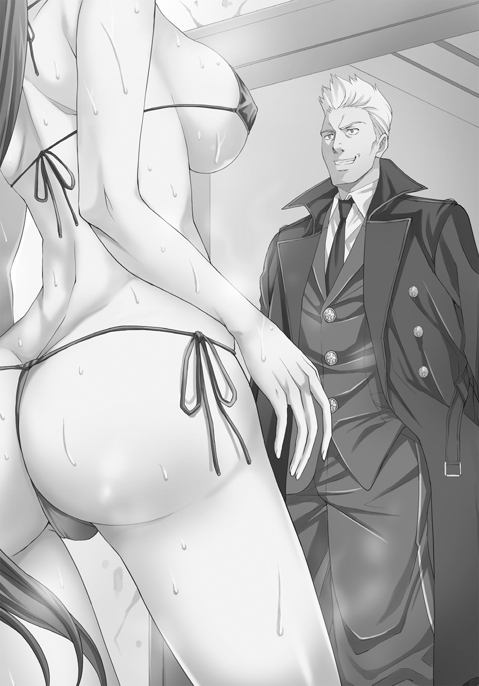
そして手首を振ると、いつの間にか例の「蒸気精霊杖」が握られている。
「はいはい、長い付き合いなんだからいいじゃないか、触るぐらいで減るものじゃなし」
「減る、お前が触ると減る」
「寂しがり屋のくせに意地っ張りなところは変わらないんだな」
「五月蠅い」
そんなやりとりをして離れると、パーシィはタグルたちに男性を紹介する。
「タグル、アワセ、こいつはレッド・リーコン――――私と同じ『イコライザー』だ。外見は私や君たちとよく似てるが、サルリーンという雌雄同体の宇宙人だ。気に入れば男女の別なく孕ませるし、孕むから注意するように」
「は？」
思わずタグルと泡瀬は同時にパーシィの言葉を聞き返した。
男だから孕ませるというのは判るが、孕むというのはよく分からない。
「わははは、ユーモアだよ、パーシィのユーモアはいつもわかりにくいから。長広舌の蘊蓄垂れだし」
と颯爽と金髪の好青年は笑った。
「ユーモアなんかじゃない」
じろっとパーシィが横目でレッドを睨む。
「またまたぁ。パーシィは寂しがり屋さんだからなぁ」
「貴様、何を言うか！」
真っ赤になって反論するパーシィは兄にからかわれる妹そのもので、いつもどこか「お姉さん」っぽく振る舞おうとしている彼女とは違って、タグルには新鮮だった。
「へえ......」
そして、タグルは初めて見るパーシィ以外の「イコライザー」の存在と、ふたりのあまりの親密さぶりに戸惑いつつ、それでも「沙汰内類です」と自己紹介する。
「こちらは高校生のサタウチ・タグル。そしてセソコ・アワセ、タグルのクラスメイトで『暁』という私の監視機関のメンバーだ」
「あ、いえあの、ど、どうも......」
秘密組織の一員であるという素性まで一気に紹介されて、泡瀬はタグル以上に戸惑いながら頭を下げた。
「やあ、俺はレッド・リーコン。君がパーシィの新しい相棒？」
そう言ってレッドはタグルに握手を求めた。
「あ、いえ......えーと、そうなの？」
パーシィに尋ねると、
「まあ、それで......いいんじゃないかな？」
ちょっと横を向きながらパーシィが答えた。
「......だそうです」
「なるほど、今度はずいぶん早く決まったものだね」
「まあ、スウィムウェンがらみで色々あってな」
「あいつら、まだこの辺の時空をウロチョロしてるのか？」
「むしろ出会う度に数が増えて凶暴化してる印象だ」
「そうか......タグル君、彼女はフーヴィアンだから、『ドクター・フー』の蘊蓄を山のように聞かされるから覚悟しておきたまえよ」
いつの間にかタグルの手を取って握手し、がっしりハグしながらレッドが言った。
「あ、はい」
筋肉でよろわれた肉体に包まれる圧迫感と、鍛え上げた筋肉の意外な柔らかさに目を白黒させるタグルは、先ほどのパーシィ同様、自分の背中から腰まで丁寧にレッドになで回されたことに気づかない。
そしてレッドはタグルを解放すると泡瀬の方に向き直った。
「なるほど......で、君が秘密機関のメンバー？ ずいぶん若いねえ？」
「あ、いえ、あの......」
「日本の秘密機関は何処の世界でも若い女性を起用するのが上手いなあ」
「？」
そして泡瀬のほうも握手され、気がつけばハグされている。
「君、タグル君のことが好きなの？」
「！」
耳元で囁かれて硬直する泡瀬の動揺をいいことに、レッドはここでも彼女の腰回りを触ってから離れた。
「ちょっと来いレッド」
離れたレッドをパーシィが引きずって店の隅に移動する。
「レッド、彼らは駄目だぞ」
パーシィがすかさず小声でレッドに警告した。
「ふたりともそういうことには早すぎる！ この国には特に厳しい法律があるんだぞ、判っているのか？ 『イコライザー』は現地の法律を遵守する、それがポリシーだろう？」
「判ってる。ふたりとも君同様まだ清い身体だ。大事に愛でよう。綺麗な若木だ。こういうのを『猪鹿蝶』とか言って日本人は『風水』だと言うんだろう？ バショーのワビサビだな、うん、トランティニヤン」
「話をはぐらかすな！」
「............この時代までの青少年は世間がなんだかんだ言っても一部の例外を除いてウブでいいなぁ。あの青くて硬い肉体は今だからこそだぞ。ああ、ベッドの上でどう反応するか楽しみだよ、うん」
さっきまでの感触を反芻しているのか、ニコニコしながら両手を揉みつつ、パーシィの方を見ようともせずにレッドが同じく小声で返す。
「人の話を聞け！」
「あと三年ぐらい待てば俺の好みの年齢になる。それまで待つさ。あのふたりとなら妊娠してみたい。きっと可愛い子が生まれるぞぅ」
にこにこと言うレッドに、
「――――お前のそういうところがついていけない」
パーシィは珍しく溜息をついた。
「君は『イコライザー』のくせにこういう部分で常識に囚われすぎる。もうちょっと俺みたいに自由になれ。楽しいぞ。温かいし、気持ちいいし。何よりも寂しくなくなる」
「お前の脳の中にある意志決定領域を、社会良識の檻の中に永久につなぎ止める方法をそろそろ見つけないといかんな。このさい灼けた針金を使う脳外科手術でもいいから」
「まあ、それよりも、だ」
パン、と手を叩いて、レッドは真面目な顔になり、
「この時代から妙な時空震動を最近感知したんだが。何があったか心当たりはないか？ おかしな事件とか、国際情勢が急に動いて大規模戦争が始まりそうだ、とか」
「そんなに大きな戦争なのか？」
「ああ。第二次世界大戦規模だ。大々的な時空改変が起ころうとしてるのかもしれん」
「まってくれ、この時代は向こう五十年、そんなことはもう出来ないはずだ」
「だからこそ、絶対時間計が妙な動きをしてる、と言っただろう？」
☆
「ろすてぃに屋」店内から「ロスティニア」船内へ。
パーシィはさっそく「本日臨時休業」の張り紙を棺桶型ドアに貼り付けると、「ロスティニア」の操縦室に移った。
「そういえば、このところスウィムウェンを追い返したり、この店を開くドタバタでこの時代がどうなってるかは見てなかったな」
パーシィはそう言いながら操縦室正面にある大型モニターに分割してニュースを映す。
日本国内だけではなく、世界各国のものも画面に出して、一斉に音声を流した。
「............こんなに日本語で世界各国のニュースって流れてる？」
タグルが首を傾げると、
「いや、それは君が一度時間旅行をしたからだよ。脳の言語野が対応して言語や文字の意味を自動翻訳してるんだ、しばらくは......二カ月もすれば普通に戻る。だが便利だろう？ 文字もそのままで意味は理解出来るし、慣れてくると新聞を一度読めばその国の言語をある程度書くことも出来る。文学的に美しいかどうかはともかく、短文ぐらいならＯＫだ。おかげで君と私は会話が出来る............もっとも私はちゃんと日本語を話しているのだがね」
「あ、それでこの前の中間試験、英語の点数良かったのか」
ぽん、と手を打って納得するタグルをよそに、パーシィは目を見開き、「杖」を輝かせると画面と音声を早送りにした。
数分後。
「ま、大体の近況は判った」
とパーシィは日本のニュース番組をひとつだけ映して他の画面を消した。
速度も通常に戻している。
「しかしまあ、株価に三面記事、芸能ゴシップ、世の中の四割は平和だなぁ」
パーシィが呟いた。
「そうかなぁ？」
タグルとしては首を傾げざるを得ない。
「世界の四割............特に日本は、よその国が戦争やら紛争やらで大騒ぎなのに、飢え死にする人が出るとニュースになるほど珍しいし、それを見過ごした行政は国際社会の恥だと言われる、ここまで暢気な国と時代は珍しいよ、実際」
「そう言われれば確かに」
「ほんの七〇年前まで、この国で飢え死には珍しい死に方じゃなかった。食事が出来ても、中に入っていた爪楊枝で死ぬ、なんて例もあったぐらいだ」
「爪楊枝？」
「高級ホテルや高級食堂から出る残飯を雑炊にして売る商売が昔はあって、東京に住む人間の何割かはそれを食べて生きてた......私も食べたことがあるぞ。で、用心しないと中に爪楊枝や折れた箸の一部が混ざっててそれが喉に刺さって死んだりした」
「！」
「今でも世界の何割かはそうやって飢えをしのいでるところがあるんだよ」
ぽかんとするタグルの横でレッドも頷く。
「たしかになあ、俺も『イコライザー』として言えることは、この国と個人の状況に限って言えばどんなに現状が悲惨に見えても、過去の方が良かったことはまずないね」
うんうん、とレッドが頷いた。
「............なんかホッとするような、不安になるような......」
「まあ、未来は信じるものだ、ということさ、タグル」
「そういうことで納得しとく」
そしてパーシィは再び画面と音声に意識を集中して黙り込む。
ちょいちょい、とレッドがタグルの袖を引っ張って耳元に囁いた。
「ところでタグル、パーシィは相変わらずドーナツ中毒か？」
「あ、はい、ええ、毎日食べてます」
「俺は随分前から言っているんだが、君からも忠告しないといかんよ、パーシィのドーナツの食べ方は異常だ。毎日三キロでも喰う」
「え？」
「いや本当だ。一度それで栄養失調になって倒れた。遺伝子調整されたアークエルフだから、確かにドーナツばかり喰ってても病気にはならないが、限度はある。たまには君の手料理を食わせてやるといい。そうすればパーシィはコロッとなつくぞ。彼女、手料理に弱いからな。特にできたての手作りドーナツを喰わせてみろ、テーブルの上でタップダンスを踊りながら喜ぶぞ？ いや本当」
「レッド、勝手に人の隠し設定を作るな。ちゃんと聞こえてるぞ」
そんな話をしていると、テレビの中のニュースキャスターが、
「本日、あのメッセンジャーアプリケーションの王者、ＬＩＶＥ‐ＩＮを蹴落として世界一のシェアを獲得した『シルバーバニー』の制作者が緊急来日しました、その理由は？」
と思わせぶりな口調とＢＧＭと共にＣＭ明けの予告ショットを映し出した。
「アメリカ人美少年、プルキム・メルキオール・バニオンくん来日！」
の文字が躍り、性別の判らない美貌をもつ十代の若者と、秋葉原や新宿などの街並みを背景にした画面の中。
「！」
タグルの目が丸くなる。
「パーシィ、今の............」
「見た、間違いない、アレだ」
「なんだ、彼も知ってるのか、アレを」
――――とその時、
「戻りました！」
もうひとりの「イコライザー」出現の報告と、レッドのための追加のアイスを購入するために近くのコンビニに行っていた泡瀬が戻ってきた。
そんな彼女に「良かった、泡瀬さん、待ってたよ！」という嬉しい言葉がタグルよりかけられた。
「ど、どうしたの？」
「こっち、こっち、これ！」
急いで手招きされて、パーシィが見入っているモニターの画面に目を向ければ、そこには彼女にとっても縁浅からぬ「もの」が映っていた。
白い肌、耳の下あたりまでしかない金髪のショートヘア。
そしてスクール水着にニーハイソックス。
「スウィムウェン......」
間違いなく、この前、公園で自分たちを襲ってきた相手そのものだった。
その時と違うのはこちらは太腿から下がちゃんとある「完全版」であり、スクール水着が真っ白なことと、前髪の赤いひと房をのぞき銀色だった髪が全体的に金色になったことぐらい。
「スウィムウェン」はテレビ画面の中で、高級ホテルの一室に直立不動でいた。
『これは、一体なんなんですか？』
日本語で聞くアナウンサーに、金髪碧眼の美少年は細く長い脚を優雅に組み替えながら、にこやかに答える。
『これが私の日本に来た最大の目的です、よく出来ているでしょう？ これはただの人形ではありません、ガイノイド......日本で言うところの女性型アンドロイドなのです。ねえ君、そうだよね？』
少年が語りかけると、「スウィムウェン」はこくりとぎこちなく頷き、ゆっくりと数歩歩いて軽くジャンプし、くるりと一回転したあと、カメラの前で一礼した。
『ハジメマシテ、ワタシ、ハ、あんどろいど、デス』
たどたどしい合成音はしかし、タグルたちの知るスウィムウェンの野太い声でも、リーダーの少女の声でもなく、辛うじて「女性」と認識できる程度の高音の音声だ。
『これは......』
女性レポーターが啞然とする。
会話するのはともかく、未だ世界において、人と同じようにジャンプし、着地後一回転するほどの性能を持つ二足歩行ロボットは夢のまた夢だ――――それを、どう見ても人間にしか見えない少女型ロボットはサーボ音をさせながらやってのけた。
『まだ正式名称は決まっていません。私はこれを日本のとある下町の工場のホームページで発見し、何が何でも広く世界に売り出すべきだと感じました。今回の来日は『シルバー・バニー』で得た全ての資産をこの少女型アンドロイドの一般販売という一大事業に注ぎ込むためなのです』
『しかし、この外見というのは、その......』
女性レポーターの複雑な表情を、プルキムは笑い飛ばした。
『あなた方日本人は恥じるかもしれませんが、我々外国人にとってはこの形態こそが興味深く、求心力のある外観なのです。もちろん、こうなったのには理由があります。このタイプはまだ試作型です。将来的には成人女性、成人男性など、様々なバリエーションを製造販売する予定です』
『具体的にはどういう目的でこれを......』
『決まっているじゃないですか』
にこやかな笑顔で少年は答えた。
『世界平和と人類への貢献のためですよ。介護補助、話し相手、家事手伝いの一切......人は日常の細々としたことから解放され、本当の『やるべき仕事』のみに集中する時間を得ることが出来るのです』
『は、はぁ......』
あまりに気宇壮大な言葉に明らかに圧倒されて戸惑うレポーターは、中継時間の終了をヘッドホン越しに告げられたらしく、「では最後にバニオンさん、日本の視聴者にメッセージを」とまとめに入った。
少年は物怖じせずにカメラに向けて何か喋り始めたが、パーシィはその顔をじっと見つめたまま、音声を消した。
「アワセ、このプルキム・メルキオール・バニオンというのは何者だ？」
「知らないの、パーシィ？ これだけの有名人なら歴史に名前が残っているんじゃ......」
タグルが驚いて尋ねると、
「私の知っている歴史には登場しない名前だ」
パーシィは顎に手を当てて考え込む。
「つまり、この世界の歴史は歪み始めている可能性があるということだ............『ロスティニア』の時間航行機能が回復していれば絶対時間計でわかるんだが」
「たまたまパーシィが知らないだけ、とか......」
「あり得ない。この時代のことは結構深いところまで知ってるつもりだ。特に文化と芸術、テクノロジーに関しては。何しろこれからの三〇〇年の人類の行方はこの数十年で決まる」
「へえ......」
素直に感心しているタグルの横で、泡瀬は顔を引き締めた。
「プルキム・メルキオール・バニオンは、表向きはシステムエンジニア、そして五年前に亡くなった女優のエミリア・バニオンの養子。十歳でＭＩＴを首席卒業、以後ＦＸ取引とコンピューターネットワークシステムの開発で財を成した......ってことになっています」
「なってる？」
パーシィの片眉が上がった。
「彼の経歴はその八割がよく出来た偽装です。細かい資料は山とありますが、諜報関係者が見れば一発で判ります」
「よく知ってるな？」
「実は今日、『暁』の本部であなたに相談しろと言われた特殊懸案事項がそのプルキムのことなんです――――詳しいことはこの中に」
そう言って泡瀬は革ツナギのポケットからメモリスティックを取り出した。
「ふむ」
パーシィはそれを受け取ると、いつも通りどこからともなく出した「杖」の先端の端子に挟み込み、杖を光らせた。
「なるほど」
鼻掛け式の単眼鏡になにやらめまぐるしく数字や写真が流れていくのがタグルの側からは見えるが、さてパーシィがどうやってその速さで流れる情報を認識しているのかは判らない。
「アメリカ国家安全保障局がらみか............しかし、なんでスイムウェンが？」
「あ......ひょっとして、スウィムウェンって地球で作られた、とか？」
タグルの言葉に、パーシィは首を横に振った。
「そんなわけはない。私は奴らがあの姿に変化する瞬間に立ち会った......どういうわけであれを『地球人に対抗する最強の姿』と結論づけたのかは未だに謎だが、それまではもっとこう......なんていうか......うーんと......いや、まあとにかく、人間の姿はしてなかった」
「なるほど」
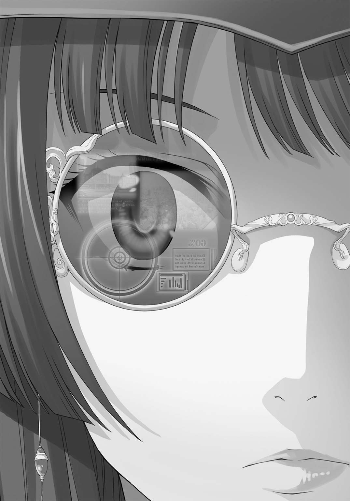
「で、もう一つのファイルの中身ですが......」
「それがとりあえず差し迫った問題だな」
「どうしたの？」
「『スウィムウェン』がヤクザと国内にいるマフィアとの抗争に使われてるらしい。とある町工場から流れてきた『兵器』としてな」
「は？」
「もう推定七〇〇人近くが犠牲になってる。最新は今朝だ......つまり、あのスウィムウェンはプルキムの横に立っていた一体だけじゃない」
「つまり『スウィムウェンに似たアンドロイド』をアメリカ政府が作ってるってこと？」
「スウィムウェンの残骸がまだ他にもあって、そこから再生したんでしょうか？」
「それはありえない。この前の事件のあと、あれこれ調査したが他にスウィムウェンの残骸はなかった。焼け跡の質量的に見てもあれきりだ......ネジぐらいはあるかもしれんが、そこから再生するとなればまた時間がかかるだろう」
「偶然そうなっただけ......とか？」
「偶然には必ず不具合がある。この偶然には不具合がなさ過ぎる」
タグルの言葉にパーシィは言い切った
「こういう場合必ず、どこかで二つの事象が繫がっていて、それが細すぎて見えなかったりするから偶然に見えるだけだ」
「説得力があるような、ないような......まあ、とりあえずこれがおっかないものなのは間違いないよね？」
「少なくともこの数日で数百人が行方不明になって、同じ頃、その数百人のいた場所の街頭カメラや、個人撮影の動画にこの『スウィムウェンそっくりなアンドロイド』が映っているのは事実です」
泡瀬の顔は少し強張っていた。
今回は装甲強化服なしであの怪物と戦うことになると考えているのだろう。
「どちらにせよ、『暁』はこのアンドロイドを危険だと認識しています。日本政府やアメリカ政府は違うかもしれませんが」
「なるほど」
パーシィはニヤリと笑った。
「そういう意味では協力出来そうだな」
「上層部は期待していると思います」
まっすぐこちらを見つめる泡瀬に「せいぜい頑張らせてもらおうか」と肩をすくめ、パーシィは、
「プルキム・メルキオール・バニオンの足取りはともかく、今回の来日の日程はいつ、どこでどう決まった？」
と尋ねた。
「来日は唐突です、少なくとも日本の外交関係筋に話が来たのは今から七二時間前、ホテルが決まったのは入国して二時間後」
「じゃあ、来ていきなりホテルを取ったの？」
「彼、ゴールドラインカード持ちだから、国内でどんなホテルでもロイヤルスウィートを案内してもらえるもの」
「クレジットカードの中でも最高ランクに位置するカードだ。真っ黒なカードに金のラインが入ってる、世界中あらゆる場所で使える上に、上限はない。たとえタグルでもそのカードを持っていれば惑星ひとつ......は未来の話だったな......そうだな、ふらりと秋葉原にやってきて、駅前のビルを全て買う、と言ってもＯＫだ」
「へえ......でも、結局翌月からローンで支払うんでしょ？」
首を傾げながらきょとんと言うタグルに、パーシィは吹き出した。
「ははは！ その通り、タグルは賢いなぁ」
そう言って手を伸ばし、タグルの頭を撫でる。
「なんか馬鹿にしてない？」
「いや、本当に賢いと思うぞ。そうだ、ゴテゴテと権威というオマケが付いてくるが、結局は借金が無限に出来るというだけのことだよ」
と微笑み、パーシィは泡瀬のほうを見て慌ててタグルの頭を撫でていた手を離した。
この前うっかり「キスをした」と口を滑らせて以来、どんなに「ふたりのことを応援するぞ」と言っても泡瀬は「暁」の工作員としてはともかく、恋する女性としてはパーシィを疑いの目で見ていた。
「そ、それでアワセ、その荷物の中にスウィムウェンが入りそう大きさの貨物コンテナとか、スーツケースはなかったか？」
「税関にあんな大きなものを通したという記録はありません、パスウィダー」
「......だとしたらバラバラに持ち込んで組み立てた？」
「彼は手ぶらで日本に来てるわ。本当にその日、いきなり飛行機に乗って日本に来たの」
「ホテルの人の出入りだ。監視カメラの画像が欲しい」
「判りました......ここにパソコンはありますか？」
「初代Appleなら......いや、冗談だ。泡瀬......ではまずいな。タグル、携帯電話を持っているか？」
「スマートフォンだけどいい？」
「大歓迎だ」
☆
「ロスティニア」の起動となれば、コックピットはパーシィのひとり舞台だ。
「ちょっとふたりとも待っていたまえ、すぐに準備するから............レッド、手を貸せ」
「やれやれ、相変わらず全部ひとりでやってたのか、君は」
パーシィとレッド・リーコンのふたりが忙しく走り回り、あうんの呼吸であちこちのレバーを引いたり押したり、ダイヤルを回したりをする様は、どことなくパントマイムの演者に見える。
主役がパーシィたちなら自分たちはここでは観客か、黒子だろうな、とぼんやり泡瀬は思った。
なら、今は幕間で、ここは舞台袖ということになる。
「......泡瀬さん、大丈夫？」
まだわたわたと走り回るパーシィを一緒に眺めながらタグルがそっと尋ねてきた。
「え？」
「なんかちょっと疲れてるみたいだから」
「あ、いやあの、そんなこと、ないから......それに、その服、暑くない？ 脱水症とか」
「いや、だ、大丈夫だから」
泡瀬は真っ赤になった。
そうなると、ぴったり合わせた革ツナギや髪の毛から、汗の匂いを感じて、泡瀬はやはり着替えてくるべきだったと後悔する。
いっそ、パーシィに頼み込んでこの船のシャワールームを使わせてもらい、何か着るものを貸してもらおうかと思っていると、
「よし、これでＯＫ！」
パーシィが最後のレバーを引き、コンソールの一角がスライドした。
様々な配線がむき出しになったそこへタグルの携帯を納めると、蓋が閉まる。
それからパーシィはコックピットの壁に埋め込まれた金色の金属で出来たキーボードを支えるアームごと取り出し、泡瀬に向ける。
「正面がディスプレイだ、暗証番号を打ち込む間は横を向いているから操作を頼む」
「あ、はい」
慌ててキーボードを打つと、ちゃんとパーシィは横を向いていた。
「アクセスしました」
簡素な画面に東京の某高級ホテルの監視カメラ画像が出る。
先ほどテレビで見たばかりのプルキム・メルキオールが本当にパスポートと財布と携帯電話以外は何も持たずにチェックインする様子が映る。
「当日のこのホテルへの宅配は三六件、うち十一が手荷物、二五が小包、行き先は半分が客室、残りがホテルへの預かり、もしくは業務上必要な書類、食品などで、電子機器の配達はありません」
「顔認証プログラムは入っているかね？」
「ええ」
「じゃあ、荷物じゃなくて人を探せ」
「人？」
「歩いて入ってきた可能性もある」
「まさか？」
「スウィムウェンはスクール水着しか着られないわけじゃない。上から服ぐらい着用できる......その上でカツラを被ればもう判らない」
「了解しました、パスウィダー」
「通信、通話記録は？」
「ＮＳＡの保護下にある人物だから触れません、パスウィダー」
「ふぅん......じゃあ、ハッキングしよう」
「簡単に言う......いや、言えるんだっけ、君の場合」
「その通り」
笑ってパーシィは杖を取り出した。
握り部分の宝石が割れて端子が露出する。
「あー、一応警告しとくが、以前それで君、三秒で探知されてＮＳＡの特殊部隊にマークされてなかったか？」
あきれ顔のレッドの突っ込みに、
「安心したまえ、あれはここじゃない未来の話だ――――さあ、アメリカ合衆国の秘密の扉を開けるぞ！」
そう宣言し、パーシィは杖の先端を床に突き刺した。
☆
プルキム・メルキオール・バニオンはゆっくりとベッドの上に起き上がった。
壁に掛かった姿見を見ながら、頭髪の位置を直す。
インタビューを終えた後、仮眠を取って時差の埋め合わせをしたのだ。
インド系の血が二〇分の一入った端整な顔立ちは、男女の性別を超えた美しさを持っていて、過去のいきさつをあまり知らない人間からは「お母さんのエミリーそっくり」と言われて苦笑する羽目になることが多い。
その目が追憶に細められる。
『日本は良いところよ。いつでもママを忘れずに迎えてくれるの』
最後の一年、めっきり酒量の増えた母がよく言っていた。
『こんなにぶよぶよになった身体でも、まだ私をヒロインとして見てくれるの』
母は腹筋のなくなった腹をつまんで笑ったものだ。
そして事実、母が亡くなって一〇年が過ぎても、来日早々インタビューの申し込みに来たテレビ局のディレクターはエミリア・バニオンの名前を口にした。
『あなたのお母さんのファンです、今でも』
本来なら危険だから予定のなかった日本のマスコミのインタビューを受ける気になったのはそのひと言だった。
もしくはまだ少し罪悪感があるのかもしれない。
母が好意を持っていた国に、これから自分たちが起こすことに対して。
「ママ......僕はそれでも、やるよ」
プルキムは呟いた。
そして、視線を部屋の片隅に立ち尽くす、母とは似ても似つかぬ細い、ちいさな人影へ。
タグルたちが「スウィムウェン」と呼ぶスクール水着を着用した少女型アンドロイドは身動きせずにその視線を受け止めていた。
そして、プルキムはその隣の影へと目を移す。
少女型アンドロイドよりも頭一つ半は背が高く、圧倒的なグラマラスさを誇るような身体のラインを持つ影へ。
「そう............ママのために」
そんな天才少年の真後ろ、ベッドの上で、いつの間にか銀色のウサギが後ろ足だけで直立しているが、少年はおのれの追憶に気を取られて気づかない。
☆
過去二週間の通話記録は全てアメリカ本国のＮＳＡ本局と彼の経営する会社へのもので、数十秒にも満たない。
Ｅメールも数行で、単なる業務連絡ばかりだ。
「意外と友達の少ない奴だな......いや、よっぽど用心深いんだろうな」
パーシィは光を消した「杖」を床から引き抜いて溜息をついた。
「なんとなく定年間際のスパイの通話記録と似てるな。家族も親友もなく、ひたすら関係各所と本部に連絡をしてるだけ、っていう......」
「そういうものなの？」
「少なくとも七〇年代の冷戦真っ盛りのころのスパイは......まあいい、とりあえず次はプルキムが泊まる前に誰がこの部屋を、いつ借りたか、だな？」
「ホテルの宿泊記録を調べます、パスウィダー」
すぐにその人物は見つかった。
「ロシア情報局のエージェントか......協力する可能性は低そうだな。そうだ、その後に部屋の模様替えとかしてないか？」
「......このエージェントが出立した翌日に大々的にやっています。壁紙も貼り替えるような大がかりなもの......恐らく、盗聴器とかの回収でしょうか」
「まあ、宿泊者が他の宿泊者に対して仕掛けて帰る場合もあるからな。これぐらいの高級ホテルなら、三年ぐらい待ってればＶＩＰの弱みがつかめるかもしれないし」
「情報機関って、そんなに気が長いんだ......なんかすぐに盗聴したり爆破したりして速攻で終わらせてるイメージだけど」
「映画と違って、現実のスパイは今も昔も地味でせせこましいことの繰り返しだよ、タグル。アワセが私を待っていたのと同じ理屈だ」
そう言いながら、パーシィは泡瀬がスクロールさせている画面を見つめ「止めてくれ」と手を上げた。
「これだ............業務用エアコンが三台になってる。取り外されたエアコンは二台、交換された設置金具も二台分」
「つまりその三台目のエアコンが......」
「スウィムウェンの『包装用紙』だ............アワセ、この業務用エアコンがどこから来たか突き止められるか？」
「はい......荒川にある町工場のうちの一件から直接出荷されていることになっています」
「これは偽装だな。こんな簡単に判るようにはしない............その町工場の持ち主と、金主を探れるか？」
「今すぐは無理ですが『暁』本部に頼めばおそらく......」
「じゃあ頼んでくれ、大急ぎだ。恐らくこの工場に荷物を届けた奴がいる。そっちが本命だ......多分。アメリカの情報機関はどこも大がかりなトリックが大好きだからな」
「了解です、パスウィダー」
そう言って泡瀬は自分のスマートフォンを取り出して電話をかけた。
「さて、あとはもう一つの事案だな。胸が悪くなりそうだが」
「？」
「都内で見かけられた、ゴロツキ共の抗争に用いられたスウィムウェンの追跡だよ。このふたつの線が交差するところに真相がある」
「でも、死体が出てないんじゃ警察はアテに出来ないんでしょ？」
「オマケにゴロツキ同士の抗争だ。共倒れを狙ってるんだろう......だが、ある程度決着がついたところで残った方を潰すための情報収集は警察も公安もやってるはずだ」
「公安って国内のテロリストとか、国や政府を相手にする犯罪だけを扱ってるんでしょ？」
「とはいえ、点数は稼ぎたいだろうし、スウィムウェンが反政府組織にわたれば脅威どころじゃないという建前もある............ただし、警察と公安は互いにいがみ合うように作られてるから、情報はバラバラ、共有はされてない......そこが我々の付け目だ」
「付け目？」
「国内の邪魔がふたつ減る上に、正確な情報が手に入る。何しろ互いに批判的な組織が集めたひとつの事象に対する情報だからね」
「へえ......」
そうこうしているうちに、パーシィは電話をしている泡瀬をよそに、ひょいひょいとキーボードとマウス代わりの指先で情報のタブをいくつか開いて同時に自動スクロールさせ始めた。
「これでよく読めるね」
「ようは慣れだ、タグル............しかしこれだとますます謎だ。どう考えても二〇体のスウィムウェンもどきが同時刻に行動して、少なくとも毎日五〇人前後の人間が行方不明になっている............タグル、生き物が死ぬと残るのは？」
「――――死体？」
「正解だ。成人男性ひとりの死体を完全に消し去るには苛性ソーダが三〇リットルと十二時間という時間が必要だ。その後残った苛性ソーダを流し、骨を砕いて大体ひとり頭二〇キロ前後は残る。奴らに殺されているのは毎日五〇人、それがかれこれ二週間続いてる」
「えーと、五かける七で三五〇で、さらに二倍の......七〇〇人？」
「死体をどう処理しているんだろうな？ あれがスウィムウェンそのものの仕業だとしたら、奴らは死体を残すことに躊躇なんかない」
「まあ、奴らにとって死体の利用方法なんてないからな。頭悪いから生体部品の利用とか考えないし」
何度か戦ったらしいレッドが頷く。
「映画みたいに始末する人たちがいる、とか？」
「それでもこれじゃあ工場が必要だ......で、半分の件数は繁華街のど真ん中で、銃撃戦らしい騒ぎを聞きつけて警察がやってきた頃には壁の血しぶきや弾痕、破壊された家具以外は何も残ってなかった......通報してから駆けつけるまで五分もかかってない」
「死体を消しちゃうほどの高温のレーザー......じゃないよね？」
「それなら火事になる......だが、私にもこの時代に合ったこれだけ大量の死体の始末の方法が判らないということは、人類にとってはかなり驚異のテクノロジーが使われてるってことになるな」
「だよねぇ......ところで、あのアンドロイド、スウィムウェンだったら、やっぱり見つけたら破壊するの？」
タグルが尋ねる。
「――――ああ。もしもそうだったとしたら、いや、そうじゃなくても殺戮兵器としてのアンドロイドは人類には時期尚早過ぎる」
パーシィは溜息をついた。
「ロボットはもっと......そう、夢のあるものであるべきだ。アジモフのＲ・ダニール・オリヴォーとか、テヅカ・オサムのアストロボーイやフジコ・フジオの青い猫型ロボットとか、ユウキ・マサミのＲ・タナカイチロウみたいにな。のっけからゴーレムやターミネーターでは、ニューヨーク万博の時のロボット技術者たちが夜泣きする」
「でも、結局開発されるんでしょう？」
「一〇年早いか、遅いかの違いでも、その間生きていける人たちがいるんだ、それは大きい」
「一〇年後なんだ」
「......もののたとえだ。実際には......まあいい。とにかく、これで下調べはおしまいだ、さっさと会いに行こう。金髪の天才美少年のところにね！」
「了解です、パスウィダー」
「タグル、一緒に来るか？」
「もちろん！ ......で、この船で行くの？」
「悪いが、ウチの船は燃料切れだ、誰かさんの船と違って小さいからな。あと半日は動けないぞ」
レッド・リーコンが溜息をつくのに、
「そんなことは判ってる。甚だ遺憾だが、外へ出よう。歩いて電車を乗り継いで、あとはタクシーで行く」
言ってパーシィは「ロスティニア」船内から「ろすてぃに屋」店内に戻って入り口ドアを開けた。
「うわ！」
慌てて戻って後ろ手にドアを閉める。
「なんだ、この暑さは！ さっきよりも暑くなってないか？」
「関東一円、どこも軒並み三九度だって言ってるじゃないか」
「これは異常だ、天気まで異常だ.........」
溜息をつく。
「車を出します、パスウィダー」
苦笑して、泡瀬がスマートフォンを取り出した。
☆
プルキム・メルキオール・バニオンは軽い食事をとって、深々とソファに腰掛けた。
携帯電話が鳴る。
「ええ、判ってますよ将軍。彼女が動き出したんでしょう？ ええ、待ち受けていますよ。彼女が必要ですから――――何もさせないために」
そして、ノックの音がした。
「ええ、今、来たようです............どうぞ、鍵は掛かってない！」
「今日は是非、入っていい？ と言ってみたかったんだがな」
ドアを開けて、パーシィがマントのようにコートの裾を翻して入ってきた。
おっかなびっくりという感じでタグルが続き、最後に泡瀬が堂々と革ツナギにスーツケースをさげて入ってきた。
「あなたのことは知っている、お友だちふたりもね」
プルキムは立ち上がって三人を迎え入れた。
「護衛がだれもいないから怪しいとは思っていたがね」
案内も乞わず、ずかずかと中に入ると、パーシィは応接セットの三人掛けのソファにどっかと腰を下ろした。
ちらりと視線を部屋の片隅に立つ「スウィムウェンもどき」に送り、
「あれが何か知っているのか？」
「ああ、知っている。我々はＡＪ４型ガイノイドと呼んでいるよ............君がこの前対決したまるっきり同じ外見のアンドロイドとは別物だ、調べてごらん」
「............」
パーシィは立ち上がるとつかつかと「スウィムウェンもどき」に歩み寄って杖を輝かせ、首をひねった。
鼻掛け式の単眼鏡に嵐のように情報が流れていくのがタグルからも見える。
「なるほど、確かに外見と能力はほぼスウィムウェンなのに、細かい造形と中に入っているＯＳはかなりお粗末なものだな」
その瞬間、プルキム・メルキオール・バニオンの顔が、怒りに引きつりそうになったのをタグルは見た。
システムエンジニアということは、パーシィの言う「お粗末なＯＳ」を作ったのも彼に違いない。
これまで見てきた「優秀」と言われる同年代の少年や少女は、否定されると一気にカッとなって怒りを抑えられなくなる存在ばかりだったので、タグルは素直に感心した。
単にプライドが高いだけではなく、この少年は「大人」なのだ、と。
「ひょっとして、彼女たちをモデルにして偶然作っただけなのか？」
「いや、君たちやスウィムウェンの存在を知ったのは先週だ。その頃にはすでにこれの一〇〇〇体目がロールアウトしたところだったよ」
「どこでだ？」
「テレビを見ただろう？ あれは日本のとある下町の工場が開発したもので、来年、我々が世界規模で高機能介護ロボットとして発売するって。来週からその町工場はサクセスストーリーの舞台になる」
「そんな町工場は存在しない」
ここへ来る途中、カレンの運転する車の中で「暁」からの報告を受けていた。
すべてペーパーカンパニーであり、工場も、社員も存在しない。
「ああ、存在しない」
プルキムは不敵な笑みをタグルたちに向けた。
「すべて偽装だ......あれを実験するためのね。実地試験だ――――ＡＪ４型ガイノイドの能力と威力と基礎資料を得るためのね。兵器はやっぱり実戦をかいくぐって改良しなくちゃ」
「自分の国でやれ。君の国はそもそもあちこちで戦争をしているじゃないか」
「戦場で試験を行えば敵国にデータがわたりやすくなる。それは困る。我々は未来の戦争............そうだな、都市部における密かなテロの排除にこれを改良して使いたい」
意味がわかるかな？ という顔で美少年はパーシィを眺めた。
「もう、大砲を撃ち合い、戦闘機を飛ばしてミサイルを撃ち込むタイプの戦争をしていれば何とかなる時代は終わりだ。並行して二つの戦争を、レイヤーを重ねるように展開する必要があるんだ。その戦いにも我が国は勝たなくちゃいけない」
「で、そのためにこの国で実験か？」
「理想的な国なんだよ、日本は......そして、新宿は日本の中で最も軍事ロボットの実験に適した場所だ。裕福で、ビルがあって、様々な人間がうごめいていて、国全体の治安がいい。大規模な戦闘を繰り広げていても、起こる半径が決まっていればすぐさま修復される......そして国民性は従順で潔癖症。社会的悪と見なされた存在に対する冷淡さは我が国以上だ」
「な......」
パーシィの座るソファの後ろで、思わずタグルが口を開きかけ、黙り込んだ............腹は立つが、確かに事実だ。
この再生力と社会的モラルの高さは後腐れない兵器実験には格好の場所であるのだろう。
だが、腹は立つ。
自分の感情をもてあましているタグルに、プルキムは構わずに話を続ける。
「テロルの時代だからね、他の国ではこういう『実験』は出来ない。貧しすぎてビルもないか、混乱が収まらずに国連が動くことになるか、どちらかだ」
「............で、よくできた法治国家の、しかも社会悪と見なされる存在同士が殺し合う分には構わないじゃないか、といいたいのか？」
「さてね」
プルキムは肩をすくめた。
「判っているのか。犠牲者の中には、その連中の家族も、子供もいたんだぞ」
「そこは次のバージョンから改良するさ」
笑うプルキムの顔が強張った。
「そういう問題じゃなかろう」
エアコンの冷房ではない冷気のようなものを、タグルは自分のすぐ側から感じた。
こちらに背中を向けているパーシィから放たれている気配。
「どうするつもりなんだ？」
「我々はこのガイノイドを戦争を終わらせた後は本格的に世界平和に使うつもりだよ。戦争のない、犯罪にすぐ対応出来る平和な世界のために」
「それは管理国家とか、警察国家とか呼ぶべきものじゃないのか？」
「視点にもよるね......一般民衆はパンとサーカスがあればいい、とローマ人が言ってたよ。パンは仕事、サーカスはインターネット回線でなんとかなる」
沈黙が降りた――――空虚なやりとりは、もう終わりだという意味の。
「プルキム・メルキオール・バニオン。お前の計画も、お前の所属する国家機関の計略も、私にとっては無法の極みだ。そのスウィムウェンもどきの人形ともども、粉砕する」
「そう言うと思ったよ」
ようやく、強張りがプルキムの顔から取れた。
長い脚を組み直す。
「で、多分君が邪魔しにくるのは理解してた」
「お前が指を鳴らすとＮＳＡの特殊部隊が窓を破って突入してくるのか？」
「いや、人間は............特に大人は信用していないんだ」
言った瞬間、風が吹いた。
タグルの襟首を、誰かが後ろに引っ張って風景が流れる。
衝撃とともに、タグルは絨毯の上に背中から転がった。
一瞬息が詰まる。
身体にソファが砕けて飛び散った木材の破片が当たる。
一回転しながら、天地逆になった風景。
パーシィは横へ飛び、ソファはさっきまで彼女が座っていたあたりで真っ二つにへし折れていた。
数瞬前まで離れた位置にあったスクール水着を着用したアンドロイドの手刀が叩き折ったのだと気づいた時にはさらに一回転していた。
立ち上がりざま、タグルは学生鞄の中からパーシィから預けられたリボルバーを取り出し、素早く三点射する。
スウィムウェンもどきの首に三つの穴がかたまって開いて、僅かによろめくのへ、スーツケースの側面を開いて中に仕込んでいたＦＮ－Ｐ90を握った泡瀬が銃弾の雨を浴びせる。
スクール水着を着用したアンドロイドは呆気なく穴だらけになってきりきり舞いを演じながら絨毯の床に倒れた。
「動くな！」
泡瀬の声に、プルキムは微笑みながらゆっくりと姿を消していく。
「！」
「立体映像だよ。彼は私たちと直接話をするほど愚かでも度胸を誇示するマッチョでもないらしい」
「そんな......だって、そこにいて、座って......」
と指さしたタグルは、プルキムが座っていたソファが影も形もないことに気がついた。
「ソファの周辺がそのままホログラムだったんだろうさ......」
パーシィがそこまで言った時、金属の音があちこちで響いた。
どう聞いても錠のかけられる音だ。
それだけではなくて、シャッターが勢いよく閉まるような音も連続した。
「やれやれ、どうやらこの階丸ごと爆破するつもりらしい......まあ、ここは最上階で、爆風は普通横と上に抜けるものだから下の階を破壊する心配はないんだろうな」
「のんびり言ってる場合？」
「アワセ、窓を撃ってくれ。タグルもだ」
「............ひょっとして、アレ？」
タグルは「いやぁな顔」になった。
「仕方なかろう、今見たら防弾だが完全に弾をはね返せるわけじゃないらしい」
「了解です、パスウィダー」
何も知らない泡瀬がＰ90を構えて引き金を引いた。
「............ったくもう、知らないからね！」
言ってタグルも銃を向けて残りの三発を撃つ。
銃弾を受けてガラスは真っ白にはなったが、それでも貫通弾は出なかった。
「これだけ亀裂が入れば大丈夫」
そう言ってパーシィが杖をかざし、光らせると窓ガラスは砕け散って、地上一〇〇メートル近くを流れる強風が一気に中に吹き込んでくる。
「さあて、行こうか！ タグル、アワセの手を取れ！」
「......泡瀬さん、ごめんね」
「え？」
戸惑う泡瀬に構わずタグルは彼女の手を取ると、窓際から飛ぼうとするパーシィの、杖を持っていない左手のほうを急いで摑んで、窓ガラスの破片を踏みしめ、最上階の部屋から空中へとダイブした。
「泡瀬さん、大丈夫だから、驚かないで！」
自分でも「無茶を言うなぁ」と思いながらそう叫んだ。
案の定、瀬底泡瀬が驚かないはずはない。
「え――――――――――っ！」
泡瀬の声は尾を引いて、四五階建てのホテルを落ちていく。
三人が二〇階あたりまで来たところで最上階が爆発を起こし、夏の夜空を真っ赤に染めた。
「パーシィ、早く！」
高さは一〇倍近くあるが、さすがに二度目ともなると、タグルも度胸がついている。
「まだだ！」
そう言ってパーシィはぎりぎりで「エアクッション」を作りだした。
場所はホテルをぐるりと囲むように作られた庭園施設の端っこ、裏口近く。
三人は何度かバウンドし、やっと地面に足が着いたあたりでパーシィが杖の輝きを解除すると、泡瀬がだらりとタグルの身体にもたれかかってきた。
「わ、あ、泡瀬さん!?」
着地の寸前まで悲鳴を上げていたのだが、どうやら「エアクッション」で減速が始まる前に気を失っていたらしい。
「さすがはパスウィダー」
そこにもプルキムの立体映像が待ち受けていた。
「あの状況から逃げ出せるとはね」
さすがに室内とは勝手が違うのか、時折身体のあちこちにブロックノイズが走る。
「君をこの場で殺すのがベストの選択だと思ったんだけど、なかなか上手くいかないね.........どうだろう、交渉しないか？」
「問答無用で抵抗すると言ったら？」
「あれを見たまえ」
プルキムのホログラムが指さす方角に、別のスウィムウェンが現れた。
背中からいくつもの金属のレール部品が生えていて、その上を滑るように戦艦の砲塔のようなものが並んでいる。
「つい一〇分前まで、とある大陸系犯罪組織を壊滅させていたガイノイドだ......調べてみるがいい」
「――――？」
首を傾げながらも、パーシィは杖を向けて握りの部分を輝かせる。
一瞬で、彼女の顔が変わった。
「............そういうことか！」
「さすがにわかったらしいね」
余裕の笑みを浮かべながら、プルキム・メルキオール・バニオンは腕を組んだ。
「そうだ。僕のガイノイドは武装した奴は殺して、非武装の相手は殺さない状態で、量子レベルの分解を施して転送、とある場所に『一時停止』の状態で保管している............戦場では、時に捕虜も必要だからね」
「貴様......そういうことだったのか！」
睨みつけるパーシィだが、プルキムの余裕の表情は変わらない。
「............道理で、死体も生きた人間も現場に残ってないわけだ」
「本来は単体でのテレポーテーションを目指していたら出来上がった副産物の機能だ......君たちがさっき相手にしたタイプは試作品だからその機能を省いて、スピードと破壊力に特化させたつもりだったんだがね」
さて、とプルキムは交渉に話を戻した。
「今のところ非武装、あるいは降伏した連中が二五〇人、僕らの『格納庫』の中に量子分解された状態で収納されている。ただし、僕が命令すれば、あるいはしなければ、彼らは今度こそ本当に『死ぬ』ことになる......『格納庫』の管理信号の問題もあるから、彼女たちを停止状態まで破壊しても同じことになる――――ああ、そうそう、女性と子供も五〇人ほどいるよ？」
タグルはその会話を聞きながら、周囲をさりげなく観察していた。
こちらの状況を伝達するシステムなしに、こんな会話は出来ない。
まして屋外である。
「下衆だな」
「手段を選ばないのさ――――それに、時間を駆け回っているんだろう？ 君の事件が時系列順で発生しているとは限らないから、殺しはしない。だが邪魔はしてほしくない。君のタイムマシンにも興味はない。過去を変えるより現在と未来を変える方が面白いからね」
「何が、望みだ？」
「パスウィダー、君がほんの二日間、僕らのもとで何もしないだけでいいんだ」
爆発で起こった炎の中から、ちらちらと白い灰が舞いおりる中、次第にサイレン音が聞こえ始めた。
その真っ赤な空に雲が渦を巻き、稲妻が轟く。
「さぁ、急いだほうがいい。警察や消防が駆けつけて君たちを見つけると厄介だ」
三秒だけ、パーシィは黙り込んだ。
「くそ、暑いな」
呟いて、パーシィはコートと帽子、そしてマフラーを手早く脱いでタグルに放り投げ、胸元もあらわなノースリーブの上着とぴっちりしたズボンにブーツという姿になった。
「預かっておいてくれ、タグル............こう暑くちゃ、思考がまとまらない」
「あ、う、うん」
驚くほどひんやりするコートと帽子を受け止めつつ、失神した泡瀬も支えるということをかろうじて両立させながらタグルは頷いた。
「ひとつ、条件がある」
「判ってるよ、その少年と少女に手は出さない............僕らにとって脅威なのは君と、君の操るテクノロジーだけで、多少体術の出来る日本のエージェントと、一般の高校生に興味はない。ただ、杖と単眼鏡もその少年に預けてもらおうか............君が持っていると色々困ったことになりそうだからね」
「良かろう。装備はほとんどそのコートの中にある」
言ってパーシィはタグルに今度はゆっくりと杖を手渡し、単眼鏡を少年の胸ポケットに入れた。
「アワセと一緒に家に帰れ。船を頼む」
「判った」
タグルは頷いた。
その途端、これまでどこに隠れていたのか、二メートル近いスーツ姿の大男たちが、次々と現れ、パーシィの腕を後ろに回して真っ黒な手錠と拘束バンドで縛り上げた。
「パーシィ！」
「これは私の問題だ、君はもう、普通の生活に戻れ」
長い黒髪を夜風に悠然とたなびかせつつ、エルフ特有の尖った耳を露出しながら、パーシィは微笑んだ。
男たちは無言でパーシィを引きずっていく。
両手がふさがって何も出来ないタグルに、念のために銃口を向けているところもふくめ、プロだった。
「では、二日ほど、彼女を預かるよ、サタウチ・タグルくん」
プルキムが微笑み、今度はぶつっとモニタの電源を切るように姿を消した。
タグルは泡瀬を背に抱え、遠ざかっていくパーシィの背中を見送るしかない。
☆
パーシィは、ホテルの裏から出てきた真っ黒なＲＶ車の中に押し込まれた。
車はゆっくりと走り出す。
「しかし、外はひどく暑いな」
パーシィはドアの窓ごしに爆発で赤く染まった空を見上げて嘆くように言う。
「これは異常だ、天気まで異常だ............これは、ただの異常気象じゃない。昔、確かにこんな空をどっかで見たんだが」
☆
しばらくして、タグルの背中で泡瀬が身じろぎし、うめき声をあげた。
「大丈夫、泡瀬さん？」
声をかけると少女はゆっくりと目をあけ、そして慌ててタグルの身体から離れた。
「ご、ごごごめんなさい、私、私っ！ ......あれ？ 沙汰内くん、パスウィダーは？」
耳まで真っ赤になって尋ねる泡瀬へ、つられてこちらも赤くなりながら、
「連れていかれた......向こうの方が一枚上手、ってやつだったみたい。四八時間後には返すと言ってたけど」
「噓よ、絶対に」
即断する泡瀬に、タグルはゆっくりと頷いた。
「僕もそうだと思う」
少年の手は、パーシィのコートのポケットに突っ込まれた。
二つに折られたちいさな紙片が一枚出てくる。
広げてみると「コートを着て、帽子をかぶり、私の代行をしてくれ」とボールペンの走り書きで記されている。
そして最後に「いかなる過去があり、いかなる未来が待ち受けようともそれは些細なことである。大事なことは自己のうちに何があるかのみ」と書いてあった。
「やっぱりね............パーシィの噓つきめ」
蒸気精霊杖や単眼鏡はともかく、どんな気温だろうが外に出るときは肌身離さず身につけているコートと帽子を「暑いから」と脱いでタグルに放り投げるには理由があると思っていたし、最後に交わした視線にも「意味」を感じていた。
「あの............瀬底さん、お願いがあるんだけど」
「？」
「その、仕事がらみで断られても怒らないから、いいかな？」
「あ、は、はいっ」
「これから、僕を............瀬底さんの出来る範囲でいいから、手伝ってほしいんだ」
「え？」
「ちょっと、アメリカ相手に戦争しなくちゃいけないみたいだから」
言って、タグルはパーシイのコートを広げながら袖を通し、帽子をかぶった。
案の定、帽子はともかく、長身でグラマラスなパーシィのコートはブカブカだったが、何となく襟元の裏を探る。
指先にちいさなスイッチらしいものが当たって、スライドさせると、空気が漏れるような音がして、コートはタグルの身長と体型に見合った大きさに縮小した。
ホテルの窓に映った姿を見ると、どうやら微妙にデザインもタグル用に変わっている。
そんなタグルをじっと見つめて、泡瀬は生真面目な顔で、言った。
「私が『ではお言葉に甘えて』と帰るような人間に見えますか、沙汰内くん。あと、私のことは泡瀬と呼んでください。命、預けるんですから」
少女は先ほどのホテルからのジャンプの時よりも勇気を振り絞って付け加えたが、タグルはその意味に気づかず、ただ感謝の微笑みを浮かべ、
「じゃあ、行こうか、泡瀬さん。僕のこともタグルでいいよ」
言った瞬間、銃声が四方から轟いた。
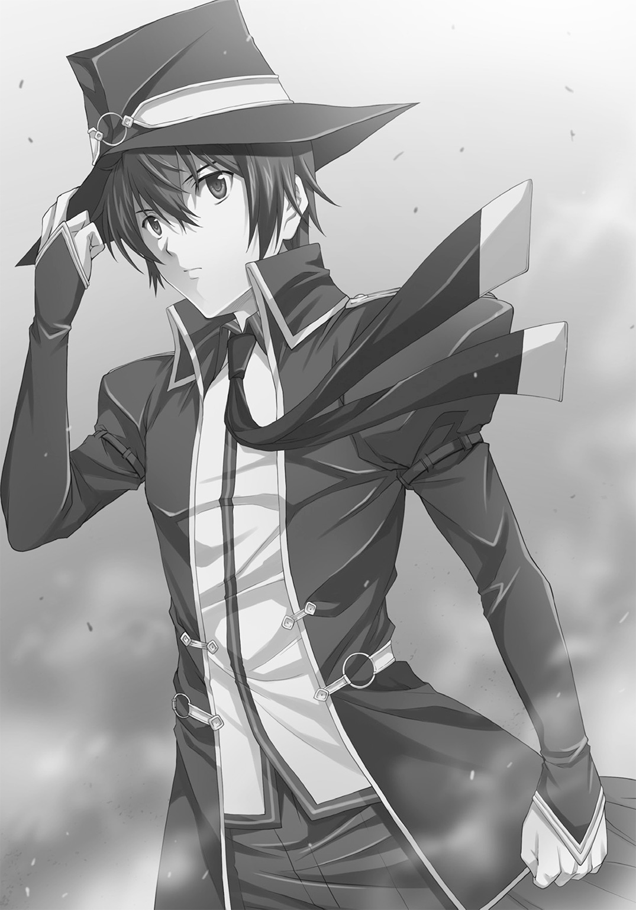
○第四話「長い夜」（byシカゴ）
☆
タグルと泡瀬はほぼ同時に茂みの中に飛び込んだ。
耳をつんざくような高周波の爆発音と共に、立っている木々の上半分が、そのまま僅かに位置をずらして落ち、倒れて地響きを立てる。
先ほどのガイノイドが、ゆっくりと砲塔を巡らせ、タグルたちを探る。
反撃しようと銃を抜いて、すでに弾丸が空だということを思い出し、くの字に本体を折って排莢する。
大小様々な空薬莢が地面に散らばった。
「えーと、大きいほうがいいかな」
呟いて学生服のズボンの中をあさり、中に入っていた銃弾を取り出す。
バラバラの大きさの弾丸から、なるべく大きめのものを選んで弾倉に押し込むと、22口径の装塡されていた穴はカシャリとデジカメのシャッターのような音を立てて広がり、45ＡＣＰが収まっていた穴は僅かに縮んで44マグナム弾を飲み込み、固定する。
「大丈夫、タグル君？」
ＦＮ－Ｐ90片手に、匍匐前進でやってきた泡瀬が、その光景を見て目を丸くする。
「その銃......何？」
「便利だよ、どんな弾丸でもシリンダーの全長からはみ出さなければ使えるんだって......そっちの弾は足りそう？」
「ええ。でも......」
どかん、と近くの木が根元から粉砕されて倒れた。
「このまま匍匐で移動しましょう。あの砲塔型レールガンは厄介だから、なるべくこちらから攻撃しないで。合図したら立ち上がって、まっすぐ走って」
「うん」
頷いてふたりは茂みの中を移動していく。
移動を始めると、またレールガンの発射音がして、こんどはふたりにかなり近い所の地面が吹き飛んだ。
「！」
思わず声をあげそうになるが、それが多分敵の狙いで、何か叫ぼうものならさらに精密に射撃をしてくると思い、悲鳴を押し殺して、泡瀬の後を追って進む。
きゅい、きゅい、というレールの上を砲塔が走る音が遠くに聞こえ、重々しい足音が遠くへ歩いていくのを感じてホッとする。
どれくらい匍匐前進を続けたのか。
「今よ！」
泡瀬の言葉に立ち上がり、転げ落ちそうになる帽子を押さえて走り出す。
泡瀬は途中で振り向いてＰ90を連射した。
最初の五発が相手の頭に命中し、派手によろけたが、そのままＡＪ４型ガイノイドは戦艦の砲塔型レールガンをこちらに向ける。
タグルは振り向いて泡瀬の腕を強く引いて仰向けに倒れた。
一瞬前まで彼女の上半身があった辺りを空気が引き裂き、ホテルの壁面が吹き飛ぶ。
泡瀬を抱きかかえながら、タグルは首を起こし、銃をガイノイドの鎖骨の辺りに向けて引き金を引いた。
狙った場所にぴったり穴が開いてスクール水着の身体が前に倒れる。
そのまま、レールガンが地面に向けられたまま暴発し、吹き飛んだ地面がＡＪ４型ガイノイドを高々と空に飛ばす。
「あ......ありがとう」
もうもうと立ちこめる土煙の中、タグルの上に覆い被さる形になった泡瀬が、顔を真っ赤にして離れた。
「たぶん、あれで当分は攻撃できなくなると思う」
ビルの屋上に、壊れた操り人形のような格好で、ＡＪ４型ガイノイドが落下していくのが微かに見える。
「泡瀬さん、大丈夫？」
「怪我はないわ......今のも『見えた』の？」
「今のは直感、見えてたらもうちょっと上手く反撃してる」
苦笑いしながらタグルは立ち上がった。
泡瀬もＰ90を油断なく構えながら立ち上がる。
見上げるとビルの彼方、吹っ飛ばされた先の屋上で先ほどのガイノイドが立ち上がって砲身のへし折れたレールガンをこちらに向けるのが見えたが、ひしゃげた全身フレームと金属アームも相まって、空しく照準を合わせることも出来ず、砲塔部分もふくめ、身もだえするような動きを続けている。
辛うじて戦闘可能だから、停止信号は発信されないだろう。
「いまのうちだね、ひとまず逃げよう」
タグルは泡瀬の腕を引いて走り出したが、すぐに何かが落下する気配を感じて伏せる。
レールガンの発射音よりも先に、立ちこめる土煙にトンネル状に穴が開いて、風景があらわになる。
煙の彼方に数体のガイノイド。
同じように戦艦の砲塔型の装備をしているものもいれば、ミサイルがずらりと並んだランチャー風の装備をしているものもいる。
新品そのもので数は三体。
「増援！」
泡瀬がＰ90を構えるものの、破壊が大量殺人に結びつくために躊躇する中、タグルは迷わず引き金を引いた。
それぞれの両膝に穴が開いて、三体とも倒れるが、数秒経たずに立ち上がり始める。
目が赤く輝き、タグルは自分たちの身体に別の方向から照準用レーザーの光点が灯っているのに気がついた。
「伏せて！」
今度は泡瀬がタグルの上に覆い被さるように飛びつき、二人の身体すれすれの地面と木々に銃弾が炸裂する。
背後からの銃弾だった。
「狙撃手がいるんだわ！」
「なら！」
タグルはこれまでの記憶を頼りにスイッチを入れ、パーシィの「杖」を作動させた。
それで空気を操り、まだ周囲を漂う土埃をさらに巻き上げる。
「大通りへ！」
泡瀬の言うとおりに走り出そうとして、タグルは足を止めた。
通りに出て走る自分たちを狙って、ガイノイドたちは周囲のことを考えずに発砲し、屋上かどこかにいる狙撃手たちも同じように狙って撃ちまくる。
その結果、爆発で集まってきた野次馬たちが血肉の塊に変えられ、地面に当たった跳弾で子供の手を引いてその場を歩いていただけの母親が顎の下から脳天を貫かれる。
突如として倒れた母親にきょとんとした顔でしゃがみ込む幼女の顔を、ガイノイドのレールガンの、照準調整で放たれた一発が消し飛ばし、その向こう側、慌てて逃げようとしていた老夫婦をすぐそばを走っていた自家用車ごと鉄くずのシェイクの彩りに変えてしまう。
転がった元タクシーはそのままコンビニエンスストアに突っ込んで爆発、炎上、火だるまになって出てきた客や従業員が悲鳴を上げることもできず――――。
「駄目だ、逃げられない！」
タグルは叫んで泡瀬の手を引いて逆に走る。
「た、タグルくん！」
「いまあっちにいったら人死にだらけになる！」
「『見えた』の？」
タグルは無言で頷き、さらに土埃を舞い上げながら走る。
未来が見えなければ、そのまままっすぐに逃げ延びることができただろうが、知ってしまってなお、誰かを犠牲には出来なかった。
「ごめん、泡瀬さん！」
「大丈夫、わ、私たち、な、仲間でしょう？」
精一杯に自分を励ますように言う泡瀬の声が、嬉しかった。
タグルは土煙の中、ガイノイドたちのレーザー照準の光がこちらを探るのを見た。
澄んだ空気の中ならともかく、埃や煙の立ちこめる中ではレーザーは丸見えになる。
それがあちこちを移動しながら確実にこちらに近づいてきているのが見えるのは恐怖だが、先ほど「見た」光景に比べればまだ自分だけだから怖くない。
（いや、違うって！）
タグルは気づいてぎくりと足が止まりそうになった。
（泡瀬さんは巻き込めない！）
そう思った瞬間頰をひっぱたかれるような、剃刀で切り裂くような痛みが同時に走った。
「？」
頰を撫でてみると、深く斬り裂かれている。
弾丸がかすめたのだと気づいた瞬間、タグルは銃をその方向に向けていた。
一瞬、「杖」の機能を止めて、埃が晴れた瞬間、夜空の一角へ向けて銃を放つ。
拳銃で、狙撃銃と対等に渡り合うには、最低でも一〇メートル以内に近づかなければならないが、素人のタグルはそのことを知らない。
そして、撃った。自分の思うままに。
夜空の彼方、近くのビルの屋上からパリンという音がワンテンポ遅れて響き、狙撃手の叫ぶ声が聞こえたが、その後もなにやら英語で「信じられない」とか「神様」みたいなことをわめいているのを聞きつつ、タグルはさらに二発をそれぞれ別の方角へ撃った。
同じ音、そしてよく似た内容の罵り声とも恐怖とも取れる声。
だがそれで弾丸は終わった。
走りながら装塡する暇はないから、そのままベルトの後ろに差し、「杖」をどう使うかに集中する。
（たしか、分析以外、一度にふたつの行為は出来ないんだよな）
つまり今のように風を操りながら周囲を探ったりは出来ても、風に渦を巻かせながら片方で空気を圧縮して防弾板の代わりを作ったりは出来ない、ということだ。
どこかで切り替えねばならないが、恐らく視認されたが最後、新しく現れたガイノイドたちに粉々にされるのは見えている。
だからといってガイノイドたちを破壊してしまうわけにはいかない。
必死に考えるタグルには、いつ自分がそんな複雑な操作を覚えていたのかという疑問を感じる余裕もなかった。
「だとしたら......」
タグルはパーシィの単眼鏡を取り出して鼻にクリップした。
「ひとつの操作対象をふたつに分けての集束と高密度化、高速化は矛盾するか？」
杖のダイヤルを動かしながら問うたタグルへの答えとして、見たこともない文字が表示されるが、少年はその意味を理解出来た――――可能、だ。
「よし、じゃあ............えーと、泡瀬さん、突っ切るよ！」
言ってタグルは足を止め、自分たちを覆っていた土煙のカーテンを加速させる。
風は地面を削り、木々の葉をちぎり取り、轟々と音を立ててタグルたちの周囲を渦巻く。
「あの、悪いけど、僕に抱きついて、合図したら僕に抱きついたままジャンプして！」
「え？ あ、は、はいっ！」
空気の移動速度を高速化、高密度化しながら全てを一気に足下へ移動させる。
レーザーの光が前後左右からゆっくりとタグルたちに近づいてくるのが見えた。
「今だ、飛んで！」
「は、はいっ！」
ふたりは呼吸を合わせたかのように、同時に地面からジャンプした。
杖を振り下ろす。
その瞬間、周囲を渦巻く全ての風と空気を圧縮して足下に............そして解放。
タグルたちは超小型の竜巻に乗って空高く舞い上がった。
「！」
泡瀬がしがみつき、パーシィほどではないにせよ、クラスでは一、二を争う豊かな胸が二の腕に押しつけられるのを意識して危うく集中が途切れそうになるのを慌てて持ち直させ、タグルは杖をさらにコントロールして自分たちの背中に空気を圧縮、解放して前へと飛ぶ。
落下しながらも一瞬で数百メートルを移動し、地面に落ちる寸前にエアクッションを作って降り立つ。
場所は靖国通りに近い、とあるビルとビルの間に出来た路地。
さすがにガイノイドたちは追ってこない。
「急ごう、泡瀬さん」
言って走り出そうとしたが、泡瀬はしっかりとタグルの身体にしがみついたままだ。
「？」
見ると、目をつぶって、細かくぶるぶる震えていた。
「だ......大丈夫？ もう飛ばない？」
ああ、そういえばこの少女はつい数分前にも数百メートルの高さを飛び降りたばかりだったのだと思い出す。
自分だって最初に飛び降りたときは一回だけで、それだってこんなに高くはなかった。
「ご、ごめんね、泡瀬さん。もう大丈夫だから」
「あ、ありがとう......」
まだ頭がフラフラするらしく、それでも何とか歩き出す泡瀬を、タグルは慌てて支えた。
「あ、あのた、タグル君......だ、大丈夫だから」
「とにかく急ごう」
大丈夫だからとふらつく泡瀬を置いていくわけにはいかない。何しろ彼女をこうしてしまったのは自分なのだから。
人々の目は最上階が燃えさかるホテルに向けられている。
夕方の大渋滞で、パトカーも消防車もまだ現場にたどり着けないらしく、数百メートル離れたこの通りに固まっていた。
「何か、飲む？」
近くのコンビニを指さしてタグルが訊くが、
「大丈夫、それよりもとにかく離れましょう。とにかくあのホテルから離れないと」
泡瀬はけなげにもそう言って足を進めた。
何とか、大久保あたりの小学校を遠く左手に眺めながら大久保通りに合流するところまであと僅か、というところでタイヤを鳴らしながら真紅のＲＶ車が止まり、中から小柄な少女がドアを開けた。
「やっと見つけた！」
「カレン！」
「念のために区役所前にスタンバってたら、あんたたちってば爆発が起こってしばらくホテルの間をチョコマカ、と思った途端に五〇〇メートルぐらい一気に移動するし、その後は徒歩移動っぽいし、化け物にさらわれたかと思ってヒヤヒヤしたわよ！」
「色々あったの」
「ところでタグルくん、その格好、何？ あとパスウィダーは？」
「説明は道々します」
タグルは後部座席に滑り込む。
「とりあえず『ろすてぃに屋』に向かってください！ 急いで！」
☆
「どうやら、中止命令を出す必要もなく、君のお気に入りなふたり組は僕のＡＪ４ガイノイドとＮＳＡの狙撃班の手を無事に逃れたそうだ......しかし、あのサタウチ・タグルとは何者なんだい？ 二〇〇メートル離れたビルの上の狙撃兵のスコープだけを撃ち抜いたそうだけど」
ポケットの携帯電話で報告を受け、プルキム・メルキオール・バニオンは愉快そうに背後の人物に語りかけた。
「おまけに、ガイノイドたちは一体が攻撃不能状態に陥っているものの行動は出来る程度に損傷してて、それ以外は無傷だ......一体、どうやったんだ？」
五〇メートルの地底には、人工の明かりのみがある広大な場所があった。
プルキムの前には立ち仕事用の机があり、ノートパソコンが広げられている。
彼はそれを使ってタグルたちを狙うガイノイドたちに指示を与えて操っていた。
「ねえ、パスウィダー、本当はあのふたり、何者なんだ？」
『この地球で何にでもなれる存在......高校生と言う。知らないか？ 実は君もそうだぞ？』
プルキムの前には、黄色と黒で塗られた巨大な特殊コンテナが鎮座している。
特殊合金と防弾はおろか数発ならロケットランチャーの直撃すら耐えうる防爆ガラスで作られた「特殊要人保管庫」。
あらゆる通信、攻撃を受けつけず、専用のコードを知る者以外は開けることが出来ない。
地球上で最も完璧な移動牢獄の一種だ。
「ところで居心地は如何かな、パスウィダー」
『以前『ブラックリスト』というテレビドラマで似たようなのを見たが、あれよりも格好いいな。気に入った............どてっ腹に星条旗カラーでＮＳＡとデカデカと書かれているセンスを除けば............あと、もう少し服を着させてもらえれば、だな』
スピーカー越しにそんなことを言いながら、パーシィはコンテナの中に据えられた豪奢なソファの上で長い脚を組み直した。
「まあ、それでもダグラドナの重合金監獄に比べれば広いし快適だ。もっともあっちは囚人惑星に落っことして中身を一〇〇年生かして監禁するために色々仕掛けがあるからだが」
リラックスしきっているが、彼女は一切の服を身に纏っていない。
健康的に日に焼けていながら、染み一つ、皺一つない肌も相まって、彼女はまるで自然の作り出した彫像のようだった。
タグルたちへのガイノイドとＮＳＡ狙撃部隊の襲撃を打ち切ることを条件に、全ての衣類を脱いでこの中に入った。
パーシィの服はすべて、ＮＳＡの分析に回されている。
くびれた腰も、砲弾のように大きく迫り出た胸も、長い脚もすべて晒しているが、彼女はプルキムを虫とでも思っているかのような冷淡さと自然さで牢獄の中に座っている。
「それはそれは............しかし、まるで君はサタウチくんたちを心配してないんだな？ これから先、我々の追撃があるかもしれないのに」
そして、プルキムも、全裸のパーシィに対して、一切動じる様子がない。
『仲間だからな。ああ見えて何度か修羅場もくぐってる。絶対の死地からなんとか逃げ延びてしまえば人間、案外しばらくは死なないものだ』
「............」
心の底を見据えるような目つきで、プルキムはじっとパスウィダーを見つめていたが、パスウィダーは平然としている。
「まあいい。あなたがここにいるだけで僕はありがたい」
『ひとつ、聞きたいんだが』
パスウィダーは人差し指を一本立てて気取った様子で言った。
『何故四八時間私を拘束していたいんだ？ 四時間でも、十二時間でも、一年でもなく、何故四八時間なんだ？』
「それはお楽しみだよ」
『随分意地悪なんだな。どんな計画がある？』
「本当は一度でいいから『実は二七分前に全て実行したよ』と言いたいところだけど、今回は君を抑えることから始めなければならなかった。地球の技術ではガイノイドを製造するには時間がかかりすぎてね............だからナイショだ」
プルキム・メルキオール・バニオンはそう言って笑った。
『まあいい......ところで、もうひとつ聞きたい。本当にあのＡＪ４型ガイノイドとやらは君が理念を見つけ、設計し、製造工程を指揮し、組み立て、運用しているのか？』
「運用はあくまでもＮＳＡだよ。僕はただ、理念を見つけ、設計し、生産ラインを管理しているだけ。今回は視察旅行と、これからのことに関して君が危険因子になるから、その対抗策を立てるためだ」
『危険因子か。私はこれだけ平和主義者なのに？』
「だが君が『正義の味方』ではあっても『国家や政府の味方』であるとは限らないことは、それこそ歴史が証明している」
たとえば、この一〇〇年でいえば、と前置きし、プルキムは続ける。
「君がアストロフォ人との取引を粉砕したおかげで、ルーズベルト大統領は持病を治すことなく戦争中に亡くなったし、パイロファナクスによって知能を増加させたケネディを暗殺したのも君だ」
『アストロフォが要求したのは子供一五〇〇人の脳で、ルーズベルトはそれを知って私に阻止を依頼した。ケネディの脳をパイロファナクスに喰わせてベトナム戦争で核を使わせようとしたのはＮＳＡの基礎を作った上流階級の連中だろうが......それに、クーデターをソディオカントの技術で画策したマッカーシーを諦めさせたり、ニクソンにちゃんと辞任の幕引きをさせたり、色々いいこともしてるぞ？ 第一、９１１の翌日、私がいなければ国防総省とホワイトハウスで何が炸裂してたか、君はちゃんと知っているんだろう？』
「まあね」
『世界のパワーバランスで言えば、第二次世界大戦後にアメリカと中国はそれぞれ三つに分割されたほうが世界は丸く収まっていた。私がそれをしなかったのはワシントンとリンカーン、マルコムＸとフォレスト・Ｊ・アッカーマンに借りがあって、キング牧師とハーヴェイ・ミルク、レイ・ブラッドベリとマイケル・ジャクソン、そしてキミは名前さえ知らない数多くの、歴史に名前の刻まれない本物の英雄たちに頼まれたからだ――――さて、本題に戻ろう――――本当に君がゼロから作ったのか？』
「そうだ、僕が作った。ある日天啓が降りて、僕の中にあの設計図が一気に浮かんだ。ネジや関節を構成するパーツ、制御装置の配置、配線、構成素材の配合率にいたるまで、だ」
『いつだ？』
「二年前だよ、僕は特別なんだ、だから、神のひらめきを得た」
プルキムは笑みを深めた。
『神のひらめきか。夢でも見たのか？』
パーシィの目が疑わしげに細められる。
「まあね」
『そして神のひらめきで殺戮兵器を作ったというわけか、少女の姿をした』
「テレビでも言ったとおり、あくまでも生活補助および介護がメインだ。もちろん、古式ゆかしい強固なプロテクト、アジモフ博士謹製のロボット三原則は組み込み済み......ちょっとだけ、いくつか回路基板を外せば無効になるがね」
『それはプロテクトとは呼ばない』
「――――ピックアップトラックや大型ＲＶ車に機関銃を載せてゲリラが使う『テクニカル』と同じさ。元々の目的以外のことにユーザーが使用しても、それはユーザーのしたことで、製造元に責任はない。しばらくしたら色々非難されるだろうが、そのときには防護措置をとっていくだけだ。まあ、大抵三日もすれば破られるプロテクトだけどね」
『今の状態のこいつらならそのとおりだろうが、ＯＳそのものを書き換えられたらどうするつもりだ？ 世界に天才は多い。それに私が知る限り、お前の作ったあのガイノイドは上手く使えば異星人の地球侵略にはうってつけだ』
「その心配はしてないよ。何しろ僕は天才だからね、完全なプロテクトをしてる。機能低下はその代価さ」
『お前にその天啓を与えた相手なら？』
「大丈夫だよ、僕はプルキム・メルキオール・バニオン、神さえ超える天才だ、一を聞いて千を知る、万を知る存在だ！ 最初に与えられた一滴の水を、滝のごとく変える！」
プルキムの目はぎらぎらとした奇妙な輝きを宿していた。
パーシィを見つめながら、彼女もふくめた周囲を見ているわけではない、もっと遠いもの、遠い光景を見ている目。
栄光という光を見つめすぎた目。
☆
「............まあ、簡単に帰ることが出来るとは思わなかったけど」
タグルはＲＶ車の中で溜息をついた。
「これじゃまるで戒厳令だよ」
車に取り付けられた液晶画面には、タグルの家の周辺にあるコンビニや電柱に取り付けられた防犯カメラの画像が次々と映っている。
そのどれにも、完全武装した警官隊と自衛隊が一メートルおきに立っているように見えるほどに整然と警備している風景があった。
この警戒網は『ろすてぃに屋』の周辺を半径一キロにわたって固めている。
しかもあちこちに投光器や、工事用のバルーンライトがおかれて昼間のように明るいのが、三キロ離れたここからも判る。
車はコインパーキングの一角に停めてあった。
個人経営のためか、監視カメラが壊れていてまだ修理されていない。
隠れるにはうってつけの場所だ。
「うちの政府はアメリカ様の言うことには逆らえないからなぁ......」
カレンが皮肉そうに唇を曲げた。
「警察までいるということは、ＳＡＴの狙撃部隊もいるってことね。通常の方法じゃあっという間に射殺されるわ」
泡瀬の表情は硬い。
「また例の風を圧縮したジャンプ、してみる？」
カレンのひと言に、泡瀬はぎくりと助手席から後部席のタグルへ振り向いたが、少年は苦笑を浮かべて首を横に振った。
「あれはどこへ逃げてもいいからやれたんです、今回はぴったり『ろすてぃに屋』の前に降りなけりゃいけませんから、そんな精確さは難しいですし、着地と同時に撃たれたら防ぎようがないですよ............でも、いいんですか、泡瀬さんもカレンさんも、一応政府の人......ですよね？」
「ああ？ 気にしない気にしない」
カレンは笑って手を振った。
「どうせうちら『暁』は政府機関の中でも鬼っ子だもの」
「ありがとうございます」
ぺこりとタグルは頭を下げた。
「それよりもタグル君、いいの？ 君こそ民間人じゃない？」
「それはそうですけど、友達に頼まれたことを放り出して、見捨てて逃げるわけにはいかないですよ」
「......タグル君、勇気ある撤退というのも、世の中には必要だと思うわ」
カレンとは真逆に、泡瀬の顔はシリアスそのものだった。
「あなたが逃げると言うのなら、私はいの、い、いの、命がけでもあなたを、ま、守る......まも、守ります」
彼女にとってはいささか芝居がかったその言葉を口にすることに顔は真っ赤にならなかったが、舌がもつれ、泡瀬はそのことを恥じて真っ赤になるとうつむいた。
「ごめんねー。この子、こういう時にトチるクセがあって」
なははとカレンが笑いながらうつむいた泡瀬の髪の毛をくしゃくしゃとかき回す。
「ありがとう泡瀬さん」
タグルは自分を気遣ってくれる泡瀬の心が嬉しくて微笑んだ。
「でも、やっぱり僕はやるよ............それに、いま判ったんだ。パーシィがこのコートと帽子と杖まで僕に渡した理由」
「？」
☆
一方、パーシィの目は最新式の牢獄の中で細められた。
「ということはソフトウェア以外に、ハードウェア的な対抗策がある、ということか？」
『よく分かるね？』
牢獄の向こう側から聞こえるプルキムの声は、わかりにくい皮肉に気づいてもらえた優等生の楽しみに満ちていた。
「君は芸術家肌だからな。私にＯＳのことを貶されて今ごろになって反撃するのがいい例だ。職人や技術畑の要素が強ければそれを肯定してから説明するか、黙ってる......あのガイノイドが君の現在の最高傑作であるなら、あんなにあっさり私たちに向けたり、ヤクザ同士の抗争なんかに使わせるものか」
パーシィは自分が囚われてまで探りたい真相を、今聞き出すべきだと理解していた。
彼は勝ち誇り、自分は文字通り、武器ひとつない裸の状況下で
『そうだよ......あの、ＡＪ４型ガイノイドは、もはや旧式だ、僕はすでに、次世代機を作り上げている、これまでとは全く無縁の、究極の人類の魂の乗り物としてのボディ、義体だ！ その最高のデモンストレーションを四八時間で行い、世界と合衆国に認めさせる！』
「それはとっくの昔にシロウ・マサムネという漫画家が提示した概念だぞ？」
『思いつくなら誰でも出来るが、完成させられるのは僕が神に等しい天才だからだ』
「では、神そのものが相手ならどうする？ 君にそのインスピレーションを与えた」
『神を殺すさ。僕はキリスト教徒じゃないし............そろそろその準備も終えたからね......言っただろう？ 一を聞いて千を作り出す天才だ、と』
その言葉に、パーシィは首をひねっていたが、
『ああ、そうか！』
とすぐに手を叩いた。
「この天候、この気温、あの空......そうだ、一五〇〇年前のバルンムウで見たんだ。インチキ教祖が『神』を名乗る未来の彼自身を引っ張り込んだときだ！ 生贄型時空渦動による大規模な時空強制連結の前兆か！」
『へえ......僕以外にこの答えを出す人間がいるとは思わなかった』
愉快そうにプルキムが笑うが、パーシィは逆に背筋が寒くなった。
彼女は、それが招く結果を見ている。
呼び出すものが問題なのではない。その際に発生することが問題で......いや、それ以上に、やはりこの状況下で呼び出されるものが問題だった。
あのＡＪ４型ガイノイドの形状が、どうしても彼女に不吉な予感をさせてならない。
「やめろ、君が何を考え、どんな防御策を施しているか知らないが、呼び出す予定のものが問題じゃない！ 異次元ゲートは開けた瞬間から次元と次元の狭間で彷徨う連中がわっと押し寄せてくる！ 一九〇六年のプロヴィデンスと同じだ！」
『ああ、Ｈ・Ｐ・ラヴクラフトが神経症を発する理由になったあの騒動だよね？ 知ってるよ。資料を読んだ。大丈夫、あの時よりも科学は発達し、そして僕がいる！ 時間旅行よりは楽さ』
笑いながらプルキムは両手を広げてみせた。
「馬鹿を言うな！」
パーシィの背筋が寒くなる。
この手の人間を、彼女は山のように見てきた。
ギリシアのパルテノンの中で、ローマの宮廷で、フランスの城の中で、ベルリンの演説台の上で、日本の大本営と呼ばれる作戦指揮所で、アメリカのホワイトハウスの暖炉の前で。
勝利と変革こそが世界を救うと信じている者の目。
そのための犠牲は聖なる供物と信じている目。
老若男女の別なく、誰の奥底にもある「絶対正義」という麻薬に中毒した目だ。
「止めろ！」
パーシィは叫んだ。
「あの時は私だって死にかけたほどの戦いだったんだ！」
思わず窓に駆け寄り、拳で防爆ガラスを叩く。
『大丈夫だよ、パスウィダー、僕は完璧だ。そしてアメリカ政府は潤沢な予算と装備を与えてくれた......デモンストレーションは完璧に一時間きっかりで終わる』
「まて、どういうことだ！」
『言ってみたいセリフがある、ってさっき言っただろう？』
剃刀でつけた傷のような笑みがプルキムの顔に浮かんだ。
『今から二七分前、それまで遺伝子保管庫に保管していた全ての遺伝子を使って、召喚用の異次元ゲートを開け始めた』
満面に笑みを浮かべてそう告げると、金髪の美少年は右手で頭を押さえ、左手で腹を抱えて笑い出した。
「貴様！ 七〇〇人を殺したのか！ 今度こそ本当に！」
パーシィの声に、しばらくして彼は笑いすぎて目に浮いた涙を拭って、
『何にでも始めと犠牲は必要だ......なぁに、気にすることはない。どうせ大半は犯罪者だからね』
「そんなことがどんな人間であれ、人の可能性を奪う理由になるか、それならまずお前が先に死ぬべきだろう、このクズ野郎！」
パーシィの拳がガラス窓にたたきつけられ、血が滲む。
『騙されて悔しい？』
高笑いをするプルキムを、パーシィは睨みつけた。
視線で人が殺せるなら、パーシィはこの瞬間、プルキム・メルキオール・バニオンを殺せていたに違いない。
『素敵だよ、君の怒った顔！ 間もなく、僕が呼び出した存在がやってくる、多分君に真っ先に挨拶しに来るだろう！ ゆっくりと語り合いたまえ！』
金髪の天才少年は高笑いをしながら去っていった。
「くそ、くそ、くそ！」
長いブルネットの髪を振り乱し、パーシィは何度も拳をたたきつけた。
「私は、私は、私は！」
涙が流れていた。
「......くそ......くそ......」
そのままずるずるとくずおれ、全裸のエルフの少女は膝を抱えた。
「......七〇〇人だぞ、七〇〇人だ......どいつもこいつも、どうして大義とか正義とかいう麻薬に中毒した途端、『たかが』とか『たった』とか言い訳をして、人殺しに禁忌がなくなるんだ！」
アークエルフの呻くような声が、牢獄の中にこだまする。
しばらくパーシィは己の無力さと失策に肩を震わせていたが、ふとそれを止めた。
「............おかしいぞ？」
声にもう湿ったものはない。顔をあげた。
「なんでわざわざ異次元の扉を開けてまで『標的』を呼び込む必要がある？ デモンストレーションなら人間相手でも十分のはずだ、東京なら誰を選んでもアメリカ人観光客以外なら『とても不幸な犠牲者』と言い張れる。
本来の敵である中東の反乱分子が装備をグレードアップさせたことに対抗するため、という理由を使いたければ自分たちの古くなった技術を横流ししてしまえばいい。
ましてあのガイノイドは旧式だ、四足歩行の砲台代わりになるポンコツロボットを作るぐらいの技術なら......いや待てよ、そもそもプルキムにあの発想を与えたのは誰だ？ あんなことをすれば人類の歴史は無駄に発展する。侵略とかしたいのならそれこそ頭の悪い発想だ、ソディオカントみたいに策略は弄するが鍛え上げた戦士の魂が絶命する時の精神波を喰いたいような連中じゃない、じゃあ人類同士の......いやまて、『頭が悪い？』」
パーシィはまだ血の滲む手を細い顎に当てて考え込んだ。
「最近、このフレーズをどっかで使ったな？ 頭の悪い連中......武器を敵に渡して、いや、自分たちの使う武器を敵に作らせて用意させた？ それも、そこそこのデキのダミーを作るための情報をコミで、となれば......あいつらだ！ とっくに最初っから答えは出てたじゃないか、この馬鹿！ 手の込んだ方法だから誤魔化されて！」
それ以上の推理を遮るように、爆発するような閃光と、炎が監獄のある部屋の隔壁を舐めつくし、照明類を粉砕、ショートさせて一瞬にして焼夷弾を投げ込んだような炎が一気に渦を巻き、重さ一〇トンはある特殊監獄を大きく揺さぶった。
「！」
驚いて立ち上がるパーシィの見た光景は、炎の地獄そのもので、全てが赤く照らされている。
そこに、見覚えのある影が立っていた。
華奢な少女の身体、細い手足、白いニーハイソックスに濃紺のスクール水着、胸には白いゼッケン。
「..................やはり、貴様たちだったのか、今回の黒幕は！ まったくしつこいぞ！」
☆
タグルは車から降りると、高々と杖をかざした。
「来い、『ロスティニア』！」
杖が輝き、高周波の音と共に、たった数時間離れていただけなのに、驚くほど懐かしさを感じさせるあの入り口がタグルたちの前にゆっくりと、蜃気楼が実体化するかのように現れ始める。
「よかった......言ってみるもんだなぁ。本当に来てくれた！」
タグルの言葉に思わず泡瀬とカレンは振り向いた。
「確証なかったの？」
泡瀬の声に、
「いや、なんとなく......だってその、単眼鏡のおかげでいくらか判るけど、パーシィと違って僕は『ロスティニア』の主じゃないし......」
あはは、とタグルは笑った。
ドアを開けようと取っ手に手をかけると、開かない。
「あれ？」
『申し訳ありません、サタウチ・タグル様。今現在、姫様が私を使用出来ない状況なのは理解していますが、あなたを最上位命令者に任命するためのシステムの書き換えにあと五分お待ちください。蒸気精霊杖も一時機能停止し、使用権利を書き換えます......今の状態では機能をフルに使えませんので』
「ロスティニア」のＡＩの声がそう告げた。
「あ、はい、お待ちします」
こくこく、とタグルは頷いた。
「......ちょっと泡瀬」
カレンは目の付け根をもみながら泡瀬を手招きして耳打ちした。
「あんたの彼氏、なんか凄くラッキーなだけの能天気に思えるんだけど？」
「いや、あのカレンはまだ彼のこと、よく知らないから......」
「ふたりとも、どうしたの？」
「ろすてぃに屋」の入り口でもある黒い棺桶の前で待ちながらタグルが尋ねる。
「いや、なんでもないわ、ほら泡瀬、いこいこ。五分後にはとりあえずひと息つけるよ」
「ええ」
そう言ってふたりがタグルの後を追おうとしたとき、彼女たちが背を向けたコインパーキングの入り口、さらにその向こうの反対車線から閃光とともに、高熱を含んだ風が吹きつけてきた。
「！」
本能でカレンと泡瀬がそれぞれの銃を構え、振り向く。
炎の塊が三つ、反対車線に生まれ、そこから細い、少女の姿へと変化しながらこちらに向けて悠然と歩いてくる。
躊躇なく、泡瀬はＰ90の引き金を引き、カレンは車に積んでいたグレネードランチャーを撃ち込んだ。
爆発と銃声が交錯し、アスファルトが砕け散り、爆発の閃光が周囲を照らして振り向いたタグルの顔を照らす。
ガイノイドは破壊されたと、タグルもふくめた三人のだれもが思った。
だが、炎は消えたがその中心であった少女の影はこちらへ向けて歩みを止めない。
三体の影は、ゆっくりと進むと近くの路上パーキングの高級車を、そして自動販売機を持ち上げた。
投げつけられた車はタグルたちの近くにあるビルの壁を粉砕し、炎上する。
「照準修正、再攻撃用意」「武器の調達を必要とす」
「スキャン終了、パスウィダーの仲間を二名確認、第二、第三優先殲滅対象」
「現在の殲滅を優先、武器の現地調達を第二順位に変更」
口々に出てくるのは、野太い男の合成音。
燃えさかるビルの炎に照らされて、その姿があらわになる。
「うそでしょ......」
泡瀬が呆然と呟く。
「殲滅せよ！」「殲滅せよ！」「殲滅せよ！」
相手は間違いなく、ＡＪ４型ガイノイドではなく、数千年後の世界からやってきて、もう少しでタグルを焼き尽くし、泡瀬を惨殺しようとした機会生命体、スウィムウェン。
先ほどと同じ爆発と炎があちこちから上がった。
「殲滅せよ！」の声があちこちから響く。
この駐車場を囲むあらゆる路地から、足音高く、スクール水着少女たちの影が現れる。
「ふたりとも、後ろへ！」
そう言ってタグルが前に出て杖をかざすが、杖は光らない。
「しまった......！」
「タグル君、後ろへ！」
泡瀬が前に出る。
スウィムウェンたちの歩みは止まらない。
どう勘定しても三〇〇体はいた。
「うわ......これって、絶体絶命ってやつ？」
カレンの顔がさすがに引きつった。
武器は何も持ってないが、その白い手指が届けば、タグルたちの身体はバラバラに引き裂かれるに違いない。
「殲滅せよ！」
たったひとつの言葉を繰り返す大合唱が、タグルたちを包む。
○第五話「雨を見たかい」（byクリーデンス・クリアウォーター・リバイバル）
☆
雨は止まない。
タグルはだんだん手足の先から血が通わなくなってきて、冷たく、何も感じなくなってきているのに軽く驚いた。
本来なら慌てふためくはずなのだが、その元気すらない。
（これ......多分、すぐそばで見たら血だまりの中に倒れてるように見えるんだろうなぁ）
当たり前のことさえ違和感があった。
（死ぬのかなあ......こんな、冷たくて、寂しいのは嫌だなぁ......）
☆
沙汰内類が屋上で倒れて雨に打たれるようになる数時間前。
「...やはり、貴様たちだったのか、今回の黒幕は！」
『肯定する、パスウィダー』
ひと房だけ前髪の赤いスウィムウェンは無表情に答えた。
ガイノイドとそっくりな外見ながら、やはり「本物」らしく、質感や「人間そっくりに作られた造形物」としての情報量が圧倒的に違っていた。
「プルキム・メルキオール・バニオンの頭の中に侵入して思考に介入したな？ 単純明快な力押ししかできなかったお前たちが何故こんな手の込んだことを？」
『否定する。我々は愚かではない。我々は自らの計略の根本的欠点を別種族との提案と取引により修正し、過去に遡り我々はこの人類個体に接触したのだ』
「取引だと？」
火災警報が鳴り響き、防火シャッターが降りる中、スウィムウェンは「肯定する」と答えた。
だが、それに続く答えは「どの種族との提案と取引か」の部分は飛ばされていて、後者のことになっていた。
『人類個体・プルキム・メルキオール・バニオンは己の社会的作業行為能力行使方法と能力の劣化による精神的苦痛にさいなまれていた。論理的に言って、彼はこのまま技術者としての盛りを過ぎ、失職する可能性が九八パーセントを越えていた。我々はそこにオーバーテクノロジーの生体電波伝達による技術提供という飛躍を与えた。人類の脳は論理の飛躍が行われると、結果もたらされたものに疑問を持たない、さらにこの個体には『天才』という呼称が与えられていたため、さらに不信感や恐怖がない。かくて我々はこの時代を『再発見』し『侵入』することが出来た』
「......そのためにあのガイノイドは人間を分解して管理出来る能力を持っていたわけか」
他の生物と見なせばアメーバでも攻撃するスウィムウェンとどの種族が「取引」出来たのか、パーシィは興味を持ったが、それ以上に、本当の問題を理解することさえ許されずに笑っていたプルキム・メルキオールのことが哀れで、能面のごときスウィムウェンの無表情を睨みつけた。
会話の間に、天井のスプリンクラーが作動して炎が消火されはじめた。
『肯定する。人類のＤＮＡと断末魔の精神波は、我々にとって有効な誘導信号となる。そして、我々専用の大型兵器もこの時代の技術レベルの最高峰を使って用意出来た』
「なぜそんなことをする？ お前たちのこの時代への絶対時間は終わった。再介入しても時間の修復力でお前たちのしたことは片っ端から消去されていく。仲間を呼べば呼ぶほど、文字通り燃え尽きるぞ」
『肯定する、我々が出現時、高熱を放出したのは時間の修正力によるものである』
パーシィの言葉に、スウィムウェンは動じずに応えた。
『また、我々のみでは直接介入することは出来ない。だがこの時代の人間が我々を呼び寄せれば、それはこの時代の人間が引き起こした事件になる』
「............なんだその理屈は！」
思わず怒鳴ったが、確かにその可能性はある、とパーシィは内心冷や汗をかいていた。
実際「異次元の怪物」のほとんどは時間の流れから外れた存在が亜空間で変質した者であり、それが時折、伝説や噂に残るほどの事件を引き起こせることを考えれば、突破口には違いない。
魔法使いだの科学者だの、個人が呼び出すだけでも場合によっては小さな町ぐらい軽く消え去る大騒動が起きることをパーシィはよく知っていた。
ましてプルキム・メルキオールの背後にはアメリカの防衛のためなら手段を選ばないＮＳＡという巨大な組織がついている。
『そして、決定的な変化が起これば、時間は本来の流れのために我々のいる時間を切り離し、枝分かれさせ、この世界はいくつもある並行世界のひとつに変わるだけだ』
スウィムウェンの解説の間も、天井を走るパイプの一つから液体窒素が放出され、周囲の気温が無理矢理下げられ、監獄の中にもうっすらと霜が張る。
「くそ！ お前のせいで私まで凍死だ！」
『否定する、お前はこの程度では死なないことはコレまでの記録で明白である』
スウィムウェンは頭をひとふりすると、自らに張り付いた氷を振り払った。
隔壁がゆっくりと開く。
『やあ、来てくれたね、僕のひらめきの『神』、スウィムウェン！』
アメリカの天才少年は満面の笑みを浮かべ、両手を広げた。
「プルキム・メルキオール・バニオン！ 貴様、こいつらが何者か知っているのか！」
防爆ガラスにしがみつく勢いのパーシィに、プルキムは微笑みを向けた。
『知っているさ、パスウィダー。君の宿敵で、遠い未来、我々を滅ぼしに来る連中だろう？ だが遠い、数千年も未来の話だ。侵略されたのは僕らじゃない、彼女たちを倒したのも僕らじゃない、人類の子孫たちが勝手にやったことだ。親が子供のやったことにいちいち責任は取れない、だが交渉は出来る』
「な............」
『とっくにそのことは織り込み済みなんだよ。彼女たちとは先月ようやく話がついた......僕らは交渉開始の時点で彼らに〈負けた〉と白旗をあげたということさ。あとは長い長い戦後になる』
「な......」
『肯定する。我々は地球人類に勝つために来た。この時代最強の国家のひとつが降伏を示し、軍門に降ることに我々は満足し、彼らの協力をもって他の国を降伏させれば我々は本格的に地球人類に勝利したことになる。我々に勝利の後の統治および支配の興味と欲求はない』
スウィムウェンはプルキムの言うことを肯定した。
『いい取引だろう？ 彼らは勝ちたい、僕らは彼らになら負けてもいいから地球では勝ちたい。両者ともに損をしない』
☆
周囲は燃えさかり、火の海だが、空だけは涼しげにそこにあった。
夜空に星が瞬くのを、タグルの単眼鏡が映した。
星は、そのまま彼らの目の前に降ってきた。
青い光の星だった............みるみる大きくなってサーチライトのように周囲を走査する。
スウィムウェンたちの間でぱちぱちと音がして何かが弾ける気配。
『相手のシールドを無効化した、タグル君、アワセ、撃て！』
聞き覚えのある野太い青年の声がスピーカーで増幅され天空から降ってきて、青白い、パーシィの「ギズモ」と同じ青い光が周囲を照らしたかと思うと、軽快な数挺の重機関銃の掃射音がして、次々とスウィムウェンたちをなぎ倒していく。
タグルたちも慌てて銃を撃ちまくり、なおも立ち上がり、あるいは仲間の屍を乗り越えて殺到してくるスウィムウェンを倒す。
ほんの数秒だったのかもしれないが、タグルにとっては一瞬のようでもあり、数時間のようにも思える時間が過ぎた後、ようやく立っているスウィムウェンはいなくなった。
『大丈夫か、みんな？』
夜空にうっすらと半透明のアウトラインが描かれ、それがゆっくりと実像を伴って出現してくる。
寸詰まりの飛行船と、エイを組み合わせたようなデザインの飛行装置だ......翼も、エンジンらしいものも見当たらないが、先ほどの青白い光はここから放たれていた。
「ひょっとして......レッドさん？」
『覚えててくれて嬉しいよ！ タグルくん、みんな怪我はないか？ 船の修理が終わったんで駆けつけたんだ！ 伏兵って大事だねえ！ ヒャッホー！ 俺かっこいいー！』
レッド・リーコンの陽気な声がスピーカーで増幅されて響く。
今頃コックピットで片手でガッツポーズしながら陽気に笑ってるに違いない。
船の修理をすると言って車でホテルに向かうタグルたちとは分かれて行動していたが、ちゃんと合流しにきてくれたのだ。
「なーんかあの人、ノリノリだねえ」
ぽかんとカレンが空を見上げて呟いた。
「まあ、ああいうアメリカンなノリは嫌いじゃないけどさ」
「伏兵は大事と言うより、ありがたいと思うわ......今回は特にね。お礼代わりにあなた、彼にハグしてもらってきて」
「セクハラ受けてこいって言うの？ それってパワハラじゃない！」
「私もやられたもの」
「同調圧力は嫌い！」
安堵してカレンと軽口をたたき合いながら、ようやく泡瀬は笑みを浮かべることが出来た。
Ｐ90の弾倉はもう空だった。
☆
「そんなことですむと思うのか、天才のくせにそれも見抜けないのか！」
『矛盾のない取引に、裏はないものさ』
「ちがう、君はやつらに深層心理を操られているんだ、『天啓』とやらを受けたときに、意識の奥底にバックドアを作られてるんだ！ 考えろ、気づけ！」
『僕は天才だ、全てを理解した上でこの降伏条約を結んでいる、アメリカ合衆国大統領とＮＳＡ長官の代理としてね』
『ゆえにあと三〇分後、私を含めた最初の三〇〇〇体は最初の現地のビーコンとして信号を発し、時空間を越えて残りの我々がやってくる。うち四千万体は歴史の修正力によって燃えるつきるが、それでもなお、三千五百五十五万六千五百四十一体の我々が到達する』
「プルキム！ こんな無茶をしたら、東京は次元渦動エネルギーのバックファイアをモロに受けることになる！ こいつ一体が出現しただけで、周辺の絨毯や壁紙が一瞬で炭化するほどの熱が出たんだ、三千万体以上ともなればどうなるかの見当はつくだろう！ 大虐殺どころじゃない、地球規模の環境破壊だ！」
パーシィの血相が変わる。
「まして歴史の修正力はさらに数万倍になってお前たちスウィムウェンをも焼き尽くすぞ！ 単体での出現............いや、千体規模なら何とか耐えられるかもしれんが、万単位は何億度の炎になると思う？ 計算しろ！ 立ち去れ！ 諦めろ！」
『肯定し、否定する。スウィムウェンに死の恐怖はない。必要な犠牲である、計算はすでに行われ、必要な犠牲数は把握し、可能と決議された。我々は勝利のために存在を全うするのだ』
「イカレ機会生命体に何を言っても無駄か......で、私にそんな話を聞かせてどうするつもりだ？」
『お前の努力が全て無に帰するのを、その監獄の中から眺めさせ、お前の感情を揺さぶり、我々の屈辱を晴らす。未来の地球人類以上に、我々を敗北させてきた〈イコライザー〉、個体名パスウィダー、お前に敗北を味わわせることが目的である』
『これも、彼女たちとの交渉条件のひとつでね......一〇〇年ほど君を監禁して、我々の歴史が改変されないと判明したら、殺してもいい、と』
プルキムがパーシィの窓をのぞき込みながら、悪戯っぽくウィンクした。
『否定する』
いきなり背後のスウィムウェンが言った。
『我々はお前たちの提案を記録したが、この項目のみ、同意するという返事はしていない』
『なに？』
振り向こうとしたプルキムの胸から、不意にスウィムウェンの白い指先が生えた。
手刀がその心臓を貫いたとパーシィが悟ったときには、その手はもう引き抜かれ、鮮血が窓を染める。
☆
「船の修理が終わった途端、パーシィの装備譲渡の反応が出た上に、君の世界で絶対時間計が異常な反応をし始めたもんだから、気になって来てみたんだが」
レッドはそう言ってあの妙に輝かしい笑顔を浮かべた。
それだけで、タグルはホッとする。
変わらぬもののありがたさが身に染みた。
「ロスティニア」が書き換えを完了したから中に乗り込め、と指示を出した。
「その様子じゃ、どうやらパーシィは敵に捕らわれた、ってところか」
「ええ」
「じゃあ、俺の船を収容するよう『ロスティニア』に頼んでくれ、新船長どの」
「は？ あ、そうですね、は、はい」
こくこくと少年は頷きながらドアを開けた。
途端に、甲高い警告音と、赤い光がタグルたちを照らす。
『さっそくですがタグル様、私の修理が九〇パーセント完了いたしました。ゼン・キャノン以外の全ての装備が使用可能です』
「りょ、了解、レッドさんの船を収容して！」
『承知いたしました』
不吉な警告音の鳴り響く真っ赤な船内を進み、タグルたちは操縦室に入る。
久々に床に表示された絶対時間計は長針が十一時五九分から十二時ちょうどの間を激しく行き来してぶるぶると震えている。
『ご覧のように絶対時間計に異様な反応が出ています。何者かが時空法則を無視して、歴史に介入しようとしているようです。通常なら歴史の修正力で弾き出されますが、彼らは何らかの方法でパラドクスの許容現象を引き起こし、これを無効化しています』
「ロスティニア」のＡＩが落ち着いた声で物騒なことを報告した。
『【転換点】以外の時間に介入して歴史に変更を加え、それが成功してしまった場合、元になった時間の流れそのものが歪み、捻れてこの宇宙を維持できなくなる可能性もあります』
「結果として、どうなるの？」
『生み出されるはずの並行世界も、元になった時間も、他の並行世界の要素へ変換、分解されて消滅します。場合によっては新たな宇宙の礎になるでしょう。早い話が、消えて無くなります。この船に乗っている場合に限り、別の並行宇宙に逃れれば安全ですが』
「か、解決策はある？」
『はい、タグル様。改変しようとするものを殲滅、粉砕すればこの状況は終了いたします』
「この船に武器は？」
『四つ、ございますが、次元砲は使用出来ません』
「残り三つのうち今使えるものは？」
『浮遊惑星処理用の重力子魚雷と、高出力レーザー、および体当たりでございます』
「............特攻ってこと？」
思わずカレンがそうツッコんだ。
『この時代の言語に照らし合わせると、それが一番ふさわしい呼び名でございますね』
しれっとＡＩは答えた。
「どれくらい時間があるの？」
『あと三〇分でございます』
「パーシィの居場所は分かる？」
『はい、タグル様。ですが姫様を救助して、それからこの状況を解決するには時間が五分足りません。姫様が収容されている場所にもスウィムウェンがおりますし、私の転送システムや入り口の転移を妨げる、乱数粒子障壁が五重に張り巡らされております。ご自身と皆様が徒歩、あるいはレッド様の船で突入したとしても、スウィムウェンとＮＳＡの攻撃を受けて死亡する確率は九五・九九九九九九パーセント、それ以外の方法で突入した場合九九・九九九九九九九九九九パーセントの確率で全滅します。また、この船の武装はそれぞれにオペレーターが必要であり、この人数は運用できるギリギリの数です。また、武器を使用する場合はあなたの指示が必要です』
「船長をレッドさんに......」
『最上位命令者の再切り替えはさらに一〇分が必要です』
「つまり、パーシィは諦めて世界を救え、ってこと？」
『効率的にはそれが一番です。そして今、私の主はタグル様であり、姫様は第二命令者でしかありません、最優先対象はあなたです、タグル様』
タグルは五秒間、黙って視線を床に落とした。
「判った、『ロスティニア』、パーシィの意志を尊重する。最優先される標的はどこ？」
『現在この次元で最も近い場所は新宿都庁上空です』
「全速力でそこへ向かう。発進して！」
『了解です、タグル様。賢い選択に賛辞を............次元偽装解除、戦闘態勢に移行します』
ごうん、という地鳴りのような音がして、「ロスティニア」が動き出した。
人々が騒然とする中、全長八〇〇メートルの巨大な、旧式の潜水艦のようなフォルムを持つ青い船体の舳先に、銀色の鎧を纏った女騎士が胸の前で手を交差させた像が取り付けられているのが印象的な巨大な飛行物体が埼玉県朝ケ市上空に姿を現し、そのまま、信じられない速度で新宿へと移動を開始した。
☆
腕が引き抜かれると、プルキムは倒れてそのままになった。
『苦痛はない、これは慈悲である......だがパスウィダー、貴様の場合には急速排除が最上策であるが故に選択する。パスウィダーの生命活動を停止する』
監獄内のスピーカーはスウィムウェンの決定を伝えた。
「なんてことをする！ 貴様たちの協力者だろう！」
呆然としながらも叫ぶパーシィに、スウィムウェンは無表情のまま、
『いずれ地球人類と惑星そのものが我々の資源として全て利用される。この個体の活動停止時期が早まったのみで、変更はない』
「やっぱり全て破壊し、滅ぼすつもりか」
『否定し、肯定する。全ての破壊は最後である。まず全地球人類の生命活動の停止、およびその後の人体の再利用工場の建設と稼働による兵力不足解消とさらなる我々の種族改良、惑星の破壊による高熱、および重力分解による、地表と地中資源、原子レベルの利用。それこそが我々の望みであり、我々が失った資源的、効率的被害の補塡方法である。また、パスウィダーの早急な排除は、我々の計画が最後まで完遂されるための障害排除として最優先事項でもある』
「お前をぶっ殺してから全てを終わらせてやる、と簡潔に言え！」
パーシィの叫びを無視して、スウィムウェンは拳を振りかざした。
「肯定する。硬度力場展開、右腕に出力の七五パーセントを集中。打撃開始」
パーシィの入っている特殊要人保管庫の防爆ガラスに、遠慮なく何度も拳が打ち込まれ、特殊合金で戦車以上の装甲と重さを持つ監獄は揺れた。
「うわっ！」
拳が振りかざされる度に揺れる監獄の中、パーシィは思わず脚を滑らせて倒れる。
「くそ！ ガンガン五月蠅い！ 一発でこんなもの破壊するぐらいの科学力はないのか、お前たちには！」
『騒音による苦痛も、これまでのお前の行為に対する僅かながらの代償補塡行為である』
さらに数発。ついに防爆ガラスにも白い亀裂が入った。
さらに数発拳が叩き込まれると、とうとうガラスを拳が突き破る。
☆
新宿の都庁上空まで来た「ロスティニア」はそのまま垂直上昇を始めた。
ある高度まで来ると、それまで何の変哲もない真夏の空が、眩い閃光を立てて壁となり、上昇を阻む。
船体そのものが黄金色に輝き始めた。
時間の修正力による圧力を自らのエネルギーに変え、時間に侵入してこようとする存在がいる時空間へと無理矢理割り込み始め、やがて金色の輪が「ロスティニア」の舳先に現れ、じわじわと船体がその先にある極彩色の輝きに満たされた中へと潜り込んでいく。
「ロスティニア」の船尾が金色の輪の中に入ると、輪自体も小さく収束して消え去った。
極彩色した時空間の奔流の中、ロスティニアの巨大な船体は木の葉のように上下左右に揺さぶられながら、恐ろしい勢いで流されていく。
『時間流に侵入、目標確認』
戦闘用に照明を消し、コンソールの光のみがうっすらと輝く「ロスティニア」の操縦室でＡＩが淡々と報告する。
正面のメインスクリーンに、巨大な円盤状の時空船が十数隻投影される。
あの全てにそれぞれ一〇万近いスウィムウェンが搭載されているのだ。
『目標接触まであと十五分、武器使用域まで五分』
「了解、左舷、右舷の時空フィールド用レーザーの使い方は何とか覚えました！」
コンソールに指を走らせ、高出力レーザーのコントロールスティックを微調整しなが泡瀬が答える。
「重力子魚雷、装塡完了。照準はよく分からないけど、多分当たると思う。さっきも命中させたし」
こちらはカレンだった。
「出力調整は順調」
レッド・リーコンがこの中ではもっとも忙しく、コンソールのあちこちをいじりながら出力調整を繰り返している。
「防御シールドを前面に集中。敵艦に体当たりしてから攻撃を開始」
闇の中、タグルの命令が響く。
☆
闇の中、ごくりとタグルは息をのんだ。
胃がきりきり痛んだ。
ここから本当に戦闘となる。
レッドや泡瀬、カレンの命を自分が好き勝手に使うのと、同義語だ。
そして無責任にも自分は............
『あと三〇秒で最初の敵艦に衝突』
だが、これは自分で選んだことだ。
大博打だが、いまさら降りればもっと人が死ぬ。
タグルは落下する暗闇の中、指示を出した。
「『ロスティニア』船首変形開始。衝角戦用意！」
『了解、当艦フィギュアヘッド収納、液化金属放出、磁力フィールド展開............船長、鋭角、鈍角どの角度にしますか？』
「どの角度がいいの？」
『鋭角ならば突き刺さる深さは確実ですが、反対に引き抜くのが難しくなります、鈍角はその逆です』
「了解、最初は数をこなそう、鈍角で！」
『了承しました船首ラム、鈍角変形』
磁力フィールドによって液化金属は浅い角度の巨大な刃物へと変形していくと、力場フィールドを集束させることで固められ船首ラムへと完成される。
『最初のターゲットを補足、如何いたしましょう』
タグルは息を吸い込んだ。
彼の周囲の暗闇ではそろそろこんな命令をしている暇がなくなることを知らせる最終警報が鳴り始めている。
「突撃開始、以後各個撃破、攻撃タイミング、破壊行程、操舵方向そのほかは各員に任せる！ 各自自己判断で行動せよ！」
『了解、タグル様、ご武運を............姫様をお願いします』
「ロスティニア」のＡＩの声は微かに敬意を含んでいるように聞こえた。
「ありがとう、ＡＩさん」
頷いて、タグルは闇の中、自分の身体を縛り付けたシートのアームを握りしめる。
☆
拳が引き抜かれると、スウィムウェンリーダーの両手が、窓枠を上下に押し開き始めた。
奥歯がむず痒くなるような異音を放ちながら、特殊合金が無理矢理こじ開けられていく。
「殲滅せよ！」
スウィムウェンの上半身が監獄の中に素早く飛び込むと、パーシィの腕を摑んで引きずり出す。
「うわっ！」
そのまま霜の張った床に放り棄てられ、パーシィの肢体は突風に晒された木の葉のように転がり、壁にぶつかって止まった。
パーシィの右肩で嫌な音が響く。
さらに背中全面を壁にぶつけ、呼吸の止まった状態でのたうつパーシィに、ゆっくりとスウィムウェンは近づいた。
「殲滅せよ！」
声と共に、手を伸ばそうとしたスウィムウェンリーダーの頭上が砕けた。
轟音と共に到達した圧倒的な質量によって、防御シールドを作動させる暇もなく、スウィムウェンリーダーはその下敷きになった。
フットボールを巨大化させたような奇妙な形の金属の塊。黄金色に輝いていた。
「ダ、ダグラドナの重合金監獄！」
ようやく壁に背中を付ける形で上半身を起こしながら、パーシィは呆然と呟いた。
「なんでこんな所に？」
破壊のためにわき起こったコンクリートの粉塵と冷気の霧が立ちこめる部屋の中、その中心部あたりに丸く線が走り、持ち上がると下に向かって外れ、同時にあちこちがスライドして人影が床に降り立つ。
「パーシィ！」
銃床がリング状の弾倉も兼ねているという奇妙な形のアサルトライフルを肩からスリングで下げた沙汰内類がパーシィの衣装と帽子を纏って飛び出してくる。
「大丈夫？」
「右肩を......やられた、多分、脱臼してる......大丈夫、今自分でなんとかする」
安堵の声をあげて右肩を押さえ「ごきり」と肩を入れたパーシィは次の瞬間、あることに気づいて慌てて顔をあげた。
「タ、タグル、来るな！」
「大丈夫、スウィムウェンはもう壊れてるよ」
彼女の「杖」をかざして確認し、少年は霧の向こうからやってくる。
「いや、あのそういう意味じゃ......」
ない、と言い終える前に、タグルは霧を抜けて、パーシィの前に立っていた。
「......」
「..................」
パーシィはタグルの顔を見上げ、タグルはパーシィの姿を見下ろしている。
両脚を前に投げ出して壁にもたれた、一糸まとわぬ全裸の姿を。
一瞬の後。
「きゃああああああああ！」
しなやかな長身を縮こまらせて、パーシィの口から悲鳴があがった。ついさっきまで、プルキムに全裸を見られても悠然と脚を組み替えた少女と同じには見えない。
「あ、あ、ああっっち、あっちを向いててくれ！ は、裸なんだっ！」
「ごごごごごごめん、見てない、見てないから、今の見てないっ！ 思ってたより胸大きいんだなとか、無駄どころかアンダーがないんだとか、綺麗なピンクなんだ、とか思ってない、考えてない！」
パーシィは少年に背を向けつつ、胸元と脚の付け根を左腕、右の掌で隠し、タグルはあらぬことを口走りながら慌てて後ろを向いた。
（ズルイよ、この前の紐みたいなビキニの時は平然としてたのに！）
思わずそんなことを考える。
「こ、コート、脱ぐから！」
「いや、今君が装備を脱ぐと『ロスティニア』の最上位命令者の書き換えでまた手間取る、それよりも私のギズモを渡してくれ、あとコートの左二番目のポケットにあるハンカチ。それでとりあえずの服を作る」
「う、うん！」
背中を向けた少年はそっと上下逆にして、ハンカチを載せた握りがパーシィのほうに向くようにしてから蒸気精霊杖を手渡した。
青白い光が輝き、「いいぞ」とパーシィに声をかけられてタグルは後ろを向いた。
パーシィは、以前店番の時に着けていたのと同じような、白い紐で作られた水着のようなものを纏い、左手で突いた杖で立ち上がる。
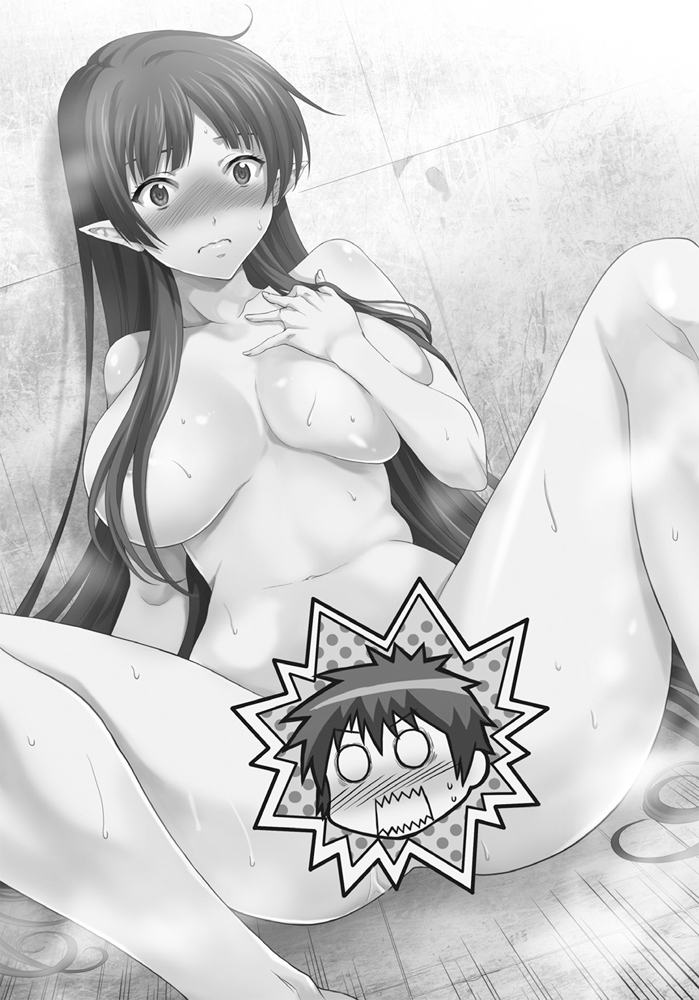
「これでいい」
そして、昂然と胸を張った。
「いや、あのそれ全裸とあまり変わらないような......」
「これでいいんだ！」
まだ顔を赤くしながら断言すると、パーシィは肩を押さえて呻いた。
「大丈夫？」
「くそ......アドレナリンも万能じゃないな。肋にもヒビが入ってる......タグル、コートの右側、上から三番目の内ポケットの中に外科治療用ナノマシンの入った無針注射器があるから出してくれ。右だぞ、左にあるのは麻酔銃だからな」
「緊張して間違えるからそういうこと言わないでよ！」
言われるままにそうすると、ちいさな水鉄砲のようなものが出てきて、パーシィに渡すと、自分の右肩にそれを打ち込んだ。
「これで脱臼は何とかなる......」
「大丈夫？」
「痛みまでは抑えないからしばらく呻いていると思うが気にするな......そうしないと神経の再生に良くないのでな。しかし『ロスティニア』はどうした？ 君の命令なしでは動かないはずだが？」
「時間をこじ開けて入ってこようとしているスウィムウェンの船を迎撃しに行ってる」
「君が指揮しないで？」
「指揮ならしてる」
タグルはそう言ってポケットからパーシィのくれたシールを貼ったスマートフォンを取り出した。
「こちらタグル、無事に突入成功、パーシィは保護した、安心して全員戦って！」
『よっしゃあ！』
レッドの声が威勢よく響いた。
『こっちも二隻目の土手っ腹で撃ちまくってるところだ、残り十三隻、片付けたらあとで会おうぜ！』
通話が切れた。
「ＡＩに聞いたら音声でも指揮には変わりがないって。帰りはレッドさんの船が自動操縦でここまで来るから、それで」
「............君は裏技を見つける天才だな」
軽く微笑むパーシィだが、タグルは怪訝な顔をした。
「その人......」
自分の足下に転がっている身動きしない霜の塊を一瞥し、パーシィは溜息をついた。
「プルキム・メルキオール・バニオンだ。スウィムウェンに騙されて、殺された」
「いや、そうじゃなくて......頭」
「？」
タグルの視線を辿ってみると、白い霜に覆われたプルキムの金色の頭髪がずれていた。
カツラらしい。
しかもその下にある地肌にはまっすぐな縫合線が見えた。位置からすれば眉よりやや上の部分をぐるりと一周している。
「手術跡............というよりこれは移植......なんでだ？ スウィムウェンの奴らが手術？ そんなことならＮＳＡが許さないだろうし、ＮＳＡが彼を手術したなら傷病記録があるはずなのに、アワセの記録にも、私が調べたほうにもそんなものは......」
パーシィが首をひねる前に、落下物の気配がした。
「パーシィ！」
タグルが抱きついて後ろに下がらせなければ、そのまま落ちてきた天井の瓦礫に、プルキムの死体ごと踏みつぶされていたかもしれない。
「大丈夫？」
慌ててパーシィの胸元からタグルは離れた。
「あ、ああ、しかし......問題発生だ、タグル」
頭を振りつつ、なおもいやみったらしく痛む肩に顔をしかめながら、パーシィは少年に視線で示した。
「え？」
タグルがその先へと振り向くと、埃まみれの床に人影が伸びていた。
人影はひとつではなかった............どう見てもスウィムウェンの群れだ。
タグルの開けた穴の縁にそって遙か屋上まで続いている。
「殲滅せよ！」
「殲滅せよ！」
例の言葉の合唱が起こった。
「僕たちとレッドさんで一〇〇〇体はやっつけたと思ったのに......」
「そういえば『我ら最初の三〇〇〇体』とか言ってたな、あいつ」
パーシィが苦く言いながら、杖を左手で構える。
☆
とにかく、悪霊に取り憑かれたように、泡瀬は引き金を引き続けた。
高出力の単照射型レーザーはそのたびに「ロスティニア」が突っ込んだスウィムウェンの時間船の傷口を広げ、灼きつくす。
「このこのこのこのこの！」
カレンも同じように魚雷発射のトリガーを引き、装塡作業を繰り返す。
今頃敵艦を外から見れば、内側からポップコーンが膨らむようにぼこぼこと船体があちこち膨らみ始めている頃だろう。
やがて、激しい震動と共にぐん、と泡瀬は座席に押しつけられた。
これまで突き刺さっていた敵船が破壊され、船がまた自由になったのだ。
『十八隻目、撃破いたしました』
「ロスティニア」のＡＩが簡潔に今回の勝利を伝える。
「あと何隻ありますか、レッドさん？」
泡瀬の問いに、出力調整と操舵を担当しているレッド・リーコンは額に浮いた汗を拭いながら爽やかな笑みを浮かべた。
「大分減ったぞ、あと二〇隻だ！」
「わーい」
カレンが力ない声をあげる。
『その前に問題発生です、先ほどの船のスウィムウェンのうち一四〇〇体前後が本船表面に取りついた状態です。排除しないと各種武装、および本体装甲面への破壊工作が始まるかと思われます』
「なにか、そういうときに使える装備や武器はありますか？」
『はい、ございますが最低でもおひとり、その装備ごと外に出ていただかねばなりません』
「レッドさん、レーザーのエネルギーの再充塡と、魚雷の再生産から計算して、次の敵艦までどれくらい時間、ありますか？」
「まあ、一〇分、ってところだな」
「わかりました、私、出ます」
泡瀬はシートベルトを外して立ち上がった。
『了解です、では左手の入り口から移動用カタパルトに』
「泡瀬、大丈夫なの？」
カレンが珍しく不安そうに尋ねるのへ、
「大丈夫、格闘戦と近距離戦は私の本分よ」
ニッコリ笑って泡瀬は親指を立て、ＡＩの言うままに左手の入り口に入った。
何もない、と思った瞬間、恐ろしい勢いで身体が横に流れ、泡瀬は一瞬で、無数の鎧甲冑のようなものが立ち並ぶ空間の真上に飛ばされていた。
「なに、これ......どうしてパスウィダーしかいないはずの船にこんなに？」
空間は広大だった。
立ち並ぶ鎧甲冑めいた何かは、どう大雑把に見積もっても数千体はある。
そして、どの鎧甲冑もぴかぴかに磨き上げられて、僅かな天井からの光に輝いていた。
よく見れば一体一体微妙にデザインが異なる。
顔の部分も鳥のようなものからドクロのようなもの、あるいはただの一枚の板を曲げただけというような単純なものまで。
普段ならパーシィのコレクション、と思うかもしれないが、戦闘モードに頭も身体も切り替わった泡瀬は「違う」と断じた。
ここは、虚ろな、物の展示場ではない。
「暁」や彼女の実家にある宿業を背負った刀や鎧、武器を集めた場所と同じ、無念と、本来自分たちが存在するべき戦場への渇望とも怨嗟ともとれる感情の気配。
同時に泡瀬は自分たちが使う「特五装備」が本来どこから来たものなのかを理解した。
こちらのほうがひと回り細身になっているが、デザインの基本や、装甲の関節構造部分や背面に伸びている細いパイプの配置などは、間違いなくここに並ぶものが基本になっている。
主を失った武器たちの墓場。
そのままゆっくりと泡瀬は立ち並ぶ鎧甲冑の真ん中に下ろされた。
寒気にも似た「かつて人がひしめいていた名残」が泡瀬の皮膚に刺さってくる。
今まで知らなかったが「ロスティニア」には広大な墓地があるのだと理解する。
それ以外、この膨大な気配の名残の説明がつかない。
『肉体精査完了、アワセ様に合うようにパーツを調整いたします............お好みは？』
「色は赤、左腕の装甲は分厚い方がありがたいわ」
鎧たちの間が開き、遙か彼方から手や足、頭部や胴体のパーツが飛んできて、泡瀬の頭上で組み上がり、降りてくる。
いつも使っている「暁」の装備品よりも、それは寄せ集めのパーツなのにスマートで、明らかに高度な技術で作られているのが判る。
どうやって装着するのか、と思うと、鎧はそのまま一瞬半透明になると泡瀬の身体に「重なり」、実体化する。
『申し訳ありません泡瀬様、女性用の武器は現在メンテナンスが終わっておりませんので、いま空中に浮かぶどれかをお選びください』
ＡＩの声に合わせて、目の前にいくつもの無骨な武器が現れた。
『銃器類は時空間移動中で照準、弾道に変化が大きく、本船に傷がつく恐れのある威力のものしかないので、近接専用武器のみとなります』
泡瀬は、その中で、もっとも無骨で、最も重そうな武器を取る。
『本当にそれでよろしいのですか？』と「ロスティニア」のＡＩが訊ねるほどに。
それは両手持ちの柄がついたナタのような、斧のような刃物。
『斧山刀はかなり扱いが難しいですが？』
「ええ。それと肩と背中の盾はいらないから外して。当たらなければいいだけだから」
泡瀬は頷いた。ここに幸いタグルはいない。戦闘機械としての自分を見られる心配はなかった。
だとしたら、効率が第一だ。
「これが壊れたら、お代わりを撃ち出してもらえるかしら？」
『ご安心を、今のアワセ様の鎧の装甲は、地球の、艦載機を全て発進させた空母五隻と同じ防御力をもち、強度はさらにその五倍ございます。武器の強度はさらにその七倍。スウィムウェンの一〇〇〇体ごときでは、壊れることはございません』
「では、行きましょう......船の上に運んで」
すべて言い終わる前に、泡瀬は凄まじい勢いで流れる極彩色の空の下、果てしなく続く金属の表面に立っていた。
宇宙ではなく、時間の流れの中。
『蛇足ながら、鎧自体が発生する人工重力によってアワセさまは自在にこの船の上を移動出来ます、どうぞご武運を』
もはや見慣れたスク水少女たちが、その空の下、大理石の表面に貼り付く虫のように両手両脚で取り付いているのが見えた......明らかにこちらに気づき、わしゃわしゃと方向を変えるのが、妙におぞましい。
「............」
武器を肩に担いで泡瀬はゆっくりと息を吸い、吐いた。
目を半眼に閉じる。
何が何でも目の前にいるこの連中を打ち倒し、タグルのもとに戻る。駆けつける。
それだけを決めていた。
あの少年の中に見た光だけを目指して帰る。
その光が、少しは自分をまともな存在に変えてくれると、泡瀬は信じているから。
いつもの祝詞はこの戦いにふさわしくなかった。
はじめのかけ声はひとつでいい。
終わるまでは無言、全ての気迫と誓い、戦う相手への強烈な呪いの言葉。
「外道・鏖殺！」
頭に浮かんだそのひと言を口にした瞬間、泡瀬は自分を包むこの鎧のような宇宙服が歓喜にわななくのを感じた。
間違いない、この鎧を含めた、全ての「ロスティニア」内の鎧は墓標であり、主の帰還を待つ兵士たちだ。
なぜそんなものが「ロスティニア」の中にあるのかは判らない。
自分はどうやら彼らに認められた。いまはそれだけが重要だ。
勝てる、という確信を持って刃物の柄を握りなおした。
亡霊が後押ししてくれる戦士が負けるはずはない。
封じるはずだった裂帛の気合いが口から放たれる。
「殲滅せよ！」「殲滅せよ！」「殲滅せよ！」「殲滅せよ！」
みるみる近づいてきたスウィムウェンの首を最初のひとなぎで一〇個飛ばした。
「アナイ......」
返す刀でさらに一〇。
泡瀬は「ロスティニア」の表面を、戦の風となって駆け抜ける。
☆
「肉体の死亡を確認・プロトコル42を開始」
暗闇に光が灯り、筒状の室内を照明が照らした。
筒状の部屋はゆっくりと回転しながら、壁であり床でもある部分に納めた白い円筒状の棺をひとつずつベルトコンベアで送り出していく。
送り出された棺は隣の部屋の床に整然と敷き詰められ、やがて、最後に部屋に送り込まれた棺の蓋がモーター音と共にゆっくりと開いた。
天井からの照明に、銀色の衣装がきらめく。頭に着けたカチューシャ型のセンサーユーニットがヒコヒコと動いて状況を確認。
そしてゆっくりと立ち上がる。
白いなめらかな肌には、産毛がないことと、人工皮膚の下に埋まるメンテナンス用のパネルラインが線で引かれている以外、人間と見まごうばかりの質感を持っていた。
一カ月ほど前、シャイアンマウンテンの地下深くで起動した「彼女」は久しぶりに大地を踏みしめた。
「シルバニオン・ナンバー01、起動シークエンス完了。プロトコル47へ移行する」
胸は張り詰め、腰の大きくくびれた美女は、立ち上がると同時にそう宣言し、他の棺の蓋も一斉に開きはじめる。
「さぁ、精鋭諸君。我々の戦争を始めよう」
赤銀色のバニーガール衣装にしか思えぬものに身を包んだ美女は、プルキム・メルキオール・バニオンの声でそう言った。
☆
上にいるスウィムウェンたちが飛び降りるのを見て、タグルの乗ってきた重合金監獄が落下したおかげで開いた隔壁の中へ転がり込むと、ふたりは階段を駆け上ることにした。
「パーシィは後ろのほうに集中して、前は僕が！」
そう言うと、タグルはレッドの船の中にあったアサルトライフルを構えて階段の上から襲いかかってくるスウィムウェンたちを撃った。
レッド・リーコンの話では、三二世紀の銃で、長い銃身に内蔵されているのはパーシィの杖と同じ能力の光であり、スウィムウェンたちのシールドを無効にして弾丸を叩き込むらしい。
グリップの下部から銃本体までぐるっと半周するようなドーナツ型の弾倉を持つそれは奇妙に軽く、反動も優しい。
だがそれでもパーシィがくれたリボルバーのほうがよく当たるとタグルは思った。
とはいえ、六連発と三千五百連発ではこの状態でどちらが役に立つかは明白だ。
弾倉を半分ほど消費して、なんとか地上に逃げ出す。
半開きになったシャッターをくぐり、外に出ると、熱風が嵐のように荒れ狂い、空が次第に赤く染まって輝いているのが判る。
まだ夜の九時のはずだ。
「ここ......新宿？」
目の前にある案内版には右手の階段が地下鉄副都心線・大江戸線東新宿駅Ａ１出口、左手にまっすぐ行けばハローワーク新宿があると表示されている。
振り向けば、どうやら式典や結婚式などに貸し出されている高級イベント会場らしい。
ということは道向こうのセブンイレブンの間にあるこの通りは都道３０２号線。
「君たち、どうしたんだ！」
恐らくタグルが落下した時の衝撃で集まってきたのだろう野次馬を整理していた警官が、ふたりを見つけて飛んできた。
「いやあの、その、と、とにかく危ないです、テロリストがいるんです！」
慌ててコートの中に銃を隠しながらタグルが言う。
「悪いことは言わない、とにかく全員に避難命令を！ ここは危険だ！」
パーシィも言うが、何しろ紐水着に巨大な宝石の塡まったステッキを持った格好で言われても、錯乱した少女と、同じくパニックに陥った少年にしか見えない。
「わかった、判ったから来なさい......おい誰か、毛布とか羽織るものを！」
「いや、それどころじゃ......」
タグルが押し問答を始めそうになったとき、
「殲滅せよ！」
の合唱が聞こえ、スウィムウェンたちが隣のビルの屋上から、タグルたちが出てきた入り口から、あるいは窓ガラスを突き破って地面に降り立った。
ビルの屋上には例のＡＪ４型ガイノイドから奪ったとおぼしい砲塔ユニットを付けているものもいる。
「な、なんだ君たちは！」
「お巡りさん、逃げてください、こいつらえーとその、怪物です！」
「何を言ってるんだ君は！」
怒鳴られながらタグルは「まあ、そう思うよなあ」と内心呟いていた。
何しろ外見だけで言えば可愛らしい銀髪碧眼のスクール水着少女である。
それが十数階のビルの上から飛び降りて無事だという異様さに、人は目の前で、しかも大混乱の最中となるとなかなか気づかない。
これが正常バイアスというやつだろうか。
群衆の中にも携帯やカメラ、スマートフォンを向けてシャッターを切っているものが後を絶たない。
「仕方ない、タグル！」
そう言ってパーシィが杖をかざして光らせた。
全ての街灯監視カメラや携帯などがスパークして人々が悲鳴を上げる中、スウィムウェンの砲塔ユニットも火花をあげ、発射されたレールガンや小型ミサイルがあらぬ方向へ飛んでいって爆発し、駐車中の車や社員たちが退社した後のビジネスビルのいくつかの壁を吹き飛ばす。
「逃げろーっ！」
パーシィが声を張り上げ、今度は全員が従った。
わっと蜘蛛の子を散らすように逃げていく。
タグルたちもその中に混じった。
パーシィはちゃっかり、警官からかけてもらった毛布を身に纏っている。
「今のどうやったの？」
「裏技だ、杖から半径一メートル以上、直径二キロ圏内の電子機器全てを一瞬だけ最高出力にしたエネルギーでショートさせた。スウィムウェンにも多少効......かないみたいだな」
パーシィの振り向いた先を見ると、倒れていたスウィムウェンたちが起き上がり、上半身を微動だにさせない奇妙な走り方で群衆の間を縫ってこちらを目指して駆けてくる。
「もういっぺんやったら？」
「一度やったらあと一〇分はチャージ時間が必要なんだよ！ ところでレッドの船はいつ来るんだ？」
「僕らが地上に出たら自動操縦ですぐ飛んでくるはずなんだけど......見えた！」
上空に一瞬、光の屈折のおかげで不可視フィールドを展開した、ずんぐりとしたレッドの船のアウトラインが横切っていくのが見える。
「よし、追うぞ！」
タグルとパーシィは新宿文化センターの案内の看板のあたりで角を曲がり、細い裏道を抜けてこの辺りでは唯一の都立高校へ向かう。
レッドの船が、高校のグラウンドらしい所へ着陸するのが見えた。
ふたりは校門を乗り越え、タグルのギズモで鍵を開けて校舎を抜け、セキュリティのサイレンが鳴る中、グラウンドにたどり着いた。
着陸したレッドの船はハッチを開けて待ち受けている。
「ゴールだ！」
タグルよりも早く走りながらパーシィが振り向いた瞬間、何かがタグルの腰の横をかすめ、パーシィの引き締まった腹部に突き立った。
長さ三〇センチほどの建築用鉄筋。
どこかの工事現場で引き抜いてきたのか、歪に歪んでいるのに恐ろしく正確で、常人にはあり得ない速度の投擲をさらに二本、右の太腿と左肩に受けて、パーシィは仰向けに倒れた。
「パーシィ！」
駆け寄ったタグルはパーシィに刺さった鉄筋を抜こうとして、それが大出血を招くと思いとどまり、後ろへマシンガンの銃口を向けて引き金を引いた。
軽快な発射音と共に追いすがってきたスウィムウェンがもんどり打って倒れる。
「大丈夫......ちょっと痛いが......我慢出来る......」
慌てて先ほどの無針注射器を取り出すが、パーシィは首を横に振った。
「そいつはもう空っぽだ。大丈夫、脱臼を治したらナノマシンはこっちの傷に取りかかるはず.........ただ、しばらく影響で意識が......仰向けに......運んでくれ......腹圧で......」
「判った！」
言うとタグルは仰向けのパーシィを担いで走る。
ハッチの中に飛び込むのと、後から追いすがってきたスウィムウェンたちが閉じたハッチを拳で叩くのはほぼ同時だった。
「音声入力、発進！」
「ロスティニア」が豪華客船なら、こちらはライトバンクラスの広さの操縦席で、後部座席を倒し、仰向けにしてパーシィを寝かせながら命令すると、頼もしいエンジンの噴射音と共に機体が上昇し、すぐにがくんと止まった。
「どうしたの？」
正面のスクリーンに、機体のあちこちに配置されたカメラからの映像が映し出される。
一〇〇〇体近いスウィムウェンたちが校庭に殺到し、肩車をつなげるようにしてこの船の外壁にしがみつき、船の錨のようになっている。
それどころか、地上のスウィムウェンたちは上のスウィムウェンたちを引っ張り、船ごと地上に引きずり下ろそうとしていた。
「武装解放、しがみついたスウィムウェンたちを撃って！」
叫ぶタグルの単眼鏡に、巨大な×印と「武装使用不能」という異星の文字が浮かぶ。
状況がスクリーンの半分に表示された。
スウィムウェンたちはこの船の武装にもしがみつき、動きを止めているのだ。
「ああ、くそ！」
このままでは地上に引きずり下ろされ、スウィムウェンになぶり殺しにされる。
タグルはパーシィの血で汚れた杖を拾い上げ、帽子を深くかぶり直した。
後部座席のパーシィはぐったりとなって動かない。
「ヒーローごっこ、だね」
苦笑を浮かべたつもりだが、自分の意に反して引きつった笑いしか顔に浮かばないのを感じつつ、タグルはハッチを開けるスイッチを掌で叩いた。
「音声入力、僕が出たらハッチをすぐ閉じろ、スウィムウェンたちが離れたら、即座に発進、『ロスティニア』へ戻れ、絶対に引き返すな！」
ハッチから吹きつける熱い風を頰に受けながら、タグルはそう叫ぶと、ハッチの縁に指をかけているスウィムウェンの頭と上半身を撃ち抜いた。
そのままコートの襟足から背中へと杖を差し、少年は船から飛び出す。
「殲滅せよ！」「殲滅せよ！」「殲滅せよ！」「殲滅せよ！」「殲滅せよ！」「殲滅せよ！」「殲滅せよ！」
頭を撃ち抜かれた仲間を放り出し、下からまた別のが迫り上がってくる奴の肩の上にまたがり、「ギズモ」を上を向いた口の中に突っ込んでスイッチを入れる。
「殲滅せ......」
青白い輝きがスウィムウェンの口の中で輝いて、タグルの乗っかったスウィムウェンは硬直した。
のたうつ蛇の頭に、肩車してもらうように乗った状況から、船にまとわりついている他のスウィムウェンたちをアサルトライフルで狙い撃つ。
他に五本のスウィムウェンで出来上がった「錨と鎖」があったが、その全てが銃弾にちぎれ飛ぶと、船は一気に加速して上空へと駆け上がる。
タグルは自分の土台になってくれたスウィムウェンの口からギズモを引き抜きつつ、そのままのけぞるように空中へ躍り出た。
落下する。
自分のギズモを作動させた。
一瞬光ったが、先ほどの最大出力でのスウィムウェンの硬直状態を作ったせいかギズモは沈黙し、ギリギリのところでまた輝きを復活させる。
ギリギリで「エアバッグ」がタグルを受け止め、校舎の屋上に緩やかに下ろしてくれた。
だが、スウィムウェンまで消してくれるわけではない。
「殲滅せよ！」「殲滅せよ！」
「殲滅せよ！」「殲滅せよ！」
錨と鎖と化していたスウィムウェンのうち、校舎に一番近いものが屋上にしがみつく。
その上を残りのスウィムウェンたちが昇ってくる。
銃弾は半分以下。タグルが背中に差したパーシィの杖のエネルギーはまだ半分で、今度使えばあっという間にまた枯渇するのは落下しつつ確認していた。
「さて、どうしたもんかな？」
声は微かに震えていた――――どうやら自分はどこまでも格好良くはなれないらしい。
『人類よ』
聞き覚えのある声が空から降ってきた。
「プルキム？ なんでだ？」
凍りついて死んだはずのプルキムの声に、タグルが聞こえてきた方角の空を見上げると、見たこともないバニーガールの巨大な立体映像が浮かんでいた。
そして、破壊された新宿の街並み、今タグルがいる学校の周辺の映像がその横に投影される。
『いま、この瞬間、我々は侵略を受けている！ シンジュクは今火の海だ！ だが安心せよ！ この機械人類、スウィムウェンに滅ぼされる心配はない。我がアメリカ合衆国............いや、私、プルキム・メルキオール・バニオンは、彼らの技術を応用し、己の脳を改造することで彼らに協力するふりをしながらその高度な技術をさらに改良し、人類のための究極の方舟であり、戦士を用意した！』
カメラが移動し、プルキム・メルキオール・バニオンの声で喋るバニーガールの背後に並ぶ、銀色の衣装をまとったバニーガールの群れを映した。
『私の母、偉大なる大女優にして慈善活動家でもあった、エミリア・バニオンを完全に再現したこの超義体、『シルバニオン』が人類を救い、勝利へと導く！』
プルキムの声と映像に、スウィムウェンたちはタグルを襲う手を止めて見上げている。
タグルの脳裏に、パーシィが幽閉されている部屋で見た、プルキムの死体の頭の縫合跡が思い浮かんだ。
パーシィの予想では、恐らくプルキムはスウィムウェンのテレパシーでガイノイドの技術革新に至る情報を与えられ、スウィムウェンの装備充実と時空介入再開のための準備をしていたという。
だが、彼が自画自讃するほどの本物の天才なら、何故そのことに気づかなかったのか。
思考操作をされている、とパーシィは言っていたが、実はそのことに気づきこれを逆手に取っていたとしたら。
『見よ、この胸、腰、究極のプロポーションを持つ美の女神！ 私は究極の愛をもって、脳だけとなり、この身体を地球人類のために操ろう！ そしてこの任務に自らの肉体を棄てて脳を差し出してくれた、アメリカ海兵隊の精鋭男女五〇〇人もまた！』
一斉にバニーガール型サイボーグ、シルバニオンが敬礼をした。
どの義体にも個性はなく、最初に喋っているプルキムの声をしたバニーガールとそっくり同じ顔とプロポーション、そして衣装......ただ、今喋っているプルキムの脳を持つシルバニオンだけは赤銀のバニースーツだ。
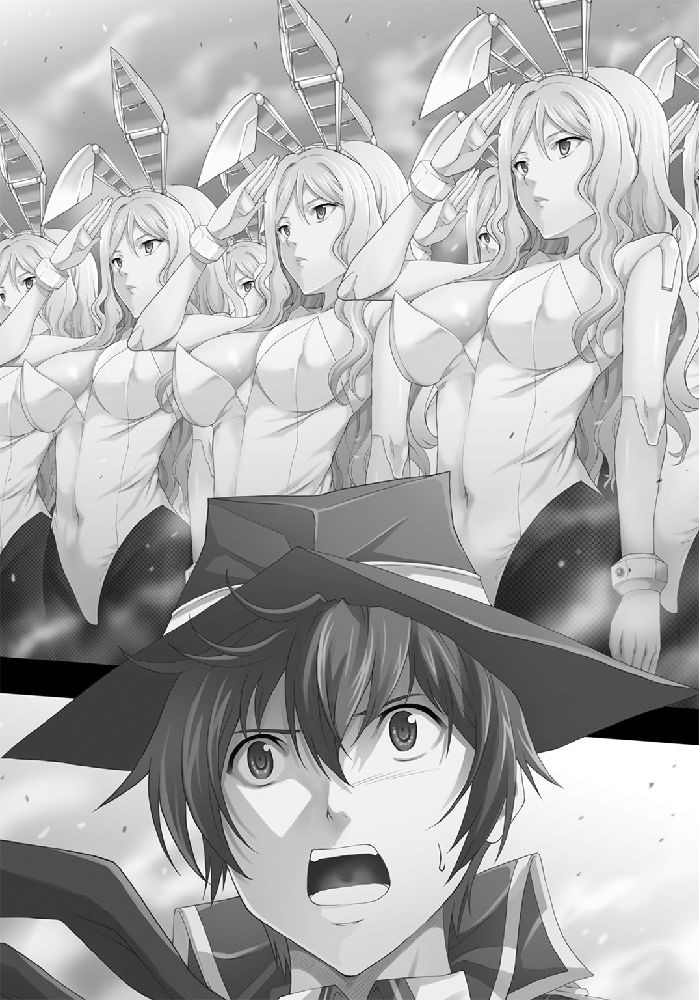
『人類の希望、シルバニオン！ その初陣を今、地球人類にお見せする！』
爆発音が、先ほどまでパーシィを閉じ込めていたＮＳＡの新宿支部の地下から起こった。
爆風と炎の柱がただでさえ熱気を帯びた夜の中、天空へと駆け抜ける。
上空に無数の銀色の煌めき。
赤い衣装のものを筆頭にした、五〇一体のシルバニオンが飛翔している。
「スク水少女の次は、バニーガール軍団？」
ぽかんとタグルの声が校舎の屋上に吸い込まれる中、スウィムウェンたちは一斉にタグルではなく、空中から降りてくる銀色のバニーガールたちに対して攻撃態勢を取った。
「殲滅せよ！」
そのひと言を繰り返す数千体の大合唱に迎えられ、シルバニオンとスウィムウェンの戦闘が開始された。
☆
最後の一隻が膨らみ、破裂するような爆発を見せて散る。
その光景を、瀬底泡瀬は「ロスティニア」の通路の窓から眺めていた。
手には例の鈍器のような刃物。
とうとう船の外壁を破って中に侵入してきたスウィムウェンを間一髪、全て掃討したのである。
通路には残骸と化したスウィムウェンの群れが、佃煮のように転がっている。
泡瀬は戦士としての欲求が完全に満たされた、満面満足の笑顔で、そのまましばらく「ロスティニア」の通路に仰向けに寝転がった。
☆
「もーだめ、指が、指が......」
そう言って、カレンはコンソールの上に突っ伏した。
何しろ泡瀬が侵入してきた敵の掃討に向かったため、魚雷のみならずレーザー砲のトリガーや照準まで彼女に回されてきたのである。
「いやあ、こちらの体力が間に合って良かった」
汗だくになって座り込みながら、レッドはそれでも爽やかな笑みを浮かべた。
「カレンちゃん、大丈夫？」
「もう、腕が、指が............」
「大丈夫揉みほぐしてあげよう」
そう言ってレッドは立ち上がろうとしたが、そのままシートにまた戻った。
「いかんな、俺ももう限界だわ、もう少ししたら揉んであげるよ、色々とツボ知ってるから」
「せ、セクハラ行為もコミでしたら結構です」
「大丈夫だよ、そんなに怖がることはないじゃない。君、アワセちゃんよりも年上でしょ？ 十分俺の好みだよ、カワイイし、綺麗だし......」
「へばってても、口説き文句は出るんですねえ......」
「そりゃもう、温かいし、気持ちいいし、何よりも寂しくなくなるんだもの」
あははは、とレッドは笑った。
『レッド様の船が接近、あと三〇秒で収容されます、中には乗員一名、姫様のみです、重傷を負っております、誠に申し訳ありませんが、おふたりとも、急いで格納庫へお向かいくださいませ............アワセ様は現在睡眠中ですので』
「ロスティニア」のＡＩの告げた言葉に、レッドの笑顔が消える。
「判った！」
そう言って走り出す。
「うわぁ......タフだぁ......格好いいけど、恋人にしたら夜、大変そう......」
コンソールに突っ伏したまま、カレンは呟いた。
☆
一方的な戦闘になった。
数だけで言えばシルバニオンは五〇一体、スウィムウェンは二〇〇〇体。六倍近い差がある。
だが、最初の一撃が強烈だった。
シルバニオンたちの左腕が真っ二つに割れ、中から高出力レーザーが照射され、着地までの数秒のうちにスウィムウェンたちの約半数と校舎の七割を文字通り寸断したのだ。
バラバラにされたスウィムウェンたちと、崩れる校舎の上に降り立ったシルバニオンたちは、そのまま乱戦、接近戦に持ち込んだ。
そうなるとカフス部分のパーツが鋭く伸びて高周波ブレードとなり、スウィムウェンたちを切り刻む。
豊満な胸を模した次元転移ジェネレーターはぶるぶると震えながらスウィムウェンの武器を無効化し、手足に仕込まれた重力子操作システムが巨岩の重さを決して折れぬ針の先.........拳へに集中させる。
シルバニオンは破壊の女神であり、スウィムウェンは哀れな獲物でしかなかった。
「我ら最大の敵は、地球製であると認識。警告、警告、スウィムウェン各位に告げる......」
最後に残ったスウィムウェンのリーダーの首を、真っ赤なバニースーツのシルバニオンリーダーがあっけなく引き抜いて、虚空へ投げ捨てる。
「見よ、我らシルバニオンの勝利を！」
赤いリーダーは拳を虚空に高々と上げて宣言した。
その様子はリアルタイムの立体映像で新宿の暑い夜空に投影されている。
駆けつけてきた警察のサーチライトに照らされ、さらにシルバニオンのリーダーは、プルキム・メルキオール・バニオンの声で宣言した。
「世界の脅威は迫っている、今すぐ、全人類をシルバニオンにして立ち向かおう！」
「......え？」
とりあえず戦闘に巻き込まれないようにと校舎の階段を下り、地上に着いたばかりのタグルは顔をあげてその言葉に首をひねった。
「この身体に収まれば性差別も、外見の差別も、知能の差別もない、性格の不一致すら！ 我らは一つ、シルバニオンとなる！ 機械と一体化することで、人と機械の限界を乗り越えるのだ！」
呼応するように、例の新宿支部が三度爆発し、その炎の中から直径数十メートルの銀色の球体が浮かび上がる。
「見よ、我らが城！ 人類の砦、グレート・シルバニオン・フォートレス、略してＧＳＦ！」
何処に継ぎ目があるのか判らないその本体から、大量の触手のようなマニピュレーターが地上に向けて伸ばされる。
その先には警官隊と野次馬たちがいた。
悲鳴をあげる男女を問わず、マニピュレーターは身体に巻き付き空中に持ち上げるとそのまま銀色の球体......ＧＳＦの中に取り込んでしまう。
悲鳴と電気ノコギリが何かを切断し、溶接用のバーナーがスパークを上げるような音が連続して聞こえ、一分もしないうちにその後部ハッチが開いて新しいシルバニオンが半壊した校舎の上に飛び降りていく。
下のハッチからは力を失った人影が次々と地面に向けて落下していった。
「まさか......あれ、脳を取り出してシルバニオンの身体に埋め込んでる？」
ＧＳＦとはシルバニオン製造工場であるらしい。
「スク水少女の脅威が去ったと思ったら、今度はバニーガールに全人類が改造されるってこと？」
こんな馬鹿馬鹿しい人類の脅威の連続は、テレビでも映画でも観たことがない。
だが、間違いなく目の前で、本物の人間を使って行われていることだった。
「ああ、ママ！ 世界が全てママになるよ！ 慈悲深く美しく、賢い存在になるよ、ママ！」
ＧＳＦの上で、うっとりとプルキム＝シルバニオンが叫ぶ。
「何を考えてるんだ！」
思わずタグルは銃を構え、プルキム＝シルバニオンの足下に狙いをつけて引き金を絞る。
元々威嚇射撃のつもりだったが、銃弾はプルキム＝シルバニオンの周囲で弾けるよりも先に、豊満な胸が激しく揺れて展開される次元転移フィールドに阻まれて空中で停止した。
じろり、とプルキム＝シルバニオンがこちらを睨む。
死神と目が合った、というのはこういうことだろうとタグルは思う。
「やめろ、プルキム！」
タグルはそれでも叫んだ――――脚が震えるが、それでも、このままここを逃げ出すわけにはいかなかった。
銃を構えたまま、タグルは凍りつきそうになりながらも、必死で頭を巡らせた。
パーシィならこういうときどうするか。
頭の中でこれまでのパーシィとの会話や騒動の中で得た情報や話、「ロスティニア」の中で見たものがバラバラのパズルのピースをひっくり返したように溢れる。
とにかくこの行為を止めようとするのは、間違いないし、それは正しい。
「君か、サタウチ・タグル......パスウィダーはどうした？」
「彼女は自分の船に帰ったよ」
「ああ、今ごろは時空の狭間でスウィムウェンの時間移動船と戦っている頃だな。おかげで僕らは助かったよ......あと二〇〇〇体もいれば危なかった。天才の僕でも、スウィムウェンに気づかれないようにこの身体に脳を移動させて、残った肉体を遠隔操作出来るようにするので手一杯でね、奴らの始末は君たちに任せっきりで心配だったんだが、杞憂だったな」
突風が顔に吹きつけられ、プルキム＝シルバニオンの顔がタグルの前にあった。
足がすくむ。
悲鳴を上げて降伏してしまおうかという考えが一瞬、頭をよぎった。
その向こうでＧＳＦが次々と人々をシルバニオンに作り替えていくのが見える。
その瞬間、辛うじて少年は両脚に力を込め、文字通り立ち直った。
「止めろ、その機械の身体がどれだけ素晴らしいか知らないが、強制するな！ ここにいる人たちは君たちと違って望むどころか、それが何かさえ知らないんだぞ！」
「新しすぎる何かは常にそういう受け取られかたから始まる............だが、今世界はスウィムウェンの脅威にさらされているんだ......いや、他の異星人の脅威からもね。全人類が一丸となり、同じ思考と強さを持って立ち向かうべき時なんだよ」
プルキム＝シルバニオンの表情が優しく微笑む。
「君のような勇気のある少年は大好きだし、優秀な素材になるよ............さあ、おいで、一緒に同じ未来を見よう」
その言葉に、ぞわりとした嫌悪感と恐怖を感じてタグルは引き金を引いた。
銃弾は全て、プルキム＝シルバニオンの額ギリギリのところで停止する。
「無駄だよ」
横殴りの拳をとっさに肘で受けたつもりだったが、それでもトラックにはね飛ばされたような勢いでタグルは右へ............ＧＳＦの真下に飛ばされ、転がった。
その脚に左腕に、胴体に触手型マニピュレーターが絡みつき、少年の身体を持ち上げる。
「このおっ！」
タグルがライフルを触手の根元に向けて撃つが、銃弾は見事に弾かれた。
携帯が鳴る――――天佑の響き。
タグルはとっさにコートのポケットからスマートフォンを取り出した。
「パーシィ？」
『残念ながら彼女は現在ナノマシン活性化のための治療ポッドの中だ』
レッド・リーコンの声だった。
『今、最後の一隻を沈めた......そっちはどうだ？』
「携帯、スピーカーにしてください！」
声が残響音を伴い、スピーカーに切り替わったと判った途端、タグルは叫んだ。
「『ロスティニア』急速反転、隕石除去用の絶対停止装置を作動、僕の周辺にいる、二足歩行で人類ではない、高電圧で動く存在全てにロックオン！」
『承知しました、タグル様、現在五二三の対象にロックオン完了です』
慇懃な「ロスティニア」のＡＩの声が答えた。
その瞬間、タグルには「見え」た。
いつもなら避けるべき光景。
だが、今回は同じように行動すべき光景だった。
スマートフォンを戻しながら、背中に差したままになっているパーシィの蒸気精霊杖を引き抜く。
杖の握りの下の表示を見ると、ようやくチャージが貯まっているのが見えた。
タグルの前に拘束された女子高生が、触手型マニュピレーターの付け根のすぐ後ろにある、絞り込むような動きで開閉を続ける「投入口」へと放り投げられそうになるのへ、スイッチを入れたままにしたパーシィの杖を放り込む。
「投入口」は素早く異物を感知して閉じたが、パーシィの杖は真ん中あたりまでハッチの中に入った状態で固定される。
数秒後、タグルが仕掛けたタイマーが作動する。
最大出力......ただし、前回とは違い、方向は杖の先端に集束して。
悲鳴をあげても追いつかないような苦痛がタグルの頭の中を揺さぶるが、人体以上に影響を受けるのは機械だ。
ＧＳＦのハッチから火花が散った。
タグルのギズモも火花を散らし、真っ黒焦げになって手から落下した。
触手型マニピュレーターも力を失う。
パーシィの杖がハッチから落ちるのを受け止めた瞬間、タグルもまた拘束を解かれた。
十数メートルの距離で、タグルは杖を使って「エアクッション」を周囲に敷き詰めた。
同じく拘束を解かれた人々が、無事に地面に降りられるように。
タグルが見上げると、ＧＳＦはよたよたと半壊した校舎に突っ込むところだった。
「今だ！」
タグルはポケットからスピーカーモードのスマートフォンを取り出して叫ぶ。
その次の瞬間、タグルめがけて殺到しようとしたシルバニオン五百数体と、スウィムウェンの残骸は、タグルの視界から消え失せた。
宇宙空間で、あるいは時空の流れの中で、最も重要なことは加速と停止......「ロスティニア」は唐突な隕石の出現や、他の危険を回避するために瞬間的に加速をゼロにすることが出来る機能を持っている。
これは船自体のみならず、停止させたい相手に対しても使える。
これを応用したのが、以前パーシィが「ろすてぃに屋」でうっかり売ろうとして引き下げたゴルラム４の娯楽遊具、重力ハンモックだ。
タグルは以前「ろすてぃに屋」でパーシィがいつものようにウンチクと経験談混じりで語ったその機能を覚えていた。
宇宙における太陽系の移動速度は秒速六〇〇〇キロであり、時速に直すと約二一六万キロ。
「絶対停止」されたシルバニオンたちは、遙か彼方に取り残されている。
『タグル様、停止時間は一〇分しかもちませんが、それでもよろしいのですか？』
「ロスティニア」からの問いかけに、タグルは「それだけあればしばらくは十分だよ」と答えて溜息をついた。
「君らが戻ってくるまでどれくらいかかる？」
『あと三時間ほどです』
言われてタグルはうんざりという顔でうなだれた。
「あ、あの............ありがとうございます」
先ほどタグルが杖を投げて助ける形になった制服姿の女子高生が、頭を下げた。
「あ、いえ、どうも............ははは」
「あの、あなたは一体......」
「僕はその............えーと......『イコライザー』ですから、はい」
上手いセリフが思い浮かばず、それだけ言って、タグルはそそくさと走り出した。
途中で、パーシィの杖を使って空気を圧縮し、夜空へと舞い上がる。
何度か飛び上がって、数軒目のビルの屋上に降りた。
スウィムウェンを倒したせいか、それとも爆発や大火事は雨雲を呼ぶのか、空模様が急に怪しくなり、涼しい風が吹き始めた。
「この辺で雨宿りして............」
と周囲を見回していると、とん、と何かが脇腹を突いた。
空に雷鳴が轟く。
「？」
屋上の照明に照らされて自分の脇腹にインクがこぼれたような染みがあるのが見えた。
さらに、小さな飛沫がその横にふたつ、吹き出した。
「あれ......？」
手で触れようとしたとたん、膝に力が入らなくなり、タグルはそのまま倒れた。
先ほど聞いた雷鳴が、遠距離からの銃声だったと気づくが、その頃には本物の雷鳴と共に土砂降りの雨が少年の上に降り注いだ。
☆
タグルが倒れた数百メートル先のビル。
「ズレた」
舌打ちと共に、ヒスパニック系の男はボルトを引いて薬莢を排出した。
豪雨の中、灼けた薬莢が濡れた屋上でジュッと音を立てる。
「今日は下にずれる。この国の湿気は厄介だ」
「雨が降り出した上に西風が急に吹いたんだ、仕方がない」
狙撃手の相方であり、その護衛役でもある黒人のスポッターが取りなすように肩を叩いて、無線を入れる。
「こちらアディソン・９。最優先コードＰＳＷＤ09発動中につき『イコライザー』を名乗る少年を狙撃、腹部貫通銃創を三発負わせましたが、まだ死亡には至っていません。標的が倒れたため、狙撃位置を変更して止めを刺します」
「その必要はないよ、ＮＳＡの諸君」
不意に、彼らの背後から声が投げられた。
振り向きざまにスポッターが、手に握っているＨ＆ＫＭＰ７サブマシンガンを向けて引き金を引こうとしたが、青白い輝きが招いた電撃が、彼らを沈黙させた。
「私の名前はパスウィダー。お前たちに宣告する」
水溜まりになりつつある屋上に転がった無線機を拾い上げ、声の主は告げた。
「今後、沙汰内類に手を出すことは許さない。彼は私の相棒だ――――これからの世界が安全であってほしければ、そうしろ」
相手の答えを待たず、声の主は無線を屋上にたたきつけて破壊した。
☆
流れ出る血が、死を確実に呼び寄せているのを自覚しながら、タグルは夜空を見上げる。
雨音にかき消されながらも、遠くに救急車や消防車のサイレンの音が聞こえる。
「パーシィ、大丈夫かなぁ......」
呟いたその上に影が落ちる。
長い黒髪。マントのようなコート。そして大きな金属のメダルの塡まった中折れ帽。
「ぱー............しぃ？」
雨と、体力低下で霞み始めた目を、タグルは怪訝そうに細めた。
パーシィその人なのか、それとも同じ格好をしている別人なのか、判別がつかない。
「大丈夫、君はまだ、こんな所では死なない............私の、大事なタグル」
そう言ってその女性はタグルを抱き上げると唇を重ねる。
やさしく手を、はだけた胸元に導き、柔らかなふたつの丘の中に滑り込ませた。
「ああ、君の手だ......久しぶりだ......なんて冷たくなって......」
涙ぐむその女性は、そのままタグルの身体を抱きしめる。
「この言葉を覚えているか？ 『いかなる過去があり、いかなる未来が待ち受けようともそれは些細なことである。大事なことは自己のうちに何があるかのみだ』」
「覚えてる......君が、メモ用紙に書いてた」
「ならこの時間、この時で間違えてないな」
そう言って、女性はタグルの唇を再び奪った。
温かいものが身体の中に流れ込み、脇腹で固まっていく。
なにか、硬いものが落ちる音が三つ重なって聞こえたようだ。
反対に女性の姿が、さっきまでよりも随分と小さく、幼くなっていくように、タグルには思えた。
「私の生体エネルギーをキミに移した。だいぶ身体が縮んでしまったがこれでいい。これから出会う五月の頃の君には、この姿のほうが......それに気を逸らすいいものも手に入れた」
そんなことを言いながら小さな指が、タグルの体内からこぼれ落ちた三つの弾丸を拾い上げた。
「君は......？」
「全てを教えられなくてすまない。おやすみ、タグル」
小さな唇が、タグルの額に押し当てられた。
猛烈な睡魔がタグルを襲い、そのまま眠りの中に引き込んでいく。
☆
「まったく、いくら疲れているとはいえ、あの豪雨の中、ビルの屋上で眠っているとは......最初見つけたときは死んでいるのかと思って冷や汗が出たぞ！」
「ロスティニア」の操縦室で目を醒ましたタグルに、パーシィがあきれた顔をした。
「え............寝てたの？」
タグルの問いに、パーシィも泡瀬も含めた全員がこっくりと頷いた。
「まあ、今日はタグル君も俺らも大冒険だったものな、仕方ない」
「あ、そういえば『ロスティニア』は大丈夫なの？ 戦闘とか、あと急に引き返してもらったり、瞬間停止使ったりで、また壊れたりしてない？」
『おお、なんと優しいお言葉なのでしょう。こき使うだけこき使って、ねぎらいのひとつもない姫様とは大違いです』
「五月蠅いぞ、『ロスティニア』」
「ロスティニア」のＡＩがわざとらしい皮肉を口にし、パーシィは口をへの字に曲げた。
「そうか、寝てたのか......てっきり撃たれたかと思った」
「まあ、私のコートを着用している限り、弾丸程度は恐れるに足りん。コートの隙間を狙われるとそうとも言えんが......」
「そういえばパーシィ、怪我は？」
「大丈夫だ、治療器の中に入って一〇分もすれば肩も腹も元通りだ............見てみるか？」
「い、いいよ！」
その言葉に安堵するタグル。
「純情な少年をからかうもんじゃないぞ、パーシィ」
レッドが苦笑しながらパーシィを窘め、「それもそうだな」とパーシィは大人しくそれ以上のからかいを止めた。
「............さて、とりあえず、『ロスティニア』の修理は完了した、ここでお別れだ」
「え？」
「これからレッドを彼の時間に送り届けたら、時を遡って今回のことの原因を調べていこうと思う」
「原因？」
「スウィムウェンどもに今回の計略の種を植えつけた奴がいる。君が寝ている間にＮＳＡにハッキングをかけたら、プルキム・メルキオール・バニオンに、自分の脳をシルバニオンに移すタイミングを教えた奴がいる、いやそれ以前に私の知ってるこの時代の歴史に、彼の名前はない――――どう考えてもこの辺に連なってるのは同一の存在だ。人か、それ以外かは判らないが」
「誰なの？」
「わからん。ソディオカントにしては計画が杜撰すぎるし、ギリシア神話の神々にしては規模がデカ過ぎる。マルシオニムスはすでに謀略の時代を終えているからこんなことはしないし......とにかくわからないんだ」
いらいらとパーシィは答える。どうやら相当に今回の「黒幕」が頭にきているらしい。
「でもどこをどう調べるわけ？」
「さっきの戦闘のついでに『ロスティニア』にデータを取らせていた。何か、今までになかった小さな『傷』があちこちの時間についてる。まるで足跡のように、ね」
「つまり足跡を追っていく、ってこと？」
「不思議の国のアリスと同じだ。いずれ今回のことを企んだ奴に繫がるだろうし、少なくともここで思案してても始まらない。とりあえずは幕末の京都あたり――――危険な旅になる。タグル、君は連れていけない。もちろん、アワセもだ」
瀬底泡瀬は答えなかったが、タグルはくってかかった。
「冗談でしょ？」
「......人生には謎のひとつやふたつ、あったほうがいいこともある。君はこの時代の人間だ、この時代に残れ」
「いやだ」
「君の時間は今、この時代とシンクロしている、きちんとな......だが私と来れば、それは判らない。下手をすれば帰るべき場所を失い永遠に時間と空間の間を彷徨うことになる」
「旅に出て一〇〇〇年過ごしても、出発五分後に帰ることは出来るんでしょ？」
「出来るが、旅の途中で君が死んだら、元には戻せない！ 安全な人生を生きろ、君自身の時間を！ 今回のことは本当に助かったが、ここで終わるのが一番いいんだ！」
「で、安全な人生を選んで、年寄りになっても『一体あの真相は何だったんだろう』って空を見上げるの？ やだよそんなの」
「一時の好奇心で身を滅ぼすな、と言ってるんだ！」
「嫌だ」
「これは、君が考えてるような甘っちょろい冒険なんかじゃないんだ、間違いなく今回の事件の裏で糸を引いてる奴は危険な存在だ、今回のこと以上に危険だ、私だって君をかばいきれないかもしれないんだ！」
「本来なら、僕はスウィムウェンが起こす爆発に巻き込まれて死んでたんでしょ？ 一度死んだものは二度も死なないよ」
「うるさい、出ていけ！ 君なんか嫌いだ！」
パスウィダーは子供のように地団駄を踏んだ。
「出てけー！」
「嫌だね......『ロスティニア』！ 僕の優先命令権は現在何位だ？」
『お答えしますタグル様、現在も変更がないので第一位です』
「では命じる、僕の命令なしに出航するな！」
『御意のままに、タグル様』
「な......」
ぽかんとパーシィが口を開けた。
「なに馬鹿なことをしてるんだ！ この船は私の船だ！」
「僕を連れていかない限り、最優先命令権は返さない！」
「船を泥棒するのか！」
「命令権を返さないだけだよ！」
「この！」
じっと二人はにらみ合う。
三〇秒ほどして、
「あー、パーシィ、これはもう負けだと思うぞ」
咳払いをしたあと、取りなすようにレッドが会話に入ってきた。
「レッド、無責任なことを言うな、安全の保証は出来ないんだぞ！」
「君も俺も、安全が保証されてるから時間の旅に出たわけじゃなかろう？」
「それはそうだが............わかった、連れていく、連れていくから命令権を返せ」
「いやだ」
タグルは不信感で一杯の目をパーシィに向けた。
「旅の準備をしてこいとか言って僕が出ていったらさっさと出発するつもりなんだろう？」
「............」
図星、と顔に書いてある表情で固まるパーシィ。
「タグルに考えを読まれるようじゃもう負けを認めた方がいいと思うんだが。駆け出した瞬間の子馬を無理矢理止めようとしても危険なだけだぞ？」
「......ああ、もう知らんぞ！ 君の命の保証は出来かねる！ 死んでも文句を言うなよ！」
パーシィはそう言ってぷいっと横を向いた。
その横顔には言葉とは裏腹に、どこか嬉しそうな表情が混じっていると思ったのは、タグルの気のせいだっただろうか。
「た、タグル君が行くなら私も行きます！」
泡瀬が必死の決意で宣言した。
「よし、話は決まった！ 確定、僕も泡瀬さんもこのまま出発！」
「あー、あのアタシは......」
まるっきりそのつもりがなかったショートカットの少女が、すっかり会話に割り込めないうちにえらいことになりそうだと、はかない抵抗を試みたが、
「カレン、申し訳ないけど同行よろしくね」
と、いつになく真面目な顔の泡瀬が両肩を摑むと「しかたないかぁ」と諦めてくれた。
「じゃあ、カレンさんもＯＫということで！」
タグルはパーシィを真似て勢いだけでこのまま押し通すことにした。
「僕たちと『ロスティニア』は、これから時間の旅に出発する！ 行き先は、さっきパーシィが言ってた幕末の京都！」
「ロスティニア」のＡＩが恭しく答える。
『承知いたしましたタグル様、では船長としてエンジン始動と、発進のかけ声を』
「うん......エンジン始動！」
大きな唸りをあげて、「ロスティニア」が震動し、エンジンが動き始めた。
タグルは目を輝かせ、いつか見たＳＦ映画の船長のように、勢いよく前を指さした。
「発進！」
それが、自分の人生における最初の大きな決断の言葉になるのだと、少年はまだ気づいていない。
あ と が き
こんにちは、こちらでは初めまして。
神野オキナでございます。
「イコライザー！」如何だったでしょうか。
子供の頃から、「時間旅行もの」が大好きでした。
過去に遡って自分の過ちをやり直す、というだけでなく、歴史上の人物に会ったり、事件に関わったり、場合によってはそれを僅かながら修正したり......藤子不二雄Ｆ先生の「Ｔ・Ｐぼん」や長編映画のドラえもん、横山光輝先生の「時の行者」など、漫画でも何度も扱われ、傑作も多いジャンルです。
小説でもオリジナルであるＨ・Ｇ・ウェルズの「タイムマシン」はもちろん、「夏への扉」「我、ゲイスバーグの冬を愛す」、国内でも筒井康隆先生の「時をかける少女」、眉村卓先生の「夕ばえ作戦」「なぞの転校生」という古典もあるくらい。
テレビで言えば「トワイライトゾーン」「タイムマシンにお願い」からイギリスのテレビドラマ「ドクター・フー」、日本の「タイムスクープハンター」、そして映画でいえば「バック・トゥ・ザ・フューチャー」から「ビルとテッドの大冒険」「デジャヴ」「君がぼくを見つけるまで」等々。
そして「時間旅行もの」だけでなく、いろんな作品の好きな要素を詰め込んで、とにかく楽しく、ある程度何でもアリで、一気に駆け抜けるような作品にしてみました。
小ネタもあれば大ネタもあります。
残念美人のパーシィと、どこかのんびりしたまんまのタグルの冒険、おつきあい頂ければ幸いです。
では、短いながら謝辞を。
今回、イラストのともぞさんと、担当編集の日比生さんには作者の我が儘なども含め、本当にお世話になりました、ありがとうございます。
そして、これをお買い上げくださった読者の皆様に無限の感謝を。
神野オキナ拝
著者紹介
神野オキナ かみの おきな
この作品、小難しい理屈は引っこ抜いて、時間はおろか宇宙やら並行世界やらを飛び越えての大アクションを展開していくつもりです。残念美人ながら結構謎の多いパーシィと、どこかぽやーっとしたお人好しのタグル、戦闘マシンであることを隠しつつ恋に焦がれる泡瀬の三人の旅路をどうぞお見守りのほどを！
illustration
ともぞ
今年も非常に寒いので、風邪をひかないように頑張りたい...そう思ってたら、早速風邪を引いてしまいました。
皆さんもお気をつけ下さい。
ダッシュエックス文庫DIGITAL
イコライザー！
著者 神野オキナ
(C) OKINA KAMINO 2015
２０１５年１月31日発行
この電子書籍は、ダッシュエックス文庫「イコライザー！」
２０１４年12月24日発行の第１刷を底本としています。
発行者 鈴木晴彦
発行所 株式会社 集英社
〒１０１－８０５０
東京都千代田区一ツ橋２丁目５番10号
０３－３２３０－６０８０（読者係）
制作所 株式会社デジタルディレクターズ
本作品の全部また一部を無断で複製、転載、改竄、インターネット上に掲載すること、および有償無償に関わらず、本データを第三者に譲渡することを禁じます。なお個人利用の目的であっても、コピーガードを解除しての複製は、法律で禁じられています。